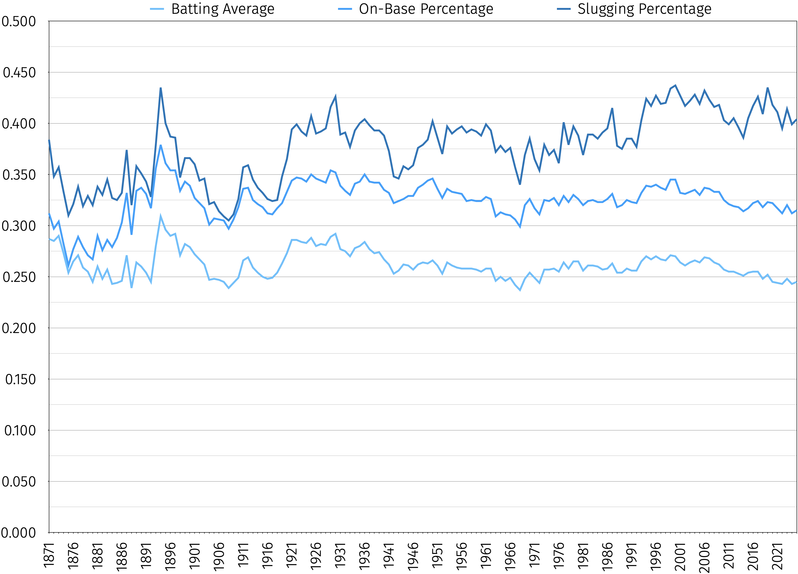
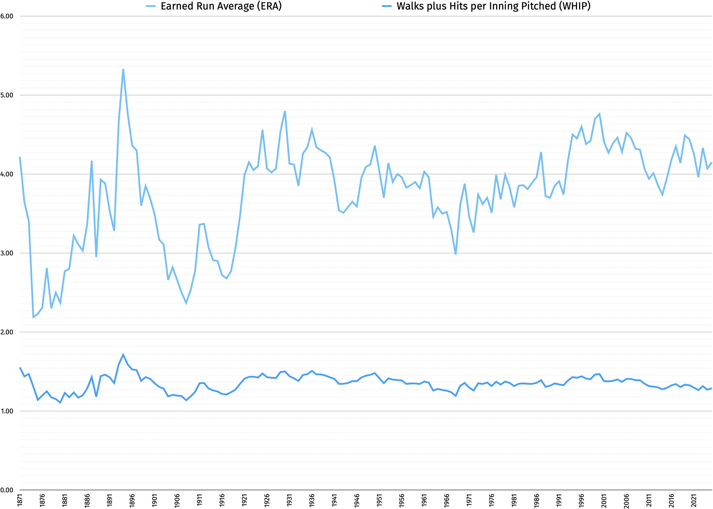
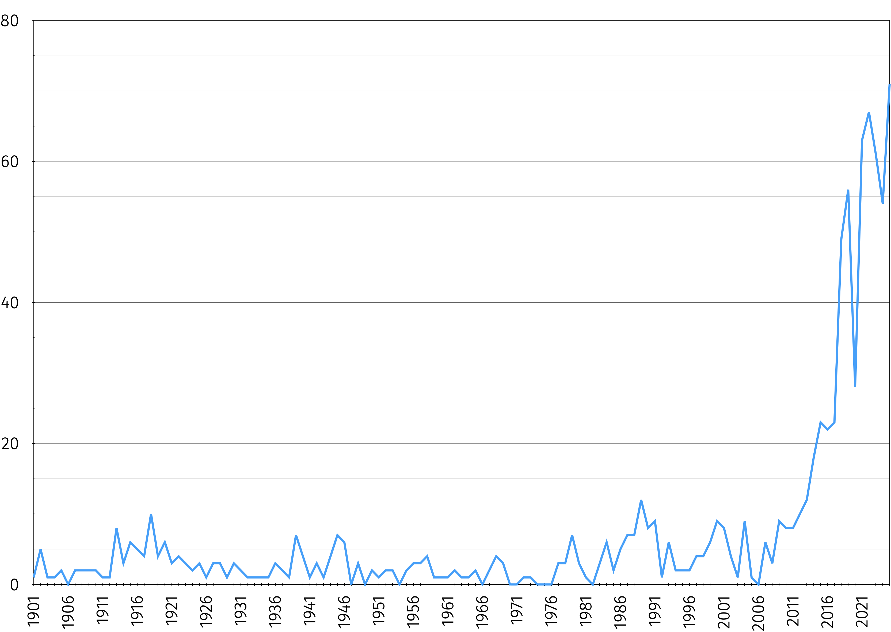

Honor lūdī
(Honor of the Game / The Game of Honor)
This is the third time I’ve accidentally written a book. I began writing a section about the 2025 World Series for my first book (On Moonlight: a film analysis, autobiography, & holistic societal critique) that grew far beyond my initial plans for it; I reached the inescapable conclusion that I was writing a third book when I realized it had grown to 70,000 words with no end in sight. (My second book, Aequilībrium harmoniae: a mathematical analysis of scales, modes, & the circle of fifths, is a lengthy, technically detailed treatise on music theory; Aequilībrium harmoniae is Latin for both The Balance of Harmony and The Harmony of Balance.)
Honor lūdī is paraphrased from one of Dodgers manager Dave Roberts’ favorite sayings, “The game honors you.” It means both honor of the game and the game of honor, owing to the unusual grammar of Latin’s genitive case. I intend both meanings. An exact Latin translation of “the game honors you” would be lūdus te honōrat.
I cover numerous topics in this book, including but hardly limited to:
wasn’t the only player to be successful as both a hitter and a pitcher before .
Along the way, you’ll also learn about such colorful characters as:
With one exception, I mostly don’t follow professional sports. I followed the 1990s Chicago Bulls: , , , , , and were poetry in motion. Until the 2024-2025 Los Angeles Dodgers rolled along, they felt like the only equivalent I’d ever see of the 1920s Yankees’ “Murderer’s Row” in any sport: a candidate for the greatest player of all time and several others who’d be other teams’ star players. I knew I was witnessing something special at the time, and I hardly find it surprising that six members of that team (Jordan, Pippen, Rodman, Kukoč, Parish, and coach ) are now Hall of Famers.
But I think I was mostly a fan of that particular lineup, not basketball itself; after the 1997-98 season, Jordan retired for a second time, and Pippen, Rodman, and Longley were traded to other teams (Parish had already retired after 1996-97, while Kukoč was traded midway through the 1999-2000 season. Parish played 1611 games, which remains an NBA record, though is about a season and a half away from surpassing it). The magic had gone, and I stopped following the sport. (It doesn’t help that, being 5’5”, I never had the slightest hope of developing any aptitude for it myself.)
My first and greatest love among sports is and probably always will be baseball. Reasons for this include:
I briefly wanted to be a baseball pitcher, but I never could learn to throw the ball fast enough, which I’ll put down to lacking the competitive drive truly needed to succeed in team sports. I can occasionally be induced to be competitive in games, but my friends have to stir it out of me.
I must preface all the following remarks by noting that I was born in Atlanta, Georgia. My understanding is that geneticists have isolated this as the key factor in congenital biases against both Game 7 of the 1991 World Series (in which the Minnesota Twins defeated the Atlanta Braves 1–0 in ten innings) and the Toronto Blue Jays (who defeated the Braves in 1992’s World Series). I will admit that objectively, 1991’s Game 7 should qualify as one of the best of all time, but I’m still not over it, and it will never, ever top my “greatest Game 7s of all time” list. (I’ve at least cooled down enough to place it in my top ten, even though I still hate the outcome.)
Moreover, even if I weren’t an Atlanta native, familial loyalty would still obligate me to be a Braves fan: their star pitcher is my second cousin. Sale, a nine-time All-Star, has won a World Series ring, a Gold Glove, a Cy Young Award, and pitching’s Triple Crown. He also reached 2,000 and 2,500 strikeouts with fewer innings pitched than any pitcher in history, unseating first-ballot Hall of Famers and respectively. He shares the MLB record of three immaculate innings (nine pitches, three strikeouts) with first-ballot Hall of Famer and (and current Blue Jays starter) , and he’s the only pitcher ever to throw two in one season (2019-05-08 and 2019-06-05).
In at least one year, he’s led MLB in win count (2024), win-loss ratio (2024), ERA (2024), ERA+ (2024), FIP (2017, 2024), strikeouts per nine innings pitched (K/9IP, 2015, 2017, 2024), home runs per nine innings pitched (2024), FanGraphs pitching wins above replacement (pWAR, 2017, 2024), strikeouts (2017), complete games (2016), and innings pitched (2017). He also led either the NL or AL in Baseball Reference pWAR (2024), complete games (2013), strikeouts (2015, 2024), ERA+ (2014), FIP (2015), K/9IP (2014), and strikeouts per bases on balls (2015). His own Hall of Fame berth is already near-certain, and unless an injury ends his career prematurely, he’ll likely become the 21st and final member of the 3,000-strikeout club, in turn all but ensuring a first-ballot election.
(I’ll have a rundown of several crucial baseball stats after this section.)
For some reason, though, I’ve mostly forgiven the Twins for 1991. I mostly haven’t forgiven the Jays for 1992. I’ve made many painful, even embarrassing revelations about my childhood and adolescence in my ⟨aaronfreed
I’m not even sure it’s the franchise, per se, that I dislike. If anything, I gained a considerable amount of overall respect for the 2025 team for its World Series performance (aside from , whom I doubt I’ll ever forgive his role in the 2017 Houston Astros’ sign-stealing). The team’s relievers made a particularly classy gesture after what was described at the time as a “family emergency” forced Dodgers reliever , whose uniform number is 51, to drop out of the World Series. (This ultimately was revealed to be his infant daughter’s illness; sadly, she passed away on October 26.) I’ll let describe:
“Yeah, I didn’t notice until… after [Chris] Bassitt struck me out, and then I was looking up at the board to see the replay, and that’s when I saw that he had 51 [on his hat], and instead of being mad that I struck out, I was kind of going back to the dugout thinking, ‘Did Bassitt play with Vesia at some point?’ And then, after the game, I saw that everybody had them. For those guys to do that, it’s incredible. They’re trying to win a Series, but they understand that … life is bigger than baseball, and baseball’s just a game. For them to do that, with … where we were at with the stakes? Hats off to them, and I want them to know that … regardless of what happens tonight, we appreciate what they did.”
And the majority of Jays fans have handled a loss that must rival how 1991 felt to us Braves fans with unimaginable grace and class. As usual, a small but vocal minority of fans are ruining everyone else’s reputation.
The reason the Twins escaped my long-time loathing, but the Jays didn’t, is largely due to the behavior of one particularly insufferable Canadian classmate in 1992 who seemed determined to teach everyone a valuable lesson by proving that not all stereotypes are always accurate: for instance, not all Canadians are polite. This was 33 years ago, so I’m not even going to attempt to recount memories of any particular incidents, which I’m sure are horrendously inaccurate. I’ll just say I didn’t know the word Backpfeifengesicht (literally, “a face in need of a slap”: of course the Germans would have a word for this – not just an expression, a single word!) in 1992, but if I had, I’m sure I’d have used it to describe him. To be clear, I don’t condone unprovoked violence, but I was in fifth grade at the time, and few things are more infuriating than a sore winner.
As I said, the majority of Jays fans last year really did nothing to earn my ire. However, I only saw signs personally attacking a specific player from one MLB franchise’s fans this season, and in case you need a hint which franchise that was, here it is: that franchise is not based in the United States. I’d still be more willing to forgive even this had they not targeted one of the nicest, humblest, hardest-working athletes in the sport’s history, a legitimate contender for the greatest to ever play it, and a member of one of this country’s most vulnerable populations besides.
I’m referring, of course, to (Japanese: 大谷 翔平; Hepburn: Ōtani Shōhei), baseball’s nearest equivalent to Michael Jordan in my lifetime, an all-rounder of historically unprecedented caliber. Before I explain why, though, it’s probably a good idea to provide context for the statistics I’ll be referring to throughout this book.
Wins Above Replacement (WAR) is a statistic tracking a player’s effectiveness over that of a replacement player, i.e., a player just brought up from the minor leagues. I won’t bore readers with a description of the exact formulae, especially since there are multiple calculations. The most important ones are:
FanGraphs has its own WAR formula, logically called fWAR. Here’s FanGraphs’ WAR explainer. (Note that FanGraphs doesn’t display pitchers’ total WAR; it’s necessary to add their pitching and non-pitching WAR.)
One of fWAR’s major differences from rWAR is its employment of a slightly modified version of Fielding Independent Pitching (explained below) to calculate pitching WAR; rWAR uses runs allowed per nine innings and attempts to compensate for team defense. This rarely produces as much variance as you might expect. Two Hall of Famers provide major exceptions: fWAR is 49.9% more generous to Jim Kaat (, ), while rWAR is 33.3% more generous to Walter Johnson (, ). I have a very mild perference for rWAR in this category, but it’s so mild that in many cases, I have taken to calculating arithmetic or geometric means of the two statistics; in others, I’ve taken to listing both.
The two calculations also vary significantly in how they handle catcher defensive metrics. FanGraphs takes pitch framing data into account where it exists (2007–present), so I strongly favor it for recent catchers. A particularly noteworthy example comes with St. Louis Cardinals catcher Yadier Molina, the greatest defensive catcher of his generation, who has and , mostly due to defense: Baseball Reference gives him 136 fielding runs against FanGraphs’ 218.4. (Baseball Bits has an excellent video about him.) Likewise, San Francisco Giants catcher Buster Posey has and .
I must emphasize that WAR is not an exact science. had 12.6 rWAR in 1927, while his teammate had 11.9. Was Ruth more effective than Gehrig that year? Trick question: those numbers are too close for us to be sure that he was. On the other hand, Ruth had 14.1 rWAR in 1923; runner-up had 10.9, which is a significant enough margin that we can be reasonably certain that Ruth had a better season. Generally, margins below 1 WAR should be considered within the margin of error, and even a 1-WAR margin is sketchy. A differential of at least 2 WAR is where we can start to be certain that a player has been more effective.
A further wrinkle arises from the fact that WAR is cumulative. That is, an entire season played slightly better than a replacement player can net the same WAR as a few games played far better than a replacement player. I’ve thus created additional metrics attempting to extricate the degree of a player’s efficacy from the duration. This requires some further details, since there are actually three main forms of WAR (though most players not named “Shōhei Ohtani” have had at most two since the National League adopted the designated hitter):
|
Αἱ τρεῖς κεφᾰ́λαιαι κᾰτηγορῐ́αι τοῦ ΠΟΛΈΜΟΥ Hai treîs kephắlaiai kătēgorĭ́ai toû POLÉMOU The three main categories of WAR | ||||
|---|---|---|---|---|
| Name / Acronym | What it’s good for | Who it covers | Who it doesn’t | |
| Defensive WAR | dWAR | Fielding | Pitchers, position players | Designated hitters |
| Offensive WAR | oWAR | Hitting, baserunning | Hitters, baserunners | Players who don’t hit or pinch-run |
| Pitching WAR | pWAR | Pitching | Pitchers, two-way players | Players who don’t pitch |
Having already wandered so far into the trees that I’m afraid of losing sight of the forest, I’ve combined dWAR and oWAR into non-pitching WAR (nWAR, pronounced like noir in film noir), which I’ll sometimes analyze in lieu of oWAR or dWAR. It helps that, while designated hitters don’t have dWAR, pitchers that never hit don’t have oWAR, and position players that never pitch don’t have pWAR, all MLB players have nWAR.
With multiple formulations and multiple categories of WAR, initialisms might get confusing. I’ll consistently use:
| WAR acronyms | ||||
|---|---|---|---|---|
| Site | Pitching | Non-pitching | Offensive | Defensive |
| Baseball Reference | rpWAR | rnWAR | roWAR | rdWAR |
| FanGraphs | fpWAR | fnWAR | foWAR | fdWAR |
| Seamheads | spWAR | snWAR | soWAR | sdWAR |
| Baseball Prospectus | pWARP | nWARP | oWARP | dWARP |
| Arithmetic mean | apWAR | anWAR | aoWAR | adWAR |
| Geometric mean | gpWAR | gnWAR | goWAR | gdWAR |
WAR is cumulative, but it’s often helpful to evaluate it over specific time spans to compare players’ consistency (especially if their career lengths varied). For this purpose, I’ve created the following metrics:
DWFS, or dWAR per fielder’s season of 600 fielding opportunities (i.e., the fielder’s sum total of putouts, assists, and errors). In truth, this varies widely by position; I simply chose 600 for continuity. On average:
Important note: nWAR ≠ oWAR + dWAR. All three numbers factor in the player’s position; simply adding oWAR and dWAR would double-count the positional adjustment. Thus, nWAR = oWAR + dWAR − positional WAR.
I only focus much on dWFS in a couple of places, largely for two reasons:
I may note it in cases where it’s especially high or especially low, but that’s all.
It’s rare for dWAR to factor into a player’s overall WAR as much as or more than oWAR, but it happens occasionally. Hall of Fame shortstop/second baseman had 30.9 roWAR, 30.8 rdWAR, 17.7 positional rWAR, and 44.0 rnWAR. Hall of Fame shortstop had 32.8 roWAR, 34.3 rdWAR, 13.8 positional WAR, and 53.3 rnWAR. Shortstop had 14.7 roWAR, 39.5 rdWAR, 13.3 positional WAR, and 40.9 rnWAR. Shortstops are by far the likeliest to accumulate huge dWAR values; of the top ten players in rdWAR, all but third baseman and catcher play(ed) mostly shortstop.
As for why I chose Tinker, Evers, and Chance for my first three examples, I refer you to Franklin Pierce Adams’ classic poem “Baseball’s Sad Lexicon”:
“These are the saddest of possible words:
‘Tinker to Evers to Chance.’
Trio of bear cubs, and fleeter than birds,
Tinker and Evers and Chance.
Ruthlessly pricking our gonfalon bubble,
Making a Giant hit into a double –
Words that are heavy with nothing but trouble:
‘Tinker to Evers to Chance.’”
One final note is that none of the above metrics should be taken as gospel ratings, especially in cases of small sample sizes. We’ll meet players with high PWMS ratios from relatively few innings pitched, or high OWHS ratings from relatively few plate appearances. These ratings don’t necessarily mean that these players would’ve continued to turn in such excellent results had they done more pitching or hitting. They might’ve (Hall of Famer threw all but one of his innings at age thirty-seven, so he might’ve done even better at a younger age), but in short, the smaller the sample size, the less confidence we should have that a player could’ve maintained a particular play standard across a longer time span.
Win–loss records and win percentage are one of the oldest pitcher efficacy metrics…and one of the worst.
gave up only a hit, a walk, and an unearned run on . He lost. Why? His counterpart, the Dodgers’ , allowed no runs, no hits, and no walks, and the Dodgers made no errors (a perfect game). Was Hendley’s outing bad? No, of course not. The Cubs just couldn’t hit Koufax. That wasn’t their fault: Hall of Famer compared trying to hit Koufax to “eating soup with a fork”.
This is an extreme example, but it goes to show these metrics’ limitations. Decisions (individual wins and losses) are almost useless for relievers, who rarely enter games with blank slates. If I enter a game my team is winning, I’m only credited with a win if I give up at least enough runs to tie the game, then my teammates regain it. Likewise, if I enter one we’re losing, I can only get a loss if my teammates score at least enough to tie the game, then I give up enough runs to set us behind. Effectively, our situation when I enter greatly affects my odds of earning wins or losses, and our manager controls when I enter; I don’t. This is why other stats exist for relievers. Arguably, a high decision count being a red flag for a reliever is the only thing that keeps reliever decisions from being trivia.
Comparing starters’ record and win% to their other stats can provide perhaps surprising insights not on the starters, but on their teammates and opponents. We can conclude that a pitcher with a tied or losing record, low WHIP, and high ERA+ is actually an incredible pitcher who likely suffers from either:
Several similar statistics are meant to track reliever effectiveness. Since 1975, MLB rules have credited a save as occurring when a pitcher:
In a potential save opportunity, a blown save involves giving up the game-tying run (whether or not the runner was already on base). A reliever in the same situation who records at least one out without blowing the save or finishing the game is credited with a hold and is not credited with a save opportunity. Save percentage is calculated by dividing a reliever’s saves by their save opportunities.
These statistics have come in for some criticism; Hall of Fame relievers and each blew over 100 saves but were still extraordinarily effective overall. It’s arguably better to use one’s best relievers strategically in close games than to uniformly use them for every game’s final inning. Sabermetric analysis has clearly demonstrated, however, that the most effective reliever is the previous game’s javelin-throwing starter; no such pitcher has ever lost a World Series game.
Relievers are saddled with broken eggs when:
And they’re credited with mehs if a run charged to another pitcher or an unearned run scores while they’re on the mound. Silver argues that:
“[M]anagers are trying to maximize the number of saves for their closer, as opposed to the number of wins for their team. They’re managing to a stat and playing worse baseball as a result. … [A save] doesn’t give a pitcher any additional reward for pitching multiple innings — even though two clutch innings pitched in relief are roughly twice as valuable as one. And a pitcher doesn’t get a save for pitching in a tie game, even though it’s one of the highest-leverage situations.”
He also argues that goose eggs and broken eggs correlate much more closely (0.78) to the much more complex statistic Win Probability Added than saves and blown saves do (0.50).
Goose Wins Above Replacement is to goose eggs as pitching WAR is to wins. (Unfortunately, Dave Brockie [RIP] is not MLB’s leader in GWAR.) had the best single-season GWAR in 1965, with 79 goose eggs to 7 broken eggs for 7.5 GWAR. His traditional stats looked good enough at 14–7, 1.89 ERA, 24 saves, 119⅓ IP, and 4.2 pWAR, but he was almost unhittable in high-leverage situations. Lifetime save leader also leads in lifetime GWAR with 54.6, but his best season according to GWAR was not 2004 (53 saves, 47 goose eggs, 4 broken eggs, 2.09 ERA, and 232 ERA+ in 78⅔, 4.2 pWAR, 5.4 GWAR) IP, but 1996 (5 saves, 54 goose eggs, 6 broken eggs, 1.94 ERA, 240 ERA+, 107⅓ IP, 5.0 pWAR, 6.6 GWAR).
Yoshinobu Yamamoto got three goose eggs out of three opportunities in World Series Game 7 last year. Will Klein got four out of four in Game 3. In and of itself, that feels like sufficient proof of this statistic’s value.
ERA, or Earned Run Average, is a traditional metric of how often a pitcher gives up earned runs, or runs that aren’t the result of fielding errors. A lower number is better. The formula for calculating it is simple: Earned Runs × 9 ÷ Innings Pitched. It has several limitations, but it’s still widely used, partly because it’s easy to understand and calculate. Also, unlike ERA+, it’s possible to calculate for postseason games.
, the all-time career leader, has a 1.816 career ERA. He also pitched exclusively in what’s called the “dead-ball era” because it was extremely hitter-unfriendly. The dead-ball era ended after 1919, coincidentally ’s last season with the Boston Red Sox.
The modern leader, , retired in 2013 with a 2.209 career ERA. Rivera was primarily a reliever, meaning that he worked in smaller spans. Relievers tend to have lower ERAs. , who just retired, has the lowest career ERA among modern starters, with 2.534. The increase in ERA over the years is less due to a decline in pitching quality and more due to rule changes and an increase in hitting quality.
ERA+ has overtaken ERA as one of the most important indicators of a pitcher’s effectiveness in recent years, though it has a few weaknesses (most notably, it isn’t calculated for postseason games, and it’s also more complicated to explain). Unlike ERA, it’s adjusted to factors such as the overall league average ERA and how hitter-friendly the ballpark is – thus, runs allowed at the Colorado Rockies’ Coors Field, which is notoriously hitter-friendly due to being over a mile above sea level, will count less against a pitcher’s ERA+ than runs allowed at the Miami Marlins’ LoanDepot Park, which is, unsurprisingly, at sea level. Perhaps the most important difference from ERA, though, is that a higher ERA+ number is better. This stat’s career leaders are:
The fact that this list spans baseball’s entire history suggests it measures a pitcher’s relative dominance much more reliably than ERA does. Also, although not every great pitcher in history ranks this high on this list (it’s missing , , , , and several other immortals), every pitcher on this list was great. (Even Devlin, who burned briefly but brightly – no one has ever duplicated his feat of throwing literally every pitch his team threw that year, and no one ever will.)
Complete games have become extraordinarily rare. In 1904, 87.6% of games were complete games; in 2024, 0.6% were. This is largely due to increasingly strict adherence to pitch counts, to the extent that it was considered extraordinarily unusual when Yoshinobu Yamamoto threw 96 pitches in Game 6 of last year’s World Series, then another 34 in Game 7. (This is nothing for Yoshi, who’d thrown up to 140 pitches in NPB games, and who throws javelins for practice.) It has been speculated that this may lead to a decrease in reliance on pitch counts, since Yamamoto has been healthy over a career in which he has thrown a lot, while despite the modern obsession with pitch counts, pitchers are suffering more injuries than ever before.
A no-hitter is a game of at least nine innings in which a pitcher does not allow a single hit. The Venn diagram between shutouts and no-hitters is a large circle mostly overlapping with a smaller circle: no-hitters can allow runs if batters reach on errors or pitchers walk too many batters. Most no-hitters are complete games, although MLB’s most recent no-hitter was a combined no-hitter thrown on by , , and . Only three postseason no-hitters have ever been thrown:
A perfect game is a game of nine innings or more in which no opposing batter safely reaches base. Thus, no walk, hit, hit batsman, catcher’s interference, fielder’s obstruction, fielding error, or uncaught third strike may allow any batter to reach base. As a result of a 1991 rule changes, a previously perfect game spoiled in extra innings does not count. Only twenty-four perfect games have officially been pitched in MLB history. No one has ever pitched more than one, and ’s in the 1956 World Series is the only one in postseason history. threw the most recent perfect game on .
A perfect game, by definition, is a no-hitter, but not necessarily a shutout, although so far, they all have been. The “ghost runner” in extra-inning regular-season games does not spoil a perfect game, even if he advances due to such occurrences as sacrifice flies or fielding errors, so a pitcher could at least theoretically pitch a perfect game he still loses. However, there has never been an official extra-inning perfect game, so this has never happened. (I can almost guarantee that it will if any Los Angeles Angels pitcher ever manages to carry a perfect game into extra innings. If any team can find a way to lose a game in which their players do something incredible and historically unprecedented, it’s the Angels. I list two cases of games that were perfect until extra innings below. I also list unofficial perfect games the umpires themselves subsequently admitted they spoiled with bad calls below.)
Here are all twenty-four official MLB perfect games. FS stands for Final Score, PC for Pitch Count, and K for Strikeouts. Hall of Famers are italicized.
| MLB Official Perfect Games | ||||||||||
|---|---|---|---|---|---|---|---|---|---|---|
| Pitcher Team |
Opposing Starter Team |
Date | FS | PC | K | |||||
Worcester Ruby Legs |
Cleveland Blues |
1880-06-12 | 1–0 | 5 | ||||||
Providence Grays |
Buffalo Bisons |
1880-06-17 | 5–0 | 2 | ||||||
Boston Americans |
Philadelphia Athletics |
1904-05-05 | 3–0 | 8 | ||||||
Cleveland Naps |
Chicago White Sox |
1908-10-02 | 1–0 | 74 | 3 | |||||
Chicago White Sox |
Detroit Tigers |
1922-04-30 | 2–0 | 90 | 6 | |||||
New York Yankees |
Brooklyn Dodgers |
1956-10-08 | 2–0 | 97 | 7 | |||||
Philadelphia Phillies |
New York Mets |
1964-06-21 | 6–0 | 90 | 10 | |||||
Los Angeles Dodgers |
Chicago Cubs |
1965-09-09 | 1–0 | 113 | 14 | |||||
Oakland Athletics |
Minnesota Twins |
1968-05-08 | 4–0 | 107 | 11 | |||||
Cleveland Indians |
Toronto Blue Jays |
1981-05-15 | 3–0 | 102 | 11 | |||||
California Angels |
Texas Rangers |
1984-09-30 | 1–0 | 94 | 10 | |||||
Cincinnati Reds |
Los Angeles Dodgers |
1988-09-16 | 1–0 | 102 | 7 | |||||
Montreal Expos |
Los Angeles Dodgers |
1991-07-28 | 2–0 | 96 | 5 | |||||
Texas Rangers |
California Angels |
1994–07–28 | 4–0 | 98 | 8 | |||||
New York Yankees |
Minnesota Twins |
1998-05-17 | 4–0 | 120 | 11 | |||||
New York Yankees |
Montreal Expos |
1999-07-18 | 6–0 | 88 | 10 | |||||
Arizona Diamondbacks |
Atlanta Braves |
2004-05-18 | 2–0 | 117 | 13 | |||||
Chicago White Sox |
Tampa Bay Rays |
2009-07-23 | 5–0 | 116 | 6 | |||||
Oakland Athletics |
Tampa Bay Rays |
2010-05-09 | 4–0 | 109 | 6 | |||||
Philadelphia Phillies |
Florida Marlins |
2010-05-29 | 1–0 | 115 | 11 | |||||
Chicago White Sox |
Seattle Mariners |
2012-04-21 | 4–0 | 96 | 9 | |||||
San Francisco Giants |
Houston Astros |
2012-06-13 | 10–0 | 125 | 14 | |||||
Seattle Mariners |
Tampa Bay Rays |
2012-08–15 | 1–0 | 113 | K | |||||
New York Yankees |
Oakland Athletics |
2023-06-28 | 11–0 | 99 | 9 | |||||
Baseball Reference says Barker threw 102 pitches in his perfect game; Baseball Almanac says 103. Likewise, BR says Browning threw 101 and BA says 102. Finally, BR says Martínez threw 96 and BA says 95. One of these days, if I feel especially bored, I may review all three videos and see which is correct.
The Rangers and Angels are the only teams to throw perfect games against each other (in the same ballpark, at that). The Yankees threw the only consecutive perfect games (strangely, in back-to-back years, and both by pitchers named David), while the Dodgers and Rays had consecutive perfect games thrown against them (the latter also in back-to-back years).
Honorable mentions:
- On 1908-07-04, the New York Giants’ lost a perfect game against the Philadelphia Phillies on a 2–2 count in a perfect game when he hit the twenty-seventh batter, opposing pitcher George McQuillan. He ulimately won the game 1–0 in ten innings. However, umpire Cy Rigler later admitted that he had miscalled a strike, meaning that Wiltse’s game should’ve been perfect. Wiltse later recalled, “Every time I saw Charlie Rigler after that he gave me a cigar. He admits [the disputed ball] was one of the pitches he missed.” Wiltse’s game remains arguably the greatest extra-inning no-hitter in MLB history; three others went into extras, and they all lasted ten innings.
- The 1991 rule change retroactively removed perfect status from a 1959-05-26 game in which the Pittsburgh Pirates’ Harvey Haddix threw 12⅔ perfect innings against the Milwaukee Braves before subsequently losing it to an error by Pirates third baseman Don Hoak. Pittsburgh then went on to lose the game when Joe Adcock hit an apparent home run (later ruled a ground-rule double due to a rare baserunning mistake by Hank Aaron, who did not see the ball clear the first fence). Haddix handled the decertification of his perfect game a lot more gracefully than I would’ve, saying only, “It’s OK. I know what I did.” Milwaukee’s Bob Buhl, at a banquet for the game’s 30th anniversary, subsequently admitted to having stolen signals from catcher Smoky Burgess and relayed them to Milwaukee’s hitters with a towel. Aaron was the Braves’ only batter who refused to take the signals (which gives his own response to the Houston Astros’ 2017 sign-stealing scandal, “I think whoever did that should be out of baseball for the rest of their lives,” a lot more force). Despite this, Adcock had Milwaukee’s only hit; Aaron had been intentionally walked. Arguably the only greater effort by a losing pitcher in MLB history was Bob Hendley’s in Koufax’s perfect game: Hendley gave up one hit and no earned runs and still got the L.
- On 1995-06-03, the Montreal Expos’ (no relation to Dennis) gave up a double to the San Diego Padres’ Bip Roberts in the bottom of the tenth inning; Montreal manager Felipe Alou then brought in reliever Mel Rojas. After a wild pitch, Rojas retired the next three batters, and Montreal won the game 1–0. Martínez displayed a lot more aplomb than I would’ve in his shoes, saying, “We went on to win, but according to the rulebook, I could not be given credit for a perfect game, even though I had gone nine perfect innings. Reporters afterward told me that the last person to lose a perfect game in extra innings was Harvey Haddix. I really wasn’t that upset about losing a perfect game according to a technicality. Everyone with the Expos thought I received some vindication.” Alou responded, “This was the best answer Pedro could give… I’m not surprised that he threw this kind of game.”
Unofficially, retired twenty-eight consecutive batters on 2010-06-02. How? Umpire Jim Joyce ruled that the Cleveland Indians’ Jason Donald had safely reached first. Galarraga handled this far more gracefully than I would’ve, saying Joyce “probably feels more bad than me. Nobody’s perfect. Everybody’s human. I understand. I give the guy a lot of credit for saying, ‘I need to talk to you.’ You don’t see an umpire tell you that after a game. I gave him a hug.”
Hall of Fame closer Mariano Rivera said:
“It happened to the best umpire we have in our game. The best. And a perfect gentleman… It’s a shame for both of them, for the pitcher and for the umpire. But I’m telling you he is the best baseball has, and a great guy. It’s just a shame.”, who lost a 1972-09-02 bid for a perfect game (, SABR) when umpire Bruce Froemming called two borderline pitches to 27th batter Larry Stahl balls, told Galarraga:
“I feel for you. There have been only 20 perfect games in the history of baseball. The umpire situation was the same one I had; they blew it. At least I had the satisfaction of getting a no-hitter. You don’t. I feel for you; you pitched a tremendous game. At least you have the satisfaction of the umpire saying he was sorry. But that doesn't help your situation as far as a perfect game.”(Pappas subsequently retired the twenty-eighth batter, preserving the no-hitter. He also reacted a lot more like I suspect I would’ve in his shoes: he was initially furious; then, after the game, he publicly gave Froemming the benefit of the doubt; but over the decades, Froemming’s refusal to second-guess his own calls increasingly infuriated Pappas.)
Both Galarraga and Joyce received praise for their handling of the situation from sources up to and including President Barack Obama, who said their conduct “showed something about sportsmanship that you don’t see enough of in America today.” Some two weeks after the game, Joyce was voted MLB’s best umpire with 53% of votes; one player said:
“The sad thing…is, Jim Joyce is seriously one of the best umpires around… He always calls it fair, so players love him. Everyone makes mistakes, and it’s terrible that this happened to him.”Joyce and Galarraga have both called for Galarraga’s game to be retroactively certified as a perfect game, but thus far, baseball commissioners Bud Selig and Rob Manfred have refused calls to do so. However, it was likely a major factor in MLB’s subsequent implementation of the instant replay system.
Perfect game win-loss records for franchises with at least two (using cumulative scores as tiebreakers):
- New York Yankees: 4–0 (score: 23–0)
- Philadelphia Phillies: 2–0 (score: 7–0)
- Cleveland Naps/Indians/Guardians: 2–0 (score: 4–0)
- Chicago White Sox: 3–1 (score: 11–1)
- Philadelphia/Oakland Athletics: 2–2 (score: 8–14)
- Texas Rangers: 1–1 (score: 4–1)
- California/Los Angeles Angels: 1–1 (score: 1–4)
- Brooklyn/Los Angeles Dodgers: 1–3 (score: 1–5)
- Minnesota Twins: 0–2 (score: 0–8)
- Tampa Bay Rays: 0–3 (score: 0–10)
9+ inning perfect games in other top-level professional sports leagues:
- Nippon Professional Baseball has had sixteen official perfect games in its history:
- 1950-07-28: Hideo Fujimoto (藤本 英雄, Yomiuri Giants) vs. Nishi-Nippon Pirates, 4–0, 7 K
- 1955-06-19: Fumio Takechi (武智 文雄, Kintetsu Pearls) vs. Daiei Stars, 1–0, 6 K
- 1956-09-19: Yoshitomo Miyaji (宮地 惟友, Kokutetsu Swallows) vs. Hiroshima Carp, 6–0, 3 K
- 1957-08-21: Masaichi Kaneda (金田 正一, Kokutetsu Swallows) vs. Chunichi Dragons, 1–0, 10 K
- 1958-07-19: Sadao Nishimura (西村 貞朗, Nishitetsu Lions) vs. Toei Flyers, 1–0, 6 K
- 1960-08-11: Gentarō Shimada (島田 源太郎, Taiyo Whales) vs. Osaka Tigers, 1–0, 3 K
- 1961-06-20: Yoshimi Moritaki (森滝 義巳, Koktetsu Swallows) vs. Chunichi Dragons, 1–0, 4 K
- 1966-05-01: Yoshirō Sasaki (佐々木 吉郎, Taiyo Whales) vs. Hiroshima Carp, 1–0, 7 K
- 1966-05-12: Tsutomu Tanaka (田中 勉, Nishitetsu Lions) vs. Nankai Hawks, 2–0, 7 K
- 1968-09-14: Yoshiro Sotokoba (外木場 義郎, Hiroshima Toyo Carp) vs. Taiyo Whales, 2–0, 16 K
- 1970-10-06: Koichiro Sasaki (佐々木 宏一郎, Kintetsu Buffaloes) vs. Nankai Hawks, 3–0, 4 K
- 1971-08-21: Yoshimasa Takahashi (高橋 善正, Toei Flyers) vs. Nishitetsu Lions, 4–0, 1 K
- 1973-08-10: Soroku Yagisawa (八木沢 荘六, Lotte Orions) vs. Taiheiyo Club Lions, 1–0, 6 K
- 1978-08-31: Yutaro Imai (今井 雄太郎, Hankyu Braves) vs. Lotte Orions, 5–0, 3 K
- 1994-05-18: Hiromi Makihara (槙原 寛己, Yomiuri Giants) vs. Hiroshima Toyo Carp, 6–0, 7 K
- 2022-04-10: Rōki Sasaki (佐々木 朗希, Chiba Lotte Marines) vs. Orix Buffaloes, 6–0, 19 K
Notes:
- As far as I know, all three Sasakis are unrelated.
- In Makihara’s game, the Giants dropped a foul fly ball, which was scored as an error, but Makihara went on to retire the batter, so he kept his perfect game.
- Rōki was the youngest pitcher to throw a perfect game in NPB history; he is also the only pitcher I know of to have fanned more than two-thirds of the batters he faced in a perfect game. At one point he struck out 13 straight batters, which is an all-time NPB record. He was also perfect in the next eight innings he threw on 2022-04-16, but he was removed after having thrown 102 pitches in what at the time was a scoreless tie (Chiba lost the game 1–0 in extra innings).
- The World Baseball Softball Confederation also recognizes a 2007-11-01 Japan Series-clinching 1–0, seven-strikeout victory by the Chunichi Dragons’ Daisuke Yamai (山井 大介) and Hitoke Iwase (岩瀬 仁紀) over the Hokkaido Nippon-Ham Fighters as a combined perfect game; it is the only combined perfect game in top-level pro baseball history to span a regulation nine innings.
- The Chinese Professional Baseball League has had one, thrown by Ryan Verdugo on 2018-10-07.
The All-American Girls Professional Baseball League had five perfect games in its history (1943–1954):
- 1944-07-29: Annabelle “Lefty” Lee (Minneapolis Millerettes) vs. the Kenosha Comets
- Later named Annabelle Harmon; her nephew, MLB pitcher , called her “the best athlete in our family, including me” and credited her with teaching him to play.
- 1945-07-06 Carolyn Morris (Rockford Peaches) vs. the Fort Wayne Daisies
- 1947-08-18: Doris “Sammye” Sams (Muskegon Lassies) vs. the Fort Wayne Daisies
- Sams, a superb two-way player, had a career .290 batting average (sixth-best in league history) and .368 slugging%; she also set a league record in 1952 with twelve home runs. Unsurprisingly, she was twice selected as its Player of the Year.
- 1951-07-21: Jean Faut (South Bend Blue Sox) vs. the Rockford Peaches
- 1953-09-03: Jean Faut (South Bend Blue Sox) vs. the Muskegon Lassies
- Faut, also an excellent two-way player (.243 average, .299 slugging%), was the only pro baseball player ever to throw two perfect games; she ended her career with a 140–64 record and 1.23 ERA, the lowest for any AAGPBL pitcher with at least 500 IP. She was second in wins only to Helen Nicol Fox (163), and third on its career strikeouts list with 913. She was also a two-time Player of the Year; she and Sams were the only players so honored.
Baseball Almanac has more.
A Maddux, named for Hall of Famer , is a complete-game shutout thrown in under 100 pitches. 1988 was the first year of pitch count tracking, so they’re not officially tracked before then, but some games have since been determined to qualify for the accomplishment.
Greg Maddux became the eponym because he threw a record thirteen in his twenty-three-year career (, , , , , , , , , , , , ). Runner-up threw seven (, , , , , , ). Maddux (1998) and Smith (1991) also share the single-season record, with three apiece. Interestingly, both were Atlanta Braves pitchers for much of their careers, though not at the same time (and indeed, Smith threw all seven of his for the Pittsburgh Pirates). Two other weird coincidences: Maddux and Smith both threw Madduxes on 1994-08-11, that season’s last day of baseball due to a players’ strike. (My birthday is the 12th. Worst. Birthday present. Ever.)
Thirteen Madduxes since 1988 were no-hitters; at least five (in bold and italics) were also perfect games. Baseball Almanac has also retroactively found five pre-1988 perfect games to have been Madduxes.
(Intro to hitting stats TK)
Let’s start with one of Ohtani’s less eye-catching (but still record-setting) accomplishments. Before 2024, no player who had hit fifty or more home runs had stolen more than twenty-four bases in the same season. (1955) and (2007) shared the record. Similarly, had the high count for home runs in a season with at least fifty stolen bases: seventy-three stolen bases, forty-one home runs.
There’s a lot of reasons for this, starting with the obvious one that stealing bases is an achievement of speed, while hitting home runs is an achievement of power. A perhaps slightly less obvious one is that these two goals are mutually exclusive. Every single home run a player hits is a chance they will not get to steal a base.
Before the game on , Ohtani had forty-eight home runs and forty-nine stolen bases that season.
When it ended, he didn’t have fifty home runs, nor did he have fifty stolen bases.
He had fifty-one home runs and fifty-one stolen bases.
In all, he went six for six, with five extra-base hits, seventeen total bases, and ten RBI. The Dodgers clinched their playoff berth with a 20–4 victory. Miami Marlins manager also deserves credit for the respect he showed both Ohtani and the game of baseball. In the top of the seventh inning, Ohtani was four for four with a home run, two doubles, and two stolen bases, and Los Angeles led 11–3. Schumaker was asked about intentionally walking Ohtani. He responded, “Fuck that. Too much respect for this guy for that shit to happen.”
After the game, he called the idea of an intentional walk:
“a bad move… karma-wise, baseball god-wise. You go after him and see if you can get him out. Out of respect for the game, we’re gonna go after him. He hit the home runs; that’s just part of the deal.”
(File this quote away in your mind – we’ll be returning to it later.)
He also called Ohtani “the most talented player” he’d ever seen (high praise indeed from of future Hall of Famer ) and said Ohtani was:
“doing things that I’ve never seen done before…. If he has a couple more of these peak years, he might be the best ever to play the game.… It was a good day for baseball, a bad day for the Marlins.”
The Marlins’ audience clearly understood they were witnessing history as well: even though their team was being blown out, they responded to his accomplishments with enthusiastic applause. (This is hardly unprecedented; visiting pitchers often get standing ovations from home crowds after throwing perfect games.)
In that game, Ohtani became the first:
MLB player since RBI have been tracked to have:
across an entire career. And he did it all in one game.
Ohtani ended the season with 54 home runs and 59 stolen bases, and he was only caught stealing four times that entire season. In fact, he isn’t just the only member of MLB’s 50–50 club. He’s also the only member of its 45–45 club. Let’s break down how astonishing this accomplishment is:
Just two other players have hit at least fifty home runs and stolen at least fifty bases in separate years:
Which makes for a great trivia question: “Who is the only Major League Baseball player besides Barry Bonds and Shōhei Ohtani to have hit at least fifty home runs and stolen at least fifty bases in any (not necessarily the same) season?” (I might’ve guessed the late, dearly lamented , who hit a respectable 297 career home runs, but never more than 28 in a season [1986, 1990].)
The 40–40 club has only five other members, and no one, including Ohtani, has entered it twice:
Two hit at least forty home runs the same year they stole at least forty-five bases:
One hit at least forty-five home runs the same year he stole at least forty bases:
The other two hit forty-two home runs the same year they stole forty bases:
(Canseco, the first to do so, correctly predicted that he would accomplish the feat in 1988; ironically, he mistakenly assumed he would be the sixth or seventh player to do so. was subsequently quoted as saying, “Hell, if I’d known 40–40 was going to be a big deal, I’d have done it every year!”)
Icing on the cake: Ohtani got to 40–40 in 21 fewer games than any of his predecessors. And he did it with a walk-off grand slam.
Perhaps most importantly, Ohtani founded the 50–50 club while probably dozens of MLB pitchers who were in the midst of rehabbing from Tommy John surgery. One of those pitchers is named Shohei Ohtani. Because, as most people who read this were already aware, I may have deliberately buried the lede a bit.
We’re obviously going to focus on that more, but first, I want to emphasize that this is what he did while he was injured. Just mind-boggling.
Ohtani isn’t just a speed demon who can hit to all corners of the field. He also pitches a bit. If you’re European, imagine and being the same player and you’ll get an idea of how rare this is. (Substitute and if you’re a bit younger, and and if you’re a lot younger.)
Ohtani is the first player to have excelled to this degree at both hitting and pitching since Hall of Famer retired from the Negro Leagues in 1945. He’s also by far the most famous player to have done so since one , and Ohtani has arguably already outdone the Bambino on numerous counts. Babe was an excellent pitcher and an incredible hitter, but he mostly focused on pitching with the Red Sox and on hitting with the Yankees; he was also a middling baserunner who got worse as he aged. Ohtani has both hit and pitched fairly consistently despite some injuries, and as we’ve seen, he’s also a superb baserunner.
On , Ohtani founded another, even more remarkable 50–50 club, becoming MLB’s first player to strike out 50 batters and hit 50 home runs in the same season. (Bonus: He passed both milestones in the same game – and pitched five no-hit innings at that. Remarkably, Los Angeles’ bullpen somehow lost the game anyway.)
He’s also the first modern player to lead his league in pitching and offensive statistics in one season (2022): as a pitcher, he led the AL in strikeouts per innings pitched (11.87); as a hitter, he had the highest exit-velocity home run that season (111.9 mph); and as a baserunner, he led MLB with a home-to-first average time of 4.09 seconds. And 2022 was his weakest season since he spent most of 2020 recovering from an injury!
Needless to say, he’s won countless awards, including but hardly limited to:
He’s only the second player to have been named MVP in both leagues (following , who won the 1961 NL MVP as a Cincinnati Red and the 1966 AL MVP as a Baltimore Oriole). Ohtani won all four MVPs unanimously, which is unprecedented in at least two ways:
He’s also led either the AL or NL (and sometimes both) in several important statistics in up to three seasons since 2021 (his first full MLB season with no major injuries):
| Shōhei Ohtani’s first-place season statistics | |||||||
|---|---|---|---|---|---|---|---|
| Count for | LA Angels | LA Dodgers | |||||
| MLB | AL/NL | 2021 | 2022 | 2023 | 2024 | 2025 | |
| Win probability added (WPA) | 3 | 3 | MLB | MLB | MLB | ||
| On-base plus slugging (OPS) | 1 | 3 | MLB | NL | NL | ||
| Slugging percentage (SLG) | 1 | 3 | MLB | NL | NL | ||
| Total bases (TB) | 1 | 3 | AL | NL | MLB | ||
| Reference-weighted runs batting (Rbat+) | 1 | 3 | MLB | NL | NL | ||
| Wins above replacement (WAR) | 0 | 3 | AL | AL | NL | ||
| Extra-base hits (EBH) | 0 | 3 | AL | NL | NL | ||
| Base-out runs added (RE24) | 0 | 3 | AL | NL | NL | ||
| Reference-weighted on-base average (rOBA) | 0 | 3 | AL | NL | NL | ||
| Runs scored (R) | 2 | 2 | MLB | MLB | |||
| Home runs (HR) | 0 | 2 | AL | NL | |||
| On-base percentage (OBP) | 0 | 2 | AL | NL | |||
| Intentional base on balls (IBB) | 0 | 2 | AL | NL | |||
| Power-speed number (PSN) | 0 | 2 | AL | NL | |||
| At-bats per home run (AB/HR) | 0 | 2 | AL | NL | |||
| Triples (3B) | 1 | 1 | MLB | ||||
| Fielding percentage (Fld%) | 1 | 1 | MLB | ||||
| Runs batted in (RBI) | 0 | 1 | NL | ||||
| Strikeouts per nine innings pitched (SO9) | 0 | 1 | AL | ||||
Clearly, his 2022 season lagged behind the other four, and of those four, note that the two seasons he led in IBB were the two he didn’t lead in home runs. This is not coincidental.
But is Ohtani a good enough pitcher to win a Cy Young Award someday? Perhaps. Let’s compare his last five years to ’s. (Remember, in 2024, Sale won the Triple Crown and the NL Cy Young Award.)
| 2021–25 pitching stats: Sale & Ohtani | |||||
|---|---|---|---|---|---|
| Pitcher | IP | W–L | ERA | SO | SO9 |
| Chris Sale | 454⅓ | 36–14 | 2.95 | 572 | 11.331 |
| Shōhei Ohtani | 475⅓ | 35–17 | 2.84 | 604 | 11.436 |
Not all their stats are that similar, but it’s kind of spooky how close these are. If I saw those numbers devoid of context, I’d probably assume they were different five-year spans from the same pitcher.
Baseball is effectively a series of pitcher-hitter interactions. Since the National League adopted the designated hitter in 2022, most players have only had chances to do one or the other. Coincidentally, in 2022, Ohtani faced 666 batters (BF) and made 660 plate appearances (PA). Neither of those is especially noteworthy on its own, but that sums up to a career-high 1,326 chances to affect a game’s score, which, for lack of a better term, I’ll just call total plays (TP). By contrast, the Miami Marlins’ led MLB that year in BF (886), and the Texas Rangers’ led MLB that year in PA (724). With both leagues now using the DH and no other pitchers batting for themselves, Ohtani led MLB in TP by 450.
So, how remarkable are 1,326 TP? Well, ’ 778 PA in 2007 are the single-season record, so you’ll have to pitch a lot to exceed 1,326 TP. The last player to do so was in 1980, and narrowly at that: 1,221 BF, 111 PA, 1,332 TP. (He was also on fire as a pitcher, leading MLB with 162 ERA+, 2.42 FIP, 286 strikeouts, and 10.2 pWAR. Unsurprisingly, he won 1980’s NL Cy Young Award. His hitting stats, though, were .188/.190/.198, for −0.1 nWAR – respectable stats for a pitcher, but nothing to write home about. He still led MLB in overall WAR with 10.1; runner-up had 9.4.)
Legendary Atlanta Braves knuckleball pitcher exceeded them both in 1979 far more comfortably, with 1,570 TP from 134 PA (with a respectable 0.4 nWAR; his .195/.213/.244 hitting stats are respectable by pitchers’ standards and actually almost legendary by 39-year-old pitchers’ standards) and 1,436 BF (with an MLB-best 7.4 pWAR); his 7.7 WAR was good for fifth-best in MLB. (In 1978, he’d led MLB in WAR outright with 10.4, outstripping runner-up [and AL Cy Young winner] by 0.8. Since knuckleballs are unusually slow, knuckleballers often have unusually long careers; Niekro played his last MLB game at forty-eight, making him MLB’s tenth-oldest player ever. His career total of 22,677 BF is a modern record; all-time, only [29,565 in 1890–1911], [25,415 in 1875–1892], and [23,415 in 1907–1927] faced more.)
Carlton again came close to exceeding 1,326 TP in 1982 (1,302 TP, 1,193 BF, 109 PA) and 1983 (1,288 TP, 1,183 BF, 105 PA), but that’s all, and since 1980, only a few other players have even come within 100:
Naturally, Ohtani’s 45.5 WAR from 2021–2025 led MLB; only (41.8) even came close, with (32.2) a distant third. Is it any surprise that Ohtani has been a unanimous MVP for ?
On , Ohtani faced Yankees closer in the bottom of the eighth inning and struck out on a 100 mph sinker. The replay clearly shows how impressed he was. He’d been experimenting with a sinker since May that year and had gotten its velocity up to 100 mph, but it didn’t really have the sink a good sinker needs, nor did he have the command he wanted over it. According to his teammate , Ohtani went to the bullpen the very next day, pulled up Holmes’ movement numbers, and went to town trying to match them.
Ohtani next pitched on against the Houston Astros. He struck out five batters in eight innings, giving up a single run on six hits. After a 100 mph sinker sailed by for strike three, McCormick showed the same expression that Ohtani had shown after Holmes’ sinker. Ohtani threw his retooled sinker twenty times that day. The results are clear. (“VB” and “HB” respectively stand for ”Vertical Break” and “Horizontal Break”.)
| Sinker Comparison | ||||||
|---|---|---|---|---|---|---|
| Pitcher | Batter | Date | mph | rpm | VB | HB |
| Ohtani | Blue Jays | 2022-08-27 | 97.1 | 1935 | 5” | 15” |
| Holmes | Ohtani | 2022-08-31 | 99.7 | 2215 | 4” | 18” |
| Ohtani | McCormick | 2022-09-03 | 99.7 | 2092 | 8” | 20” |
As of 2022-09-02, ’s sinker had the highest horizontal break in MLB with 19.3”. Ohtani’s was 20”. Furthermore, of the top twenty horizontal-breaking sinkers in MLB, ’s had the highest velocity at 96.6 mph. Ohtani’s was 99.7. In short, he took a single bullpen session to learn to throw a new pitch better than everyone else in Major League Baseball.
Who else does anything even remotely like this?
And, again, injuries have curtailed his pitching over his time in MLB; who knows how much better he’ll get if he avoids them. He might’ve given us a preview in 2025’s NL Championship Series’ , wherein he went where no one except callow adolescents ever even imagined going before. In that game, Ohtani:
His twelve total bases in that game ties for seventh-highest in any playoff game in history:
| Most Total Bases in One Playoff Game | |||
|---|---|---|---|
| # | Player | Game | TB |
| 1. | 14 | ||
| 3. | 13 | ||
| 7. | 12 | ||
(And, of course, I’ve gotten ahead of myself – we’ll discuss World Series Game 3 below.)
Numerous sportswriters immediately proclaimed it the greatest single-game performance by a single athlete in not just baseball history, but sports history. In short, it’s hardly a hot take to call Ohtani an athlete of historically unprecedented talent and skill.
Ohtani’s NLCS Game 4 isn’t the only feat of its kind in baseball history, but it arguably still stands out from the others. I read a comment from someone to the extent that they’d had a player strike out ten batters and hit three home runs in MLB: The Show a few days before NLCS Game 4, and they’d chuckled to themselves about how unrealistic a feat it was. But it wasn’t unrealistic for Ohtani, since he’d already had a ten-strikeout game in which he’d hit two homers on . There are several reasons NLCS Game 4 is more impressive: it was a postseason game, it featured one more home run, and Ohtani was more dominant on the mound – in the earlier game, he’d allowed one run on four hits. Until Ohtani, no one had ever struck out at least ten batters and hit at least two home runs in two games, and only five pitchers before him had even done it in one game:
(Fun fact: Greinke was the starting pitcher of the game in which Bumgarner hit two home runs, and despite the latter’s efforts, he didn’t get the win – poor run support from his teammates and a bullpen collapse contributed to San Francisco losing the game. On the other hand, since it was an Opening Day game, and Bumgarner went 2 for 2 with a walk, he finished the day with 1.000/1.000/4.000 hitting stats for the season. Bumgarner was always a better-than-average hitting pitcher, hitting a career .172/.232/.292 with 19 HR and 65 RBI. Perhaps not as impressive as Wes Ferrell’s .280/.351/.446 or Don Newcombe’s .268/.336/.361, but in the same ballpark as Orel Hershiser’s .201/.230/.242, Fernando Valenzuela’s .200/.205/.261, Tom Glavine’s .186/.244/.210, Greg Maddux’s .171/.191/.205, Rick Wise’s .195/.228/.308, Warren Spahn’s .194/.234/.287, and Jack Harshman’s .179/.294/.344.)
A few slugging accomplishments by pitchers deserve further attention:
Until Ohtani, only two pitchers had ever hit three home runs in one game:
Now technically, Ohtani only pitched six innings and was officially considered the designated hitter when he hit his third homer, while Tobin and Hecker pitched complete games. But then, Hecker allowed one earned run on four hits, and Tobin committed a fielding error and allowed three earned runs on five hits, while Ohtani committed no fielding errors and allowed no runs on two hits. Also, Ohtani’s game was against the team with the best record in baseball and secured the Dodgers’ World Series berth against the team with the best record in the American League (which, of course, they went on to win), while the Louisville Colonels finished 1886 fourth in the American Association with a 66–70–2 record, and the Braves finished 1942 seventh in the National League with a 59–89 record. We’ll call it a draw.
The Atlanta Braves’ hit two grand slams in a . That remains the franchise record and ties with for the MLB record. His nine RBI in a single game are also the franchise record.
(Famously, the Braves made their pitchers take batting practice, so they were rarely guaranteed outs.)
I intend in no way to diminish any of the above achievements, nor Ohtani’s achievements in the NLCS Game 4. However, while Tobin hit well enough to be used as a pinch hitter (in fact, he’d hit a pinch-hit homer ), none of the above pitchers except arguably Hecker ever hit on Ohtani’s level (and only Gibson pitched on it). Put another way, Ohtani’s third-best game is so much better than Tobin, Wise, Cloninger, or even Gibson or Hunter’s third-best games (to the extent that… what even are Ohtani’s second and third-best games? There’s plenty of room for debate) that they’re hardly even worth comparing. (And with records of Hecker’s career being so scant, we can’t be sure what his second and third-best games were.)
There’s also the matter of stakes. Ohtani’s game clinched the pennant against the team with the best record in baseball. Of the games above, only Gibson’s game had comparable stakes, since it was in the World Series.
One final accomplishment that might be worth considering: ’s in the 1956 World Series, which is another accomplishment with comparable stakes. I never expect to see another World Series perfect game as long as I live (then again, Yoshinobu Yamamoto might surprise us someday). That said, Larsen might’ve pitched better, but he went 0 for 2 at the plate that day, so was it really a perfect game?
OK, I’m being somewhat facetious, but I’m making a serious point. Ohtani is performing at an elite level as both a hitter and a pitcher to an extent that was previously considered impossible. A new rule allowing starting pitchers to become designated hitters after being removed as pitchers is informally called “the Ohtani rule”. That speaks volumes: what other pitchers ever hit well enough for that to even be a consideration? We’ve seen better pitchers than Ohtani, better hitters than Ohtani, better baserunners than Ohtani, but no one else has done even the first two at such an elite level, much less all three.
And this is so historic – and it’s so easy to explain why it’s historic – that even people who never cared about baseball before are taking notice, much like Michael Jordan, Michael Phelps, Tiger Woods, and the Williams sisters had broad appeals that extended far beyond the usual basketball, swimming, golf, and tennis aficionados. Plus, it helps that Ohtani is just immensely fun to watch, with a joy for the game that’s simply infectious.
(Larsen’s offensive performance during his perfect game was somewhat out of character for him: he was a career .242/.291/.371 hitter with fourteen homers and an 81 OPS+ in 653 plate appearances, roughly seventy-five of them as a pinch-hitter. However, his bat tended to go quiet in October: he hit .111/.333/.111 in the postseason.)
, one of the greatest and most versatile basketball players of all time, has never finished a season in the top ten in all three of the sport’s most important statistics: points, rebounds, and assists. (In fact, although he is the career rebound leader among active players, he has never finished a season in the top ten.) Neither did , who led the NBA in points year after year and remains its all-time leader in points per game, but was only a middling rebounder. It’s difficult to make 1:1 comparisons to baseball, but in 2022, Ohtani finished top ten in three major offensive statistics (4th in home runs, 6th in slugging%, 6th in OPS) and first or second place in three major pitching statistics (1st in SO/9IP, 2nd in pitching WAR, 2nd in FIP).
Quick. Name the only player in MLB history to hit at least 500 home runs and post a career ERA under 2.00 and ERA+ above 250.
…
Sorry, “” is not the correct answer. His career ERA is 2.28, and his career ERA+ is 122. Those are respectable numbers, but I’ll print the correct answer below the next table.
Most people seem to think Ohtani and the Bambino are the only two-way players in MLB’s history. Most people are egregiously wrong. In fact, Ohtani arguably isn’t even its only active two-way player: has pitched 996 innings and has logged 96 innings without a single error as an outfielder. Lorenzen has averaged one home run per nineteen career at-bats (beating 2025’s MLB average 28.967 AB/HR by almost 10) without calling the Colorado Rockies’ notoriously hitter-friendly Coors Field his home field. The Rockies just signed him. If they have even an ounce of sense, they’ll play him in the outfield on days when he’s not pitching and let him hit even when he is. (Heck, I’ll go further: if they have any sense, they signed him more for his bat than for his arm. Coors Field is so hitter-friendly that their best hope to actually win games is to out-hit their opponents, and Lorenzen’s bat could raise their dinger count substantially.)
In over 150 years of American professional baseball, dozens of players have achieved major-league success as both hitters and pitchers; at least thirteen two-way players are Hall of Famers. (Arguably, seventeen or more are, and at least one of them – the correct answer to our above trivia question, as it turns out – will surprise you.) Before we meet some of them, a few notes:
√fWAR·rWAR when both were positive, and the arithmetic mean of fWAR+rWARFor players who played mostly or entirely in the Negro Leagues and/or Latin American leagues, I also used Seamheads’ WAR calculations (sWAR). In some cases, I used sWAR exclusively; in others, I used a geometric mean of ³√fWAR·rWAR·sWAR if all three values were positive or an arithmetic mean of fWAR+rWAR+sWAR
3 if they weren’t. I was especially likely to weight the three WAR values together for players who:
(Seamheads calls its own totals gWAR, for “Baseball Gauge Wins Above Replacement”; I opted to use sWAR to avoid confusion with “Goose Wins Above Replacement”, found in the pitching stats above.)
I’ve chosen to list players that meet at least one of two definitions:
I relaxed requirements for Negro League players proportionally to season lengths (e.g., Dave Malarcher never threw more than eight innings in a season, but his team only played 63 games that season, which scales to a pace of 20⅔ innings in a 162-game season).
Since a replacement-level player in 1871 and a replacement-level player in 2025 are playing at vastly different skill levels, we cannot assume wins above replacement to remain constant over time. Sabermetrician Bill James notes that in baseball’s early days, “the best players were further from the average than they are now.”
Similarly, evolutionary biologist Stephen Jay Gould argued (Full House: The Spread of Excellence from Plato to Darwin) that .400 batting averages disappeared due to a decline not in hitting quality, but in skill differentials between players. Gould notes that league averages have remained roughly constant over time; what’s decreased has been the standard deviation of individuals’ averages, and the largest outliers with them.
If anything, I’d argue that this is a sign that modern hitting and pitching are both much better. I’ll explain in detail below (“Even and couldn’t hit .400 against modern pitching”), but the short version is: Williams and never faced or ; Gibson and never faced or ; and all eight players’ numbers improved as a result.
In short: baseball’s skill ceiling hasn’t lowered since Cobb and Gibson’s era; its skill floor has risen.
| A Brief History of Two-Way Baseball Players | ||||||||
|---|---|---|---|---|---|---|---|---|
| player | from | to | pg / pwms | og / owhs | war / games | |||
| 1871-05-05 | 1878-08-31 | 347 | 2.83 | 133 | 2.62 | 50.0 | 480 | |
| 1872-04-26 | 1904-09-22 | 6 | 1.02 | 2078 | 3.72 | 52.2 | 2084 | |
| 1873-04-21 | 1877-10-06 | 157 | 3.70 | 117 | 1.76 | 29.5 | 274 | |
| 1876-05-20 | 1884-10-13 | 176 | 1.54 | 51 | 1.48 | 14.8 | 227 | |
| 1878-05-01 | 1888-10-14 | 32 | 1.64 | 824 | 1.12 | 8.8 | 856 | |
| 1878-05-17 | 1899-07 | — | — | — | — | — | — | |
| 1878-07-15 | 1894-09-29 | 293 | 2.15 | 1579 | 2.74 | 63.6 | 1872 | |
| 1880-05-05 | 1891-08-11 | 527 | 2.65 | 151 | 0.65 | 63.3 | 678 | |
| 1881-05-02 | 1890-07-16 | 413 | 2.72 | 163 | 2.69 | 55.8 | 576 | |
| 1881-05-21 | 1887-08-16 | 100 | 1.68 | 198 | 2.95 | 11.2 | 298 | |
| 1881-08-27 | 1894-07-26 | 555 | 2.37 | 265 | 1.43 | 60.1 | 820 | |
| 1882-05-01 | 1897-07-14 | 8 | 0.90 | 1678 | 2.25 | 27.0 | 1686 | |
| 1882-05-02 | 1890-09-30 | 336 | 2.08 | 407 | 2.64 | 41.2 | 733 | |
| 1884-04-24 | 1897-10-03 | 16 | 1.00 | 684 | 3.63 | 19.4 | 700 | |
| 1884-05-01 | 1887-10-08 | 183 | 2.87 | 85 | 3.52 | 28.0 | 183 | |
| 1884-05-22 | 1894-09-24 | 15 | 1.18 | 1127 | 2.12 | 17.5 | 1142 | |
| 1884-06-20 | 1901-09-09 | 188 | 1.65 | 226 | 1.27 | 15.0 | 414 | |
| 1884-07-29 | 1896-05-14 | 251 | 2.28 | 917 | 1.83 | 37.7 | 1168 | |
| 1884-08-18 | 1891-06-15 | 140 | 1.26 | 11 | 2.50 | 9.9 | 728 | |
| 1884-09-07 | 1892-05-19 | 340 | 2.72 | 388 | 3.66 | 54.9 | 728 | |
| 1886-04-17 | 1898-08-17 | 303 | 2.16 | 39 | 0.90 | 28.5 | 342 | |
| 1886-09-10 | 1901-06-15 | 149 | 2.19 | 1089 | 3.38 | 43.8 | 342 | |
| 1888-04-21 | 1895-07-02 | 231 | 1.85 | 167 | 1.68 | 21.5 | 398 | |
| 1888-06-06 | 1892-10-14 | 168 | 3.28 | 85 | 1.64 | 25.2 | 253 | |
| 1888-09-15 | 1896-08-28 | 264 | 1.79 | 39 | 2.17 | 21.7 | 303 | |
| 1889-06-26 | 1899-06-12 | 388 | 2.65 | 185 | 2.01 | 45.3 | 601 | |
| 1891-04-11 | 1914-10-07 | 453 | 3.11 | 25 | 1.31 | 56.2 | 486 | |
| 1893-06-18 | 1896-09-26 | 115 | 1.76 | 166 | 1.24 | 9.4 | 281 | |
| 1894-04-21 | 1902-09-27 | 335 | 2.00 | 218 | 1.61 | 27.6 | 566 | |
| 1894-05-12 | 1913-08-09 | 195 | 2.01 | 684 | 1.69 | 24.5 | 923 | |
| 1894-07-14 | 1911-04-12 | 359 | 2.78 | 87 | 2.00 | 43.7 | 508 | |
| 1894-09-15 | 1918-09-02 | 57 | 2.93 | 1579 | 4.13 | 72.3 | 1872 | |
| 1895-08-15 | 1909-09-20 | 440 | 2.53 | 74 | 1.91 | 47.9 | 610 | |
| 1896-04-22 | 1913-07-17 | 141 | 1.24 | 1341 | 3.15 | 39.4 | 1529 | |
| 1897-08-27 | 1915-10-03 | 9 | 2.75 | 1371 | 5.12 | 41.6 | 1447 | |
| 1899 | 1914 | 2 | 4.62 | 472 | 6.22 | 18.5 | 474 | |
| 1900 | 1919 | 116 | 2.75 | 505 | 2.99 | 23.4 | 621 | |
| 1901-04-22 | 1913-10-04 | 427 | 2.51 | 89 | 1.04 | 41.3 | 552 | |
| 1904-04-16 | 1910-10-13 | 182 | 1.33 | 136 | 2.40 | 11.0 | 378 | |
| 1906-07-05 | 1920-07-20 | 354 | 1.69 | 63 | 1.97 | 23.8 | 466 | |
| 1907 | 1926 | 326 | 3.02 | 507 | 2.99 | 40.3 | 833 | |
| 1908-04-24 | 1918-04-31 | 302 | 1.79 | 80 | 4.72 | 21.6 | 502 | |
| 1908-08-24 | 1922-09-24 | 225 | 3.90 | 442 | 2.75 | 37.2 | 704 | |
| 1909 | 1926 | 57 | 2.51 | 964 | 3.97 | 19.4 | 1033 | |
| 1910-09-09 | 1921-09-29 | 343 | 2.53 | 52 | 1.99 | 32.7 | 595 | |
| 1911-06-02 | 1932-06-21 | 390 | 1.90 | 98 | 0.80 | 22.9 | 651 | |
| 1913-04-18 | 1923-09-30 | 242 | 3.33 | 138 | 2.35 | 25.9 | 422 | |
| 1913-04-18 | 1923-09-30 | 691 | 3.13 | 79 | 1.82 | 44.8 | 777 | |
| 1914-07-11 | 1935-05-30 | 163 | 2.60 | 2273 | 9.30 | 181.0 | 2504 | |
| 1915-06-28 | 1930-09-22 | 24 | 2.87 | 2012 | 3.56 | 55.2 | 2054 | |
| 1917 | 1935 | 4 | 4.38 | 488 | 5.25 | 19.1 | 484 | |
| 1920-05-02 | 1931 | 124 | 2.88 | 322 | 3.86 | 21.7 | 454 | |
| 1920-05-09 | 1932 | 62 | 4.26 | 277 | 1.68 | 12.8 | 339 | |
| 1920-05-09 | 1934 | 2 | 2.00 | 799 | 2.73 | 21.7 | 801 | |
| 1920-05-09 | 1937 | 23 | 1.84 | 882 | 4.54 | 25.6 | 905 | |
| 1920-05-09 | 1937 | 296 | 5.22 | 450 | 1.22 | 49.0 | 796 | |
| 1920-05-09 | 1932 | 68 | 1.29 | 1215 | 7.11 | 60.0 | 1283 | |
| 1920-05-20 | 1935 | 5 | 4.16 | 512 | 6.34 | 28.9 | 502 | |
| 1920-05-26 | 1934 | 154 | 1.99 | 154 | 4.01 | 13.6 | 308 | |
| 1920-06-05 | 1934 | 191 | 0.93 | 112 | 4.21 | 5.0 | 303 | |
| 1920-07-04 | 1938-09-04 | 236 | 4.66 | 565 | 5.89 | 59.2 | 801 | |
| 1921-04-21 | 1944-06-30 | 89 | 1.84 | 297 | 1.39 | 14.3 | 1174 | |
| 1921-07-13 | 1936 | 233 | 3.17 | 27 | 1.98 | 22.3 | 260 | |
| 1921-07-16 | 1927 | 127 | 1.86 | 88 | 4.53 | 11.4 | 215 | |
| 1922-05-07 | 1937 | 238 | 2.56 | 110 | 2.67 | 18.4 | 348 | |
| 1922-05-09 | 1946 | 49 | 3.63 | 1489 | 3.94 | 45.8 | 1538 | |
| 1923-04-29 | 1930 | 2 | 4.74 | 763 | 2.39 | 19.6 | 765 | |
| 1923-04-29 | 1932 | 312 | 4.39 | 377 | 2.45 | 54.8 | 689 | |
| 1923-04-29 | 1932 | 218 | 4.02 | 103 | 4.56 | 31.8 | 321 | |
| 1923-04-30 | 1945-08-05 | 228 | 4.73 | 855 | 4.90 | 70.5 | 1083 | |
| 1923-08-04 | 1937 | 220 | 4.27 | 34 | 1.58 | 34.0 | 269 | |
| 1925-05-01 | 1945-09-23 | 10 | 3.38 | 2190 | 5.99 | 97.3 | 2317 | |
| 1926-04-27 | 1949-09-27 | 89 | 2.84 | 297 | 1.60 | 12.3 | 384 | |
| 1927-08-15 | 1943 | 12 | 6.32 | 639 | 4.14 | 17.7 | 651 | |
| 1928-04-28 | 1946 | 279 | 4.38 | 279 | 1.27 | 43.3 | 558 | |
| 1930-04-15 | 1946-05-12 | 25 | 1.15 | 1648 | 3.38 | 42.7 | 1717 | |
| 1930-04-25 | 1946 | 153 | 3.33 | 512 | 4.20 | 33.1 | 665 | |
| 1930-04-26 | 1948 | 7 | 2.22 | 1511 | 4.51 | 68.9 | 1518 | |
| 1930-05-11 | 1948 | 340 | 2.91 | 171 | 1.88 | 27.1 | 511 | |
| 1931-05-03 | 1945-09-20 | 273 | 4.31 | 284 | 2.45 | 47.3 | 557 | |
| 1931-09-17 | 1950-07-23 | 428 | 2.65 | 206 | 0.99 | 44.0 | 716 | |
| 1932-05-16 | 1948 | 242 | 3.70 | 234 | 1.12 | 29.0 | 854 | |
| 1933-04-30 | 1948 | 228 | 3.85 | 378 | 2.87 | 30.6 | 606 | |
| 1934-07-08 | 1949-09-22 | 125 | 5.13 | 144 | 3.31 | 25.4 | 269 | |
| 1935-05-05 | 1946 | 241 | 2.34 | 220 | 1.56 | 19.9 | 461 | |
| 1936-05-23 | 1946 | 264 | 1.91 | 314 | 1.92 | 22.2 | 578 | |
| 1937-05-09 | 1946 | 223 | 4.17 | 98 | 3.44 | 30.3 | 321 | |
| 1941-04-18 | 1954-05-09 | 55 | 1.17 | 705 | 2.80 | 16.1 | 854 | |
| 1996-04-03 | 2004-10-03 | 74 | 1.23 | 56 | 1.17 | 0.9 | 126 | |
| 1999-08-23 | 2013-07-08 | 51 | 3.10 | 536 | 1.43 | 8.8 | 653 | |
| 2015-04-29 | — | 395 | 1.84 | 34 | 5.41 | 10.6 | 452 | |
| 2018-03-29 | — | 100 | 5.62 | 951 | 4.95 | 50.6 | 1033 | |
Honorable mentions:
is the correct answer to our trivia question: he had 534 home runs, a 1.52 ERA, and a 261 ERA+. Believe it or not, he’s not even the only Hall of Fame position player to have a super-low ERA: Honus Wagner actually has an 0.00 career ERA, which is the lowest any Hall of Famer has. However, he only threw 8⅓ innings over his career, which doesn’t meet the threshold I set. (He also gave up five unearned runs, seven hits, and six bases on balls, although he also struck out six batters.)
A few general notes on the above table:
More specific notes on several of the above players:
Devlin only started pitching in 1875. But then, his career length is deceptive: he pitched literally every inning the Louisville Grays played in 1877, and almost as much in 1876. Since he was doing the work of an entire five-pitcher starting rotation and a bullpen, I’m pretty sure those two years count as at least twelve. Across his five-year career, he accomplished at least two feats that, like Spalding’s win%, will never be duplicated:
But obviously, he wasn’t technically a two-way player in 1877. (His career didn’t end abruptly due to an injury; the real reason is much more tragically foolish – see “Nothing new under the sun” below.) He is also said to have invented the pitch we now call the sinker, which is a large reason he was so dominant. He hit .287/.296/.352 and had a career 1.90 ERA (150 ERA+), which somehow only got him a 72–76 record.
O’Rourke technically was about ⅔ innings short of meeting the pitching requirement of MLB’s criteria for two-way play; I mostly included him because I like him. (How can you not like a player with a moustache like his?) He is notable as the first person to get a base hit in the National League as a Boston Red Stocking (no, not the modern Boston Red Sox; the modern Atlanta Braves). He was a sober, eloquent player in a time when the Irish were subject to horrific discrimination and stereotyping. He himself was remarkably free of such prejudices, to the extent that he signed the African-American player to his minor-league Bridgeport Victors team, which continued to exist until 1932 under various names. (Herbert played four seasons for them, hitting .200/.200/.300 with one home run and five runs scored in thirty at-bats in his rookie 1895 season. I was unable to find stats for his later seasons.) I also find O’Rourke’s implacable opposition to the reserve clause endearing. Perhaps the most famous example of the eloquence that earned him the nickname ‘Orator’ comes in his response to shortstop Johnny Peters’ request of a $10 advance:
“The exigencies of the occasion and the condition of our exchequer will not permit anything of that sort at this period of our existence. Subsequent developments in the field of finance may remove the present gloom, and we may emerge into a condition where we may see our way clear to reply in the affirmative to your exceedingly modest request.”
Inspired by Ward (see below), he enrolled at Yale Law School and would pass the bar exam in 1887. Law served as an excellent outlet for his grandiloquence; he practiced until his death from pneumonia at age 68. He was one of the earliest nineteenth-century inductees to the Hall of Fame.
Ward, undoubtedly one of the greatest defensive players in the history of baseball, only pitched until an injury ended his pitching career in 1884, but was almost as much a workhorse as Devlin until then. He remained a workhorse afterward, too, going so far as to teach himself to throw left-handed so that he could keep playing center field the same year. He also gets bonus points for not sharing contemporary prejudices, going so far as to attempt to sign Black pitcher George Stovey and Black catcher Fleet Walker to the New York Giants; unfortunately, their AAA club, the Newark Little Giants, refused to release them. (We’ll discuss them both more later.) On 1880-06-17, just five days after threw the first perfect game in MLB history, Ward threw the second. ( threw – eighty-four years later. As a result, the shortest span between perfect games in NL history immediately preceded the longest span between them.) At age 20 years, 105 days, Ward is the youngest pitcher ever to throw a perfect game. Ironically, his opponent that day, , is also a Hall of Famer.
(MLB’s rules were extremely different in 1880: foul balls were not counted as strikes; foul balls caught after a single bounce were counted as outs; pitchers were not allowed to throw above the shoulder, necessitating underhanded or sidearm pitching; batters had the right to call balls high, low, or belt-high; and umpires got sole discretion whether a pitch was “good” [a strike] or “unfair” (a ball). The six-foot-deep pitcher’s box [not a mound] also started forty-five feet from the batter’s box; contrast with the modern pitcher’s mound, which is elevated by ten inches and starts sixty feet from it. Also, players didn’t wear gloves, and ball fields were not maintained to modern standards, frequently causing balls to hop unpredictably. Whether this all made the accomplishment easier or harder is up for debate, but I’m going with “far, far harder”.)
Ward was instrumental in the formation of the short-lived Players’ League, which actually supplanted the National League and the American Association as the most successful baseball league in 1890 in terms of both talent and attendance, but was unable to secure stable enough finances to maintain long-term viability. (The American Association was likewise drained and would fold after the 1891 season.) Ward was also undoubtedly one of the smartest people ever to play baseball; he would eventually earn a law degree from Columbia University.
It should probably go without saying that Ward is one of my favorite baseball players of all time.
Ferguson’s career with the Philadelphia Quakers (now the Phillies) was cut tragically short by his death from typhoid fever at age 25. He pitched a no-hitter in 1885 and won twenty games in all four of his seasons as a major league pitcher. Hall of Fame player-manager , who played for the Quakers’ crosstown rivals the Athletics during Ferguson’s career, listed him as one of the five greatest ballplayers of all time (alongside , , , and ), calling him “a man who could pitch like a streak and play the infield, too.” In 1925, Philadelphia Evening Public Ledger sports editor Leo Riordan called Ferguson the greatest ballplayer who ever lived, even eclipsing Cobb, since “Ferguson could play every position on the team. One year he started to pitch for us and wound up on second playing as well as Eddie Collins.… No better baserunner ever lived.” In 1924, sportswriter W. B. Hanna called him:
“the game’s best all around player. There have been men who could look after as many positions, but none who could play them all so well. Ferguson was a pitcher, good enough to be a regular on any ball club of the present; he was a good second baseman, not just a filler-in, but good; he could play the outfield well enough to make the absence of the regulation no handicap, and he was a first class batter. There hasn’t been an all around man since his day to equal him.”
The Washington Senators’ Griffith Stadium was named after Clark Griffith, who purchased the team in 1919. They were effectively the era’s Tampa Bay Rays, as he ran the team on a shoestring budget by necessity until the NFL team now called the Washington Commanders moved into the stadium, enabling him to finally turn a sizeable profit. He was one of the first owners to sign Latin American players; he also reportedly tried to sign Negro League legend in the 1930s, but was blocked by this book’s arc villain, baseball commissioner Kenesaw Mountain Landis. Griffith also played a major role in popularizing night baseball, and his connections with Franklin D. Roosevelt may have secured permission for baseball to continue during WWII.
I’ll have much more to say about Gibson below, but a brief introduction to the man:
After a few years as a combination pitcher and utility player, Wallace spent most of his twenty-five-year career as one of the greatest defensive shortstops of all time. He was also an above-average hitter for the position, let alone for a pitcher (indeed, the Cleveland Spiders originally moved him to third base and the outfield because they considered his bat too strong to waste in a position that would have him hitting only every few games). There’s an excellent Baseball Bits video about him here. Sadly, he and his fellow Hall of Fame shortstop/third baseman are virtually forgotten today, despite both having at least 65 fWAR and 70 rWAR. This is not a new thing: , naming Wallace to his all-time team, noted:
“There was one of the greatest ball players in the world, and the chances are that half the young fellows of today never heard of him. He was such a perfect machine I reckon they just sort of considered Wallace as belonging at short and never thought about giving him a boost. He was so generally good as not to be noticed. Wallace was as sure a fielder and pegger to first as ever lived. He was never regarded as a heavy hitter but he was one of the surest men in a pinch that I ever have seen. To my mind Bobby Wallace was the best shortstop we ever had on making double plays and on coming in for slow-hit grounders. He had studied every batter so that he knew where they would hit certain pitches and he would be right on top of the ball. He was so perfect in this that a lot of folks thought him born under a lucky star. It wasn't luck at all. He had figured it out that way. Wallace could cover as much ground either to his right or left as anybody -- and probably more. I used to wish that I could do some of the tricks that Bobby did. Yes, I have taken into consideration his lack of hitting, and still I select him as the grand All-American shortstop of all time.”
While Wallace didn’t usually hit for power, his OPS was still above average for his era (he had a career 105 OPS+), and his 12 home runs in 1899 were actually second in the NL. He also twice finished in the top ten for slugging percentage, although this is more because, unsurprisingly for such a skilled defender, he was fast, often finishing in the top ten for doubles, triples, or total bases. But his true legacy was as a not just great but inventive defender: modern scholars credit him with inventing what ESPN refers to as “the now-standard continuous motion of fielding and throwing.” Wallace said of this:
“As more speed afoot was constantly demanded for big league ball, I noticed the many infield bounders which the runner beat to first only by the thinnest fractions of a second. I also noted that the old-time three-phase movement, fielding a ball, coming erect for a toss and throwing to first wouldn’t do on certain hits with fast men … it was plain that the stop and toss had to be combined into a continuous movement.”
Wallace ended his career with 28.7 career rdWAR, which is tenth on the all-time list; his 257.5 FanGraphs defensive runs are also sixteenth on the all-time list.
Sisler’s 257 hits in 1920 were an MLB record for 84 years; broke it in 2004 with 262. As a pitcher for the collegiate Ann Arbor Wolverines, he threw a no-hitter against the Amherst Grays. The home plate umpire at that game was one Denton True Young, better known as . Yes, that Cy Young. He later said his greatest thrill in professional baseball was a 2–1 victory he pitched against fellow Hall of Famer , in which Sisler fanned three Senators and limited the team to six hits. The Washington Post wrote the next day, “Sisler can be counted a baseball freak. [St. Louis Browns manager ] plays him in the outfield and he makes sensational catches… he plays him on first base and actually he looks like when Hal was king of the first sackers, and then on the hill he goes out and beats Johnson.”
After his playing career came to an end, he served as a scout and coach for the Brooklyn Dodgers and the Pittsburgh Pirates, due in part to his lengthy friendship with Rickey. One of his most notable discoveries as a scout was a shortstop who would go on to become one of the most famous players in the history of baseball, and one of his most notable contributions as a coach was teaching that player to play first base. Which player? . (You may have heard of him.) Sisler also coached Hall of Famers , , and , among others.
A few more notes on the above table:
For the sake of argument, let’s just disregard the fact that Ohtani faces much better hitters and pitchers than any player from the 1930s or 1940s (much less the nineteenth century) faced and grant the unlikely presumption that PWMS and OWHS in 1884, 1943, and modern baseball represent comparable levels of skill. It’s difficult to illustrate how much value these numbers collectively represent, but I’ve made a completely arbitrary attempt to rank the top three tiers of two-way players by calculating their products. I’ve given the top defenders extra credit by bumping them each up by a tier (exceptions: Martín Dihigo and John Beckwith were already in the top tier); I’ve printed these players in small caps. Players in bold are Hall of Famers, and players in italics weren’t really full-time two-way players. (Ray Caldwell, Babe Ruth, and Jimmie Foxx have pages on Seamheads because they played in exhibition games with Negro League players. I have not counted their Seamheads totals in their PWMS or OWHS calculations, since they represent a tiny portion of their overall careers.)
| The Greatest Two-Way Players | |||||||
|---|---|---|---|---|---|---|---|
| Player | PWMS | OWHS | Prod. | ||||
| “B” tier | |||||||
| John Montgomery Ward | 2.146 | 2.742 | 5.002 | ||||
| Ray Caldwell | 2.528 | 1.992 | 5.035 | ||||
| Henry McHenry | 2.910 | 1.883 | 5.408 | ||||
| Dave Malarcher | 2.000 | 2.734 | 5.469 | ||||
| Dolf Luque | 3.126 | 1.819 | 5.686 | ||||
| Sam Streeter | 3.174 | 1.977 | 6.275 | ||||
| Elmer Smith | 2.193 | 3.376 | 7.421 | ||||
| Eustaquio Pedroso | 3.018 | 2.988 | 9.018 | ||||
| Bob Caruthers | 2.720 | 3.658 | 9.948 | ||||
| Charlie Ferguson | 2.866 | 3.525 | 10.100 | ||||
| George Sisler | 2.866 | 3.559 | 10.201 | ||||
| Ray Brown | 4.311 | 2.454 | 10.577 | ||||
| Smoky Joe Wood | 3.900 | 2.749 | 10.719 | ||||
| Bill Byrd | 3.854 | 2.874 | 11.075 | ||||
| Ed Rile | 2.880 | 3.864 | 11.129 | ||||
| Lázaro Salazar | 3.331 | 4.199 | 13.987 | ||||
| Cool Papa Bell | 3.629 | 3.943 | 14.308 | ||||
| “A” tier | |||||||
| Ben Taylor | 2.509 | 3.967 | 9.953 | ||||
| Willie Wells | 2.222 | 4.513 | 10.028 | ||||
| Oliver Marcell | 4.737 | 2.390 | 11.323 | ||||
| Bobby Wallace | 2.935 | 4.133 | 12.131 | ||||
| Michael Lorenzen | 1.838 | 5.415 | 13.196 | ||||
| Roger Bresnahan | 2.753 | 5.121 | 14.099 | ||||
| Hilton Smith | 4.171 | 3.924 | 16.369 | ||||
| Leon Day | 5.133 | 3.313 | 17.004 | ||||
| Nip Winters | 4.020 | 4.564 | 18.816 | ||||
| “S” tier | |||||||
| Jimmie Foxx | 3.380 | 5.994 | 20.261 | ||||
| Alejandro Oms | 4.375 | 5.251 | 22.972 | ||||
| Martín Dihigo | 4.734 | 4.900 | 23.200 | ||||
| Babe Ruth | 2.604 | 9.297 | 24.213 | ||||
| Roy Parnell | 6.316 | 4.145 | 26.178 | ||||
| John Beckwith | 4.164 | 6.336 | 26.381 | ||||
| Bullet Joe Rogan | 4.664 | 5.894 | 27.022 | ||||
| Shōhei Ohtani | 5.169 | 4.948 | 27.760 | ||||
| Julián Castillo | 4.615 | 6.223 | 28.723 | ||||
Even granting this supremely unlikely presumption, only three two-way players with over a dozen pitching appearances could be said to have rivaled Ohtani’s level of play by any metric: Ruth, Rogan, and Dihigo. Even then, Ohtani slightly outdoes Rogan’s pitching and Dihigo’s hitting and pitching, and significantly outdoes Ruth’s pitching. Dihigo, the last S-tier two-way player, retired 80 years ago, and baseball’s worst commissioner never let him play in MLB.
Five other players with a dozen or fewer pitching appearances might’ve been on the same level: Foxx, Parnell, Beckwith, Oms, and Castillo. Of course, with such a small sample size, it’s hard to judge whether they’d have remained as effective across their entire career.
We have depressingly few pitching appearances to judge Foxx’s talent on, but he was nails in all of them, allowing only four runs on thirteen hits in 23⅔ innings of work, for a career ERA+ of 261. Who knows if he’d have managed to keep up such impressive stats if he’d pitched his entire career, but he’d hardly have been a “never pitched before in his life and turned out to be incredible” sort of fluke: he’d pitched in high school – quite well, striking out eighteen batters in a single game – and had wanted to be either a pitcher or a third baseman when he started playing in MLB, but the Philadelphia Athletics needed a first baseman, so that’s the role he ultimately settled in at. In the twilight of his career, the Philadelphia Phillies desperately needed pitching, and his pitching for them leads to the question of how great a two-way player he might’ve been had he been allowed to pitch his entire career. If he’d been able to keep up those standards for his entire career, Ruth wouldn’t be everyone’s go-to comparison for Ohtani today; Foxx would be. As improbable as it sounds that he’d have been able to keep up those standards, it’s also worth noting that he threw all but one of his career innings at age thirty-seven, which raises the possibility that he might’ve been even better earlier in his career.
(Captain Ahab: The Story of Dave Stieb is a superb four-part documentary on Stieb by SB Nation’s Jon Bois and Alex Rubenstein. Stieb’s White Whale was the no-hitter. Bois argues that Stieb knows more about no-hitters than any other living human. threw a record seven, but Bois still has a fair case: Stieb had a record three no-hit bids broken up in the ninth inning. Only one other player, , even lost two in the ninth inning. I won’t mention how Stieb’s story ends.)
Similarly, according to , Parnell threw 72⅔ innings across a dozen games, with a 1.61 ERA (234 ERA+) and 1.101 WHIP in them. He actually pitched quite poorly in 1927–28, but in 1932, he threw 54 innings with an astonishing 0.83 ERA (421 ERA+), both of which led all major-league players, and a 0.926 WHIP; in 1940, he threw another 7 with a 1.29 ERA (420 ERA+) and 1.429 WHIP. gives him 57 IP in 1932 with a 1.26 ERA (285 ERA+) and 0.91 WHIP; a 1940 ERA+ of 430; and career totals of 76 IP, 2.37 ERA, and 160 ERA+. Another case where it’s hard to say if he’d have kept that up, but 70+ IP are a reasonably large sample size, and the fact that he was better in 1932 and 1940 than in 1927–28 suggests he hadn’t reached his skill ceiling.
Beckwith is an unusual case in that lists more pitching stats for him than Seamheads does, while lists more hitting stats. According to BR, across 22⅓ IP, Beckwith posted a 3.22 ERA (130 ERA+) with 1.343 WHIP and 3.15 FIP (excluding 1925, for which BR has not calculated FIP). Those stats are reasonably good, considering that the Negro League tended to be a higher-scoring environment than the National and American Leagues at the same time: his worst pitching appearance came in 1925, when he posted a 4.91 ERA, which was still good for a 108 ERA+. (The league average ERA was 4.88, but ERA+ also adjusts for the ballpark, and Beckwith was throwing in a hitter-friendly ballpark.) Seamheads lists Beckwith as a .346/.399/.593 hitter with 105 HR in 2,291 AB and 2,539 PA (21.819 AB/HR); Baseball Reference lists him as a .349/.403/.583 hitter with 76 HR in 1,824 AB and 2,009 PA (24 AB/HR).
Castillo had two pitching appearances in Cuban baseball. Across 13 innings, he posted an 0.92 WHIP and 0.69 ERA (nice), amounting to a staggering 276 ERA+; this was good for a 1–0 win–loss record. He allowed nine hits and seven runs, but only one of them was earned; he also held opponents to a .173/.218/.173 slash line.
Oms pitched 32 innings in four appearances, mostly in Cuban baseball. His 4.50 career ERA looks relatively unimpressive until one bears in mind the high-scoring environment he was pitching in. His career ERA+ was a respectable 121.
Ruth is the other obvious outlier: clearly one of the most legendary sluggers ever (arguably, Josh Gibson is still his only rival), but not Rogan, Dihigo, or Ohtani’s tier of pitcher. Ruth might’ve been -tier if he’d kept pitching his whole career: a legend with some weak points (e.g., like Ryan, he walked almost as many batters as he struck out; unlike Ryan, he didn’t do either often. His career also would’ve been shorter – Ryan must’ve been some sort of genetic freak to be able to throw that hard for twenty-seven years).
Ohtani has the potential to reach at least the or tier: his control is exceptional, his speed is obscene, his whiff ratio is off the charts, his arsenal of pitches is head-spinning, and his hitting experience gives him the ability to get into hitters’ minds in a way most pitchers could never hope to manage. In short, if he’s already baseball’s Super Saiyan, just wait until he unlocks his Super Saiyan God form in a few years.
More importantly – and at the risk of repeating myself – here is every modern (1969–present) MLB player who’s pitched in at least 100 games and played at least 100 in some other role:
Since 1969, seven MLB players have also played in the NFL. In order of combined career length:
Three players stand out from this group as its greatest NFL, MLB, and crossover successes, respectively:
Sanders clearly had the most success in the NFL, getting a Hall of Fame berth for his fourteen-year career, but his nine-year MLB career was far less consistent, netting 5.5 career WAR, or 1.39 WAR per full (162-game) season (WAR/FS). His best MLB season by far was 1992, in which he had 3.2 WAR, or 5.34 WAR/FS.
(Since WAR is cumulative, dividing it by a constant number of games is a fairer consistency metric. MLB seasons are, of course, 162 games long.)
Shotime almost doubled Prime Time’s entire career WAR in his first full MLB season (2021) with 9.0 (4.9 from hitting and 4.1 from pitching), or 9.41 WAR/FS. Ohtani averages 9.65 WAR/FS for 2021–2025 and 8.20 for his entire career. Five times in a row, he’s bested Sanders’ top single-season WAR/FS by at least 2: 7.89 in 2025, 9.37 in 2024, 9.41 in 2021, 9.91 in 2022, and an astonishing 12.00 in 2023. And who knows how much further he’ll take it if he goes back to pitching as much as he did in 2023.
Jackson likely had the greatest crossover success, making MLB’s all-star team and leading the NFL in three offensive stats in 1989. He could only keep up this level of production for a single year, though, and once again, for five straight years, Ohtani has eclipsed his eight-year career WAR of 8.3 and 1.94 WAR/FS. (Jackson later said he’d never have played football if he’d known how much damage its head injuries caused, and he won’t let his kids play football. Parenting: you’re doing it right.) He’s also in the Baseball Reliquary’s Shrine of the Eternals, which recognizes individuals (not necessarily people) for having impacted the game (whether positively or negatively) in ways that supersede statistics.
(Other Shrine of the Eternals inductees include such luminaries as Negro League executive ; knuckleball pitcher and Ball Four author ; , famous for throwing a no-hitter while on LSD; Red Sox first baseman , infamous for a flub that lost the 1986 World Series; and Peanuts character Charlie Brown, the least talented but most determined baseball player in the history of fiction.)
I don’t mean to throw shade at Sanders, Jordan, or Jackson here: “worse at baseball than Ohtani“ is as meaningless a comparison as “worse at soccer than Pele” or “worse at hockey than Gretzky”. In an important sense, it’s an honor to be compared as an athlete to Ohtani in any way, flattering or not: all it says about Sanders, Jordan, and Jackson is that they were clearly incredible athletes in their own right, since no one would waste time comparing him to mediocrities. But it also provides important context for how impressive and, indeed, unprecedented his achievements are – they’re even rarer than playing two different sports at the top professional level.
Ohtani was already being called the greatest baseball player in the world before he’d even set foot in America, and his numbers backed this up. He’d thrown the fastest pitch in the history of Japanese high school baseball, thrown the fastest pitch in the history of Japanese professional baseball, and hit a home run through the roof of the Tokyo Dome. Prospects are graded from 20 to 80 in three different skills, where 80 represents a Hall of Fame-level skill. Only 0.2% of MLB prospects get an 80 in even one skill. Ohtani got an 80 in three: power, speed, and split-fingered fastball. Needless to say, this is entirely unprecedented in Major League Baseball history.
It’s in fact only due to an extraordinarily improbable circumstance that Ohtani managed to acquire this level of skill: despite his expressed desire not to be drafted in Nippon Professional Baseball, the Hokkaidō Nippon-Ham Fighters drafted him anyway, and to ensure he actually played for them, they offered him the opportunity to play as both a position player and a pitcher, which no other team in the sport would likely have offered him. They were roundly ridiculed for this at the time for taking at-bats away from “real hitters”, and likely only chose to do so because he would otherwise have gone over to MLB straight away, but the move paid off, as within three years, he was the league’s second-best hitter and best pitcher, and the Fighters won the Japan Series in his final year with them and won effectively every award an NPB player can win before being posted to MLB.
He gave up nearly $200 million by choosing to go to MLB two years before his contact ended. He couldn’t possibly have cared less. When he was still playing in Japan, he gave his entire salary to his parents so they could manage it. They gave him an allowance of $1,000 a month. After two years, he’d saved $20,000; thus, he’d spent literally $4,000 in two years, or $166.67 a month. In Japan. I’m not sure anyone has ever been more singularly focused on a single goal in recorded human history than Ohtani is on being the world’s best athlete.
He’s been singularly focused on this goal at least since adolescence, by the way. According to a Rich Eisen interview with Hall of Famer (who probably tops my list of greatest pitchers of all time), Ohtani wrote a document at age fourteen detailing his goal and laying out a step-by-step plan to get there. Ohtani’s models among contemporary players for hitting and pitching were evidently and Martínez himself. It’s hard to imagine better choices – Pujols’ span from 2003–10 is one of the most dominant spans any position player had in the 2000s, and Martínez from 1999–2000 was almost literally unhittable. How unhittable? His ERA+ in 2000 was 291, the highest single-season ERA+ in the entire history of integrated baseball.
Ohtani signed with the Angels for $4 million, which they had easily made back several times over just from merchandise sales before he even played a game with them. In his first week in MLB, he hit three home runs and pitched 6⅓ perfect innings before finally allowing a hit, ultimately pitching seven scoreless innings. He also became the first MLB player to hit 20 home runs and pitch 10 times in the same season since Babe Ruth, literally 99 years earlier. Unfortunately, he fell apart after that and suffered a string of injuries until, in 2021, the Angels agreed to a radical step: drop restrictions that had kept him from hitting on the same days he was pitching.
The results were immediately obvious; Ohtani proceeded to smash record after record and routinely pull off feats no one previously dreamed were ever even possible. , he became the first AL or NL player to take the mound while leading his league in home runs since Ruth, again . On , he became the first player to strike out ten batters in a game where he also played another position since () and (). The list goes on.
We’ve never seen anything like this, and we very likely never will again. Enjoy it while it lasts.
is easily Ohtani’s clearest predecessor, but Ruth comparisons must account for two troublesome facts:
Ruth, for reasons I’ll explore below, faced much less consistent pitching quality because it was drawn from a much smaller talent pool. He’d still be excellent against today’s pitching, but there’s effectively no chance that he’d dominate to the same extent. As a pitcher, he also faced much less consistent hitting quality for much the same reason – and indeed, he did almost all of his pitching in a far pitcher-friendlier era. As a result, 1:1 statistical comparisons between Ruth and modern players are effectively meaningless.
(I agree with consensus in ending the dead-ball era after 1919, but break from it in considering 1920–46 the segregated live-ball era, 1947–68 transitional years that don’t clearly belong to either era, and 1969 a decisive breakpoint due to fundamental changes to baseball’s rules and playoff structure. See “The modern era starts in 1969” below for more.)
Needless to say, I think Ohtani comes off quite favorably in comparisons to Ruth, and I’m willing to rank the best two-way players above anyone else due to the rarity of hitting and pitching at such an elite level. So, why did I write that he may be the greatest player ever to play the game, and not that he is? Simple: three two-way players you’d probably never heard of until I mentioned them above may have had even more distinguished careers.
Wait, what?
Commentary on Ohtani usually treats him as the only two-way player to have ever played at this level. That’s true in the modern era (which, again, I define as starting in 1969), but it’s objectively wrong to treat Babe Ruth as the only other two-way player to have ever had a Hall of Fame-tier career.
Many nineteenth-century players played several positions, including pitcher; Hall of Famers , , , and all either spent at least one season as a two-way player or spent at least one primarily as a pitcher and at least one primarily as a position player. and were inducted as executives and as a pioneer, but Spalding and Griffith’s stats were impressive enough that had the former not been a major force behind the NL’s formation and the latter not owned the Washington Senators from 1924 until his death in 1955, they might’ve been inducted as players instead, while Fowler was considered one of his era’s best pitchers and position players.
Still, all those players started playing in the nineteenth century, and besides Griffith, their two-way play or switch from pitching to position play all occurred pre-1901. Counting Ruth, at least a dozen twentieth-century two-way players are Hall of Famers, though:
Day, Dihigo, and Rogan may have been the most skilled full-time two-way players of the lot. If you hadn’t heard of them before you started reading this book, there’s a reason for that, and it’s the one you were probably afraid of: they were Negro League players who retired before the Dodgers hired Jackie Robinson.
So, did any of these players ever have performances like Ohtani’s 2025 NLCS Game 4? They might’ve (all available evidence suggests that Rogan and Dihigo, in particular, were precisely the type of pitcher and hitter who could pull off performances of that magnitude), but if so, we don’t have records of them. I used the phrase “athletic history” for a very specific reason: history includes only that which is recorded.
I want to be entirely clear that this isn’t Rogan, Dihigo, or Day’s fault; it’s the fault of those who neglected to document the occurrences of Negro League games for posterity, which is a textbook example of institutional racism. But their exclusion from MLB games is a textbook case of plain old racism, and from 1920–44, it was enforced by the most powerful man in baseball (as we’ll get to in “The worst baseball commissioner in history”, below).
This raises the inevitable question: do I think Ohtani is the greatest baseball player ever? I don’t have enough information to answer that question definitively. However, if half the surviving stories about Rogan and Dihigo are accurate, then no. I think he may have the potential to become the best, but he isn’t there yet.
, better known as “Bullet Joe Rogan” (or just “Bullet Rogan”), was active 1915–1930; even in the years we have documented, he maintained a 120–52 career win-loss record, 2.65 ERA, and 1.157 WHIP, and that was after his peak. Rogan wasn’t as much of a home run threat as Ruth by that point, but he was never a guaranteed out as a batter, maintaining .345/.441/.483 career BA/OBP/SLG totals. His best season of the ones we still have documented may have been 1922 (when he may have been 29 – we’re not even sure about that), when he topped out at .369/.453/.660. In 1924, he went .396/.444/.617. He was also a speed demon, recording 26 stolen bases in 1929 and 106 for his career.
What we don’t have documented, though, is the stuff of legend. Casey Stengel played against Rogan in 1919 and called him the best all-around player in the world and perhaps the best pitcher who ever lived. Satchel Paige said, “He was the onliest pitcher I ever saw, I ever heard of in my life, was pitching and hitting in the cleanup place.” Frank Duncan, who caught both Paige and Rogan, said Paige had more control, but Rogan was the hardest thrower he’d ever caught, adding, “If you had to choose between Rogan and Paige, you’d pick Rogan, because he could hit. The pitching, you’d as soon have Satchel as Rogan, understand? But Rogan’s hitting was so terrific. Get my point?” Pitching legend Bob Feller, after seeing Rogan pitch and hit at age 48, said, “I can’t imagine how good he must’ve been when he was young.” A 1915 news story about one of his games provides a tantalizing hint:
“The chief interest in the game was the first appearance on the local diamond of Rogan, late of the Twenty-Fourth Infantry, who arrived on the last transport. There is hardly a company commander in the Twenty-Fifth Infantry who has not made a bid for this man’s assignment to their company, without success.… He played the first three innings at third base and made a great impression. He looks like the classiest infielder the regiment has had in some time. In the fourth, he went into the [pitcher’s] box and here his success was even more pronounced. He had worlds of speed and a quick delivery following a leisurely windup that is in itself puzzling to any batter. At the bat, he had three chances and in each case met the first ball pitched on the nose but each time in the direction of some fielder.”
Rogan’s peers compared his fielding to Willie Mays’, his pitching to Walter Johnson’s, his hitting to Ty Cobb’s. And he threw harder than Satchel Paige, albeit less precisely. But then, “less precise than Satchel Paige” says as little as “not as smart as Greg Maddux”. At any rate, no one said the latter of Rogan: according to his contemporaries, he quickly assessed batters’ strengths and weaknesses and recalled them every subsequent time he faced them. If I’d read that description without a name before I knew who Rogan was, I’d literally have wagered money that it described Maddux. As a result, I’m comparing Rogan’s intelligence to Maddux’s. If anything, Rogan might’ve been even smarter, since he was able to do that before modern analytics, scouting reports, or even videotape.
So, to summarize: Willie Mays’ fielding, Walter Johnson’s pitching, Ty Cobb’s hitting, Greg Maddux’s intelligence. If those are all accurate, you might as well say “unquestionably the greatest baseball player of all time.”
But let’s not rule out , the only man in five different countries’ Baseball Halls of Fame (Cuba, the Dominican Republic, Venezuela, Mexico, and the United States). He garnered comparisons to Babe Ruth, Ty Cobb, Joe DiMaggio, Walter Johnson, and Roberto Clemente, which is a similarly impressive list of names to Rogan’s, and the nicknames “El Maestro” (“The Master”) and “El Inmortal” (“The Immortal”). Hall of Famer Buck Leonard (routinely called “the Black Lou Gehrig”) said:
“He was the greatest all-around player I know. I’d say he was the best ballplayer of all time, black or white. He could do it all. He is my ideal ballplayer, makes no difference what race either. If he’s not the greatest, I don’t know who is. You take your Ruths, Cobbs, and DiMaggios. Give me Dihigo and I bet I’d beat you almost every time.”
Hall of Famer Roy Campanella said, “Dihigo was one of the greatest I ever saw. He was a tremendous hitter, had great power, could hit for an average, everything.” Hall of Famer Minnie Miñoso credited Dihigo for “teaching me how to play properly”, adding, “He was a big man, but he was big in all ways, as a player, as a manager, as a teacher, as a man.” To this day, Cubans consider him the greatest ballplayer their island ever produced, even after Castro’s 1959 revolution tried to wipe out memories of professional baseball. (Dihigo, for his part, strongly supported Castro; he reportedly helped fund the rebellion and returned to Cuba after the revolution.)
His available stats: .307/.389/.528, 27–19 record, 3.34 ERA, 1.256 WHIP in currently recognized major leagues; .307/.327/.475, 262–141, 3.02 ERA, 1.270 WHIP across all levels of play. In 1938, Dihigo amassed the Mexican League’s lowest ERA (0.92), most strikeouts (184), and highest batting average (.387), with an 18–2 record… and managed his team to the pennant. In one game that season, Dihigo pitched nine innings against Satchel Paige, who left after the eighth inning due to the relentless heat. Dihigo ended the game with a walk-off home run off reliever Ramón Bragaña.
played every position except catcher, garnering frequent comparions to Satchel Paige, Bob Gibson, and Babe Ruth. He was also a quiet, unassuming player who rarely promoted himself; it’s only due to other players’ efforts that we even still know anything about him. Day won three of his four head-to-head matchups against Satchel Paige, one of which went surprisingly similar to Dihigo and Paige’s duel: the game went scoreless until the ninth inning, when Day hit a home run, resulting in a 1–0 victory. Hall of Famer Monte Irvin, Day’s former teammate, had effusive praise for him on multiple occasions:
“Leon was as good as Satchel Paige, as good as any pitcher who ever lived, but he never made any noise. Leon was never the promoter Satch was.”
“People don’t know what a great pitcher Leon Day was. He was as good or better than Bob Gibson. He was a better fielder, a better hitter, could run like a deer. When he pitched against Satchel, Satchel didn’t have an edge. You thought Don Newcombe could pitch? You should’ve seen Day! One of the best complete athletes I’ve ever seen.”Likewise, Hall of Famer Larry Doby said, “You talk about Satchel… I didn’t see anyone better than Day.”
Our recorded stats for him give him a 50–22 career record, 3.58 ERA, and 1.270 WHIP, but we’re likely missing a lot of his prime years. He’s estimated to have won 300 games over the course of his career.
Of the years we have stats for, his 1946 was particularly remarkable, especially coming as it did after two years of military service: he threw a no-hitter on opening day. He led the Negro National League with 109 strikeouts, 13 victories, 14 complete games, 3 shutouts (3), and 7.4 strikeouts per nine innings pitched (SO/9IP) and gave up its fewest hits per nine innings pitched (H/9IP), with 6.7. He went 13–2 with a 2.39 ERA and 1.129 WHIP.
His 1942 was also exceptional: 8–2, 1.73 ERA. He led the Negro National League in strikeouts (86) and strikeouts per bases on balls (3.19), and he had the best statistics of any major-league pitcher that year in WHIP (0.92), H/9IP (5.3), and SO/9IP (9.3). Even accounting for the war’s likely effect on statistics (see “Even Ted Williams and Josh Gibson couldn’t hit .400 against modern pitching” below), those numbers are astonishing.
If forced at gunpoint to pick the greatest baseball player of all time, I might pick Rogan, Dihigo, or Day. But since we have such poor documentation of all three of them, we’ll probably never know for sure – and that’s not even close to being the biggest tragedy.
Whether or not Ohtani is the greatest baseball player of all time, he is the greatest player we’ve ever seen play, either in person or in video footage. As a result, I get why Toronto fans are disappointed that he interviewed with their franchise and didn’t sign with them. You have every right to be. But taking it out on him is totally unfair. Ohtani had numerous reasons to sign with Los Angeles, starting with the mundane: Los Angeles’ Japanese population is much larger than Toronto’s, and when immigrating to a completely different country with a completely different culture, it makes sense to minimize your culture shock by as many ways as possible. I know that if I were moving to a European or Asian country, the ease of finding good barbecue and/or good Italian food would be a non-zero factor as to what city I might choose to move to (so, probably somewhere in Italy, then). Los Angeles probably has dozens more great sushi restaurants than Toronto has sushi restaurants total.
Another major consideration is that the Dodgers also have a long history of experience dealing with Japanese players, going back to the 1995 debut of pitcher (Japanese: 野茂 英雄), MLB’s first Japanese player since (Japanese: 村上 雅則) in 1964–65. Ohtani currently has two Japanese teammates, 2025 World Series MVP (Japanese: 山本 由伸) and (Japanese: 佐々木 朗希), and is very clearly good friends with both. Also, their manager (Japanese: 池原 礼; Hepburn: Ikehara Rei) is, like his mother, a native of Okinawa (his father was an African-American Marine). The Blue Jays currently have no Japanese players. It’s difficult to overstate how important it is to keep speaking your mother tongue at least occasionally if you want to continue being able to do so: language, even one’s native language, is a use-it-or-lose-it skill. (You will relearn it faster the second time than you did the first, but you will still have to relearn it.)
The problem is that some of the signs I saw targeting Ohtani didn’t just read as attacks on Ohtani. Ohtani may be one of the most successful athletes in history, but he’s also one of this country’s most visible and most respected representatives of one of its most marginalized populations: immigrants.
Now, I’ll be charitable and assume the people waving signs along the lines of “We don’t need Ohtani” hadn’t fully considered the implications. (Hanlon’s razor: Never assume malice where incompetence, agnoia, or stupidity provide equally plausible explanations.) The problem: attacks on members of a vulnerable group, even if they’re immensely successful – especially if they’re immensely successful – splash back onto its other members.
Think about the message such attacks send to our country’s other immigrants: it tells them that no matter how exceptional they are in their chosen field, someone will tell them, “We don’t need you.” That’s incredibly demoralizing. Part of the reason I was glad to see Los Angeles win the Series is because it explicitly proved that the people waving “We don’t need Ohtani” signs were objectively wrong.
My suggestion to fans who’d like to avoid such unintentional attacks is simple: Don’t even mention your team’s opponents. Just wish your own team (and/or its players) luck.
Yoshinobu Yamamoto was already considered one of the greatest pitchers in the world before he threw a single pitch in MLB: his exceptional 2021–2023 seasons in Nippon Professional Baseball made him:
Yamamoto handily won last year’s World Series MVP, and his overall postseason performance made a strong case that he’s not just MLB’s best active pitcher but among the greatest pitchers of all time. I’ve compared him to Pedro Martínez, one of the most unhittable pitchers of all time (as I mentioned, Martínez’ 2000 ERA+ of 291 was the best in the history of integrated baseball). I’m hardly alone in doing so, either: Dan Patrick said, “Yamamoto reminds me of a little bit.” , Martínez’ 2004 Boston Red Sox teammate, responded:
“You know what, that’s a great comp. Little guy, easy velo, and hits those four quadrants where he wants. The execution on that 3–2 curveball to Vlad in Game 2, and then Varsho got it also. The ability to throw a 74, 76-mile-an-hour breaking ball after 97 in a split… He’s great. He’s unbelievable.”
Sasaki had already established himself as a legend on 2022-04-10, when, as a 20-year-old Chiba Lotte Marines pitcher, he became the youngest pitcher in NPB history to throw a perfect game. In the same game, he also tied an NPB record by striking out nineteen batters and set a new one by fanning thirteen in a row.
On 2022-04-17, he subsequently came tantalizingly close to becoming the first pitcher ever to throw back-to-back perfect games, but Chiba Lotte Marines manager Tadahito Iguchi (井口 資仁) chose to tempt the baseball gods by pulling Sasaki after the eighth inning. Marines reliever Naoya Masuda (益田 直也) struck out the side in the ninth, but the Marines’ hapless offense had not managed to score, so the game continued scoreless into the tenth, and in what may be the most heartbreaking ending to any bid for a perfect game, Marines reliever Yuji Nishino (西野 勇士) surrendered an earned run on a base hit in the top of the inning. The Marines did not manage to score in the bottom of the ending, so they lost 1–0. As a result, Jean Faut remains the only player in any top-level baseball league ever to throw two perfect games.
Sasaki established himself as a strong closer in 2025, his MLB rookie year, but the Dodgers’ acquisition of closer (who won the 2022 and 2025 Trevor Hoffman NL Reliever of the Year awards) from the Mets virtually confirms speculation that Sasaki will replace retiring in the Dodgers’ 2026 starting rotation.
In any case, neither Jays nor Dodgers fans should have any reason to feel let down by their teams’ respective performances in the 2025 World Series: they gave us perhaps the most dramatic sporting event any of us will ever see in our lifetimes, with some unbelievable and indeed historically unprecedented play by both teams. If I ever see another World Series to rival 2025’s, I’ll count myself lucky to do so, because I certainly don’t see how anything could. I find it weirdly ironic that the winning team is based in Los Angeles, because I can’t imagine how Hollywood could’ve scripted a more dramatic series, and especially a more dramatic finale.
For my money, a World Series needs several factors to qualify as truly great:
Ideally, this would happen every year, but it doesn’t always. For one thing, the two best teams may be in the same league, in which case, if we’re lucky, their League Championship Series will far outstrip the Series. If we’re unlucky, they’ll face off in one of the division or wild card races, and if we’re really unlucky, one of them will be eliminated without facing the other. In any case, even if they’re not in the same league, sometimes one of the two best teams has a bad couple of nights, or maybe one or more key players are out with injuries.
Whatever the case, there’s absolutely no question that 2025’s best MLB franchises were the and . Both teams have at least five almost certain future Hall of Fame inductees, and probably more than that. For my money, at least six 2025 Dodgers are surefire inductees: , , Clayton Kershaw, , , and . (Fun bit of trivia: Mookie Betts is the first person ever to have won the World Series and bowled a perfect game in the World Series of Bowling. I’m pretty sure the dude just excels at any sport he tries.)
I didn’t follow Toronto as closely, but after seeing how well they played in the World Series, I suspect , , , , , and (assuming he doesn’t have an early career-ending injury or otherwise fizzle out early) will make the Hall of Fame as well. (If skill were the only factor determining players’ entrance into the Hall of Fame, would also be certain to get in; I expected several key figures in the Astros’ sign-stealing wouldn’t be able to make it in during their lifetimes, but looks likely to clear the 75% vote threshold last year, so the BBWAA voters may have simply decided to make those players wait ’til their tenth years of eligibility. That seems like a slap on the wrist to me, especially given players like ಠ_ಠ) A few other players on both teams might make it in, depending on their career arcs.
If one team is vastly better than the other, the series turns into a blowout, and there’s never any doubt about who will win. Obviously, a series that anyone could win is way more exciting to watch than a blowout.
I don’t think there can be any realistic doubt that both Toronto and Los Angeles were firing on all cylinders. We can chalk up any perceived weaknesses in their playing to their opponents’ strengths. Ultimately, especially at first glance, it seems fair to conclude that overall, Toronto was stronger offensively – they outscored Los Angeles 34–26. My instinctive response is that, although LA logged the Series’ only three errors, they also managed to outflank Toronto defensively when it mattered most. (It’s really not quite that simple, but we’ll get to that soon.)
(Errors do not correlate to subpar defense as neatly as superficial analysis might suggest: to log an error, a player must first be near enough to a ball to be able to field it. Thus, an exceptionally weak defender may actually make fewer errors than an exceptionally strong one. Bill James popularized range factor as a replacement starting in the 1980s; it’s a far better metric, though it’s still affected by ballpark and team-specific factors, which led to the development of modern stats such as zone rating, defensive runs saved, and outs above average.)
Both teams also had several exceptional pitchers. In Game 7’s broadcast, the color commentator called LA’s , , , and the best starting rotation he had ever seen. And who might that color commentator have been? Oh, only Atlanta Braves pitching legend , one-fourth of the core of the 1990s’ (alongside , , and ; had an early injury not derailed Avery’s career, all four would now be Hall of Famers). Coming from a pitcher of Smoltz’ caliber, that’s one of the highest compliments I can imagine. That LA’s pitchers gave up 34 runs speaks volumes as to how effective Toronto’s offense was.
That said, Yamamoto and Toronto rookie sensation Trey Yesavage clearly stood out among their teams’ pitchers. Yamamoto, the well-deserving World Series MVP, went 3–0, allowing only two runs, ten hits, and two walks in 17⅔ innings pitched (an astonishing 1.03 ERA and 0.679 WHIP). He threw his final 2⅔ shutout innings a day after throwing 96 pitches, which has already turned him into a World Series legend.
As for Yesavage, I hope Atlanta can find another native of the planet he must’ve been beamed down from – he seemingly came out of nowhere and was almost unhittable until Game 7. (The Yankees’ [] and the Brewers’ [] must be from the same planet.) Yesavage’s inexperience with pitching on such short rest likely explains his substandard (well, sub-his standard) performance in Game 7; of course, that just makes Yamomoto’s performance in the same game even more remarkable.
Further credit is also due to Los Angeles reliever , who earned a victory in Game 3 for pitching four shutout innings with five strikeouts and 0.800 Walks Plus Hits per Inning Pitched (WHIP). Prior to that game, he had only pitched a single postseason inning (in Game 1), and his cumulative innings pitched in MLB numbered at 22⅔. (To date, his career ERA in regular-season games is an unspectacular 5.16, and his career ERA+ is an equally unimpressive 84, but his 2025 regular-season ERA was a much lower 2.35 in 15⅓ IP, and his 2025 regular-season ERA+ was a much higher 181. His career postseason ERA across 5 IP is… wait for it… 0.00.) Despite Ohtani’s record-setting performance in that game, Freddie Freeman, who hit the game-winning home run, credited Klein as that game’s MVP without hesitation. Dodgers manager also credited Klein and his fellow reliever for keeping the Dodgers alive from the thirteenth through eighteenth innings, saying after the game, “Tonight was Will Klein’s night, and obviously, what Edgardo did was just as paramount.”
But after reviewing the World Series highlight reels and re-watching Game 7, I think “LA had better defense and Toronto had better offense” is oversimplifying somewhat. Both teams played exceptionally well on both counts. Indeed, Toronto’s defense made LA’s hitting look much weaker on paper than it was in practice. LA managed to get a lot of runners on base and to get the ball in play often, but Toronto made numerous clutch defensive plays of their own that allowed the Dodgers vastly fewer runs than they’d otherwise have scored. In Game 7 alone, several plays that almost any other MLB fielder couldn’t have pulled off held LA from scoring one or more runs.
But at the times when it most mattered, LA returned the favor, and what’s more important, they did so at key moments of a larger number of games. And LA also never gave up, even when it seemed hopeless, and managed to break through Toronto’s defense at key moments of more games. Due largely to Game 1’s 11–4 blowout, Toronto outscored LA 34–26 across the entire Series, but World Series aren’t won by scoring the most runs; they’re won by scoring more runs in the largest number of games, and a one-run victory is just as much a victory as a seven-run victory. (One of the things that I find comforting about baseball, actually, is that the score resets every game. Something about fresh starts appeals to me.) After Game 1, Toronto only outscored LA 23–22. LA won no game by more than four runs; Toronto won no game by fewer than four runs. And even though LA rarely managed to hit home runs with runners on base, all the solo shots they did hit eventually added up.
Also, Roberts’ intuition was vindicated at almost every turn (this is a big advantage of having a former player for a manager):
In , he’d put into center field at the bottom of the ninth. With on first after being hit by a pitch, hit a line drive to left-center field that became lodged in the fence. Rather than attempt to make a play, Dean immediately raised his arms, signaling a lodged ball. There are a lot of misconceptions about the “lodged ball” rule. Given how rarely balls become lodged, that’s understandable, but the rule has nothing to do with whether the ball is playable, or how quickly it’s playable. Rule 5.05 (a) (7) (pp. 22–23) says a batter becomes a baserunner when:
Any fair ball which, either before or after touching the ground, passes through or under a fence, or through or under a scoreboard, or through any opening in the fence or scoreboard, or through or under shrubbery, or vines on the fence, or which sticks in a fence or scoreboard, in which case the batter and the runners shall be entitled to two bases.
Baseball Rules Academy adds:
I understand the controversy over the call; it’s an obscure rule because balls rarely become lodged. However, the umpires made the objectively correct call. Later, when asked if he’d thought the call was correct at the time, Toronto manager said:, “Yeah, kinda thought so. Been here a long time; haven’t seen a ball get lodged, ever. Just caught a tough break there.” It feels telling both that a manager as experienced as Schneider had never seen a lodged ball, and that he didn’t challenge the call.
Similarly, Toronto pinch runner said:
“No one has ever really seen the ball do that here, myself included. It was tough. I was hoping they didn’t put the arm up, because I think that would have been a live ball if he grabbed it. But they did the right thing. As an outfielder, you’re supposed to do that. That’s the right call.”
Players without Dean’s knowledge of the rules might’ve attempted to play the ball, possibly keeping the ball live and resuling in an (almost as rare) inside-the-park home run (and thus a tie game); his quick thinking in not playing the ball preserved the evidence in the event of a challenge.
The lodged ball in and of itself didn’t cost the Jays the game; it left them with runners on second and third and no outs – thus, the tying run in scoring position and the winning run at the plate. At this point, Roberts brought in Tyler Glasnow, who threw three pitches and recorded three outs. First, Ernie Clement popped out to first baseman Freddie Freeman; then, Andres Giménez flew out to left fielder Kiké Hernández. Hernández made a laser of a throw to second baseman Miguel Rojas, who tagged out Addison Barger, ending the game.
This is, incidentally, one reason box scores only tell part of the story. Barger and Straw very well might have scored against most other Major League Baseball teams; this is one of several plays in just that game where the Dodgers’ defense came in clutch. Toronto’s defense made dozens of spectacular plays of its own, though.
Roberts started in Game 6, even though he hadn’t had a hit since the start of the month. Game 6 already vindicated him somewhat:
That was impressive enough. Then happened:
In the bottom of the very same inning, Rojas made an equally clutch defensive play: he caught a ground ball at second and threw out at home by a hair.
Few players have ever had more consequential innings.
Immediately after Rojas’ play, Pages ended the inning with an exceptional catch of ’s deep fly to mid-left field, despite colliding with left fielder , who’d said he was trying to “pull a Willie Mays” (a reference to The Catch – you know a play is legendary when its name is that simple). Hernández later described what was going through his head on Jimmy Kimmel Live:
“Bases loaded, ninth inning. Ball drops, we lose, right? I get a bad jump, ’cause the pitch almost bounced. He kinda like, put the bat on the ball. I broke half a step in, and then I’m running, and I’m thinking about my entire life as I’m following this ball, and I felt like I’ve run a 400-meter dash. And as I finally am about to catch the ball, I’m like, ‘The only thing I gotta worry about is the wall, right?’ And I’m like, ‘World Series on the line. I’m gonna run through it.’
But I get to the ball, and if you look at the video, I’m slowing down, ’cause I’ve got it – and out of nowhere, I feel like an NBA player, ’cause my teammate posterized me, and I go down. And in my head, everything is quiet, which should’ve told me he caught it, but I’m like, ‘My brain is protecting me from heartbreak. We just lost this World Series because my teammate dunked on me.’
And I’m just lying on the ground, sad, ’cause we had lost the World Series. And I feel a tap on the back. He’s like, ‘Are you OK?’ And I was like, ‘F me being OK! Did you catch it‽’ He goes, ‘Yeah, I caught it.’ I was like, ‘Oh, yeah! Let’s go!’”
Sheer poetry.
It is difficult to explain how clutch Pages’ catch was to people who haven’t seen the game. Noting that it took the Dodgers’ win probability from 34% win probability to 50% might go some part of the way toward explaining it, but if you haven’t seen the replay, that still doesn’t do it justice. Pages covered 40.3 yards in 5.5 seconds – a whopping 21.98 ft/s (6.694 m/s), or 15.00 mph (24.00 kph). That might not be NFL wide receiver-caliber running, but wide receivers rarely have to make 40-yard dashes while tracking fly balls, much less while knowing they’re going to collide with a teammate, much less while knowing if they don’t catch the ball, they’ll lose the postseason. It has been called the greatest defensive play in baseball history, partly for its improbability, partly for its timing (The Catch happened in Game 1).
Finally, Roberts took Yamamoto out of Game 6 after he’d thrown 96 pitches and publicly claimed he was the only pitcher who wouldn’t be available in Game 7. Yamamoto’s response is already legendary:
Roberts had to have known that Yamamoto had thrown as many as 140 pitches in a game in Japan, and he also had to know what effect seeing Yamamoto warm up would have on Toronto in the heat of the moment. (I’ve seen several people call him the final boss of the World Series.) Was Roberts making a galaxy-brain play by preserving his team’s best pitcher for the most important moments of the final game and not telling anyone? At this point, I wouldn’t put it past him.
Now, Kiner-Falefa has taken a lot of flak for his short lead off third base in the bottom of the ninth. My response: “Leave Britney Isiah alone.” He was doing exactly what his coaches told him to do, and it was sound advice: if I’m Toronto, the last thing I want in that situation is a World Series-ending line-drive double play – especially when the previous game had already ended in a very similar way: Andrés Giménez flew out to Kiké Hernández, who threw Addison Barger out at second base. (Barger himself admitted he’d made “kind of a bad read”.) And let’s not forget that the very previous inning, Max Muncy had made a game-saving catch of a line drive to third. A short lead negates that risk, but there are upsides and downsides to everything in baseball, and this one’s downside is that when the opposing second baseman has a laser gun for an arm, sometimes a runner gets thrown out at home. Them’s the breaks. But Isiah’s only fault in that regard is not being ever so slightly faster.
I’ve seen the argument that Yamamoto gives up more ground balls than line drives, and that if IKF gets picked off, the worst thing that happens is the game goes to extras. But that doesn’t mean he never gives up line drives, and winning in nine innings is a lot surer than winning in extras. Indeed, Toronto lost in extras!
As deep as I go into numbers, I don’t think they’re everything. Sometimes, intangible factors like intuition are extremely important – indeed, Dave Roberts relied heavily on intuition in Games 6 and 7 and won both. Another big intangible in sports is momentum, especially in a Game 7, especially in World Series Game 7. You either regain the momentum in moments like this, or you surrender it, and going to extras meant surrendering all the momentum to Los Angeles. I understand wanting to preserve every possible road to recapture it. It’s easy now to say of course Varsho grounds out, but I can’t call the impulse to minimize risk from every possible corner wrong.
Besides, if Rojas hadn’t stumbled (which Toronto had no reason to expect a player known for his clutch defensive plays to do), the play at the plate wouldn’t even have been close. Jomboy Media had a phenomenal analysis of similar plays at the plate throughout 2025’s regular season. Spoiler alert: Every single runner was thrown out. It’s easy to second-guess coaches and players after the moment passes, when we’re not flooded with adrenaline, but I’m hardly about to pretend I have better judgement than veteran coaches for one of baseball’s best teams.
The other criticism IKF has gotten (including from Jake Storiale, the analyst speaking in Jomboy Media’s video) feels more salient: if he slides head-first or runs through home plate, perhaps Toronto wins. However, I’m willing to cut him some slack here as well. Instinct takes over when a player has to make a split-second decision, and it’s hard to fight years of baserunning instinct that tell you to slide foot-first. (As Jake points out, IKF is a habitual foot-first slider.) Foot-first slides tend to be more controlled and carry less risk of injury; head-first slides are simply faster. Moreover, given IKF’s angle, he very well might’ve had no idea Rojas was throwing home, or how quickly he was doing so. I can’t blame him for that: looking back would’ve cost him speed as well.
Tom Verducci also notes in his and Bob Costas’ phenomenal Game 7 special that IKF’s foot-first slide also effectively nixed the possibility of Daulton Varsho being thrown out at first base on the same play. (Mookie Betts later slid foot-first on a nearly identical tenth-inning play, likewise allowing Andy Pages to reach first base.) Building on Verducci’s point, I’d add that the foot-first slide also put pressure on Will Smith that he wouldn’t have gotten had IKF slid head-first or run through home plate. Indeed, this very nearly worked, as Smith briefly took his foot off home plate, and only quick thinking on his part saved the Dodgers’ postseason. Thus, while the foot-first slide has downsides, it has upsides as well, and I can’t say the downsides outweigh the upsides.
In short, IKF was effectively caught between a rock and a hard place. Baseball games are often won by inches, and I can think of no World Series finale with more plays decided by inches than this one. It’s easy to second-guess IKF now, with the benefit of hindsight (and not being flooded with adrenaline). But cut him some slack. It’s not like he made the Blue Jays’ only baserunning mistake – I can think of at least three others that could’ve cost them at least a run in games they otherwise might’ve won, including one in that exact game’s second inning: Springer’s inattentiveness in the strike-’em-out, throw-’em-out double play was especially inexcusable since the Jays had already made a similar blunder in game three that also probably cost them that game! The next time the Jays came to bat after Game 7’s second inning-ending double play, their first batter, Bo Bichette, walked, and their next, Addison Barger, singled to right field. If Springer is on second, he probably scores. I get that recency bias exists, but I’m surprised IKF has gotten so much flak when Springer’s blunder was far more elementary.
But ultimately, the fact that there are so many plays where a different result would’ve changed this series’ outcome goes to prove my central point: Either team could’ve won this World Series. Against any other team in the opposing league, either team would’ve won this World Series. Perhaps in no previous World Series has the outcome so often been decided by inches, or by split-seconds. We really owe both teams congratulations on their respective performances, since they gave us a World Series that no baseball fan will soon forget, that created countless new baseball fans, and that caused countless old ones to remember what made them fall in love with the game. It certainly reawakened an obsession that had lain dormant within me for some three decades.
In some ways, this is effectively a restatement of the previous two. If the teams aren’t evenly matched and/or don’t bring their A-games, we won’t get seven games.
2025 had two: Games 3 and 7. Game 3 went for a record-tying eighteen innings. As a normal ballgame is nine innings, part of me wants to count this as two games and bump up later games’ numbers. However, I’ve learned to ignore that part of myself, and I’ve followed the conventional numbering of Games 1–7 to avoid confusion.
Game 7, of course, . Given how often this series went to eleven, this really felt preordained.
Of the six candidates, I consider Game 3 the clear standout for its nail-biting relievers’ duel, which was one for the ages: neither bullpen allowed a single run from the eighth inning until the bottom of the eighteenth. It also set numerous records, either for the World Series or for MLB postseasons as a whole, including:
became the first pitcher to have started World Series games with four separate franchises; his previous three were the in , the in , and the in . The latter two won the World Series, while he received no-decisions in his start for the Tigers and two starts for the Blue Jays. His career World Series record is 1–0, 3.30 ERA, and 1.400 WHIP.
Freddie Freeman’s walk-off home run also set one player-specific record and tied two more:
Meanwhile, not to be outdone, Ohtani set five records, becoming the first person:
He also performed three feats only one person had performed and one feat only three people had performed:
Game 6 is also an instant classic, especially for its explosive finale involving several clutch defensive plays by LA. I wouldn’t rank it quite as highly as Games 3 and 7, but, while I’m sure recency bias is playing a part here, I’d still rank it among the top ten ballgames I’ve ever seen.
Both teams gave us several. The Jays gave us:
Rookie ’s otherworldly performance was unprecedented in at least eight ways:
Then, just in , his 12 strikeouts broke three records for single World Series games. Impressively, one of them was 76 years old (so the pitcher’s mound was 50% higher):
Even more impressively, another was 113 years old (so it was set in the dead-ball era):
And another was 119 years old:
Then again, none of those records were set against racially integrated teams, so it’s probably about a wash. But his list of records doesn’t even end there:
His other accomplishments include:
He’d already struck out 11 Yankees in 5⅓ scoreless IP of . Only two pitchers have struck out at least ten batters in more games of one postseason:
This puts him in a seventeen-way tie for third place with fourteen other pitchers:
also set a new single-postseason record with . His still-unbroken thirteen-game hitting streak is also the fourth-longest single-postseason streak of all time, behind only:
Across all postseasons, it already ties for sixteenth-longest of all time, and he may climb higher next year.
The Dodgers gave us:
In 41 winner-take-all World Series games, only three game-tying or game-winning home runs have ever occurred in the ninth inning or later, and two were in this game:
’s tireless, unflappable performance was the stuff of legend:
Unsurprisingly, everyone on this list since the World Series MVP’s introduction in 1955 (Bumgarner and Yamamoto included) has either won or shared the award. (Johnson and shared it.)
Four pitchers have gone 3–1 in a World Series (, ; , ; , ; , ), and one has gone 3–2 (, ). None have ever gone 4–0 (but see below).
In , after a 20-pitch first inning, Yamamoto threw 83 in the last eight – a near- level of efficiency. He also became the first pitcher to:
Vladimir Guerrero Jr., asked what Yamamoto’s best pitch was after the game, replied, “All of them. All of his pitches are good. I can’t tell you which one is better.”
MLB’s 2025 schedule lasted nine months. Yamamoto won games in all nine (, ): March (1–0), April (2–2), May (3–1), June (1–3), July (2–1), August (2–1), September (1–0), October (4–1), and November (1–0). This surpasses a seventeen-way tie among sixteen pitchers who won games in eight months:
Two entire teams won games in fewer months of the regular season than Yamamoto did: the and . (My inner Braves fan cringes. Ironically, the team they lost to last time more people watched the World Series [1991] has fallen just as far.)
Admittedly, this is partly beyond a pitcher’s control: wins require run support (e.g., Don Newcombe lost his 11-strikeout masterpiece because the Giants scored no runs). Moreover, MLB seasons have only begun in March in recent years, the World Series rarely runs into November, and a great pitcher on a mediocre team won’t reach the World Series. Still, winning games in nine months of a year requires immense mental discipline and physical stamina. In forty 2025 appearances, Yamamoto never gave up more than six earned runs, gave up more than three only five times, and threw at least half the game in all but five starts. He gave up no earned runs in eleven of thirty regular-season appearances and three of ten postseason appearances. By modern standards, that’s incredible.
Kershaw commented after Game 7:
“I don’t think you’ll ever see somebody do what Yama did tonight. That was probably the most gutsy, ballsy thing any guy has ever done.”
Third baseman Max Muncy said:
“The guy’s a psychopath. How do you come back out a day after you’ve thrown 96 pitches? He went out and put himself on the line for us and still dominated. It was absolutely incredible.”
Dodgers president of baseball operations Andrew Friedman said:
“For him to have as good stuff tonight as he had last night is maybe the most incredible thing I’ve ever seen on a baseball field.”
And Roberts said:
“What Yoshi did tonight is unprecedented in modern-day baseball. We needed a next-level performance from Yamamoto, and we got it.
“I wanted to give Yamamoto an opportunity to keep the game at bay. Once did he that, he felt confident that he could stay in his delivery, it wasn’t going to compromise health, and then at that point in time, even for that third up, he said,
「大丈夫」 [daijōbu]. It means, ‘I’m okay’. And so for me, I just trusted him, and he came up big again. It’s unheard of, and I think that there’s a mind component, there’s … a flawless delivery, and there’s just an unwavering will. I just haven’t seen it. I really haven’t. You know, all that combined.… “And there’s certain players that want moments, and there’s certain players that want it for the right reasons, but Yoshi is a guy that I just completely implicitly trust. He just uses his body very efficiently. It’s the whole engine that works, and not just the arm, so he’s just very efficient with his delivery. You know, throwing a hundred pitches and come back after one day off and going three innings, it’s pretty crazy. I'm kind of crazy for sending him back out there, but I just felt he was the best option. And, again, it’s something that I just never imagined, but you’ve got to trust players, and I believed in him, we all believed in him.
“Yoshinobu is one of the top pitchers in all of baseball. I think he’s shown that this postseason and this year.”
Personally, I suspect Yamomoto is from the same planet as Yesavage, Schlittler, and Misiorowski.
Both teams gave us:
The first postseason game where both starters recorded at least fourteen consecutive outs (in , retired seventeen straight batters, and retired the last twenty he faced). No one had retired more than twenty straight batters in a World Series game since retired twenty-seven in the only perfect game in World Series history (). The only other pitcher ever to retire more consecutive batters in a World Series game was , who retired 21 in .
Yamamoto’s streak of twenty straight batters retired in a World Series game ties him for third all-time with () and (). Thus, he and Rijo also share the modern record (1969–present), followed by (19 batters in ); Gausman and () are tied for fourth. (Like Gausman, Reyes was facing a modern legend, , but unlike Yamamoto, Verlander was having an off night. Meanwhile, McNally got a victory against , who had achieved immortality for .)
Gausman also became the first pitcher ever to retire at least sixteen consecutive batters twice in one postseason; he had also retired sixteen consecutive batters in against the Mariners (unfortunately, he took losses in both games). had a nineteen-batter streak in and a fifteen-batter streak in . Cueto’s team, , went on to .
One other pitcher had two sixteen-batter streaks in under a year, but in different postseasons: had a sixteen-batter streak in and a seventeen-batter streak in . Gullett’s team, the Reds, won both the and World Series.
In some regards, this is restating several of our previous points, but there’s more to it than that. The games must be thrilling enough that even people who weren’t baseball fans before the Series become hooked after watching them. A truly great World Series creates the sensation of a void between October (well, in this case, November 1) and March the next year.
It’s not just the entertainment value and quality of play, though those are important. It’s also important that overall, the World Series reflects well on the teams, players, fans, and baseball itself. And on the whole, that happened. The vast majority of discussion I’ve seen, from both teams’ fans, has been respectful of the other team’s efforts and fans; I can’t recall seeing a single sore winner, and I’ve only seen a handful of sore losers. Given what a devastating loss this must’ve been for Toronto fans (it was their first World Series in 32 years, and I don’t think a team has ever come as close to winning a World Series and come up short), that’s really quite remarkable.
It helped that both teams played so well that the vast majority of both franchises’ fans have acknowledged that both teams deserved to win. But of course, the World Series is like Highlander. There can only be one.
The stories that came out of this World Series are another thing that made it special. I hold that baseball is somewhat more egaliatarian than other team sports (especially football, but also soccer, basketball, and hockey) in that it’s much harder for a single player to carry the team. A single postseason accomplishment can sometimes bring a player immortality, at least among fans of a certain franchise. Mookie Wilson and Sid Bream may not be household names, but surely all New York Mets fans of a certain age know Wilson, and all Atlanta Braves fans my age or older know Bream.
That held true this season as well. Sure, Ohtani and Yamamoto have become household names, but the Dodgers had plenty of other heroes this postseason, including a few that only hardcore Dodgers fans knew. and have etched themselves into Dodgers postseason lore – Rojas’ game-tying home run in Game 7’s ninth inning has attracted a lot of ink, but throughout Games 6 and 7, he also made a series of spectacular defensive plays that proved equally decisive.
Some achievements extend beyond that: Don Larsen’s perfect game in the 1956 World Series (also the only no-hitter in World Series history, and the first perfect game in any MLB game in 34 years), Christy Mathewson’s three complete-game shutouts in 1905’s World Series, Willie Mays’ immortal catch in 1954’s World Series Game 1. That held true this season as well. Up-to-date lists of greatest World Series pitching surely must list Yamamoto’s performance alongside those of Mathewson (1905), Larsen (1956), Sandy Koufax (1959, 1963, 1965–66), Bob Gibson (1967), Jack Morris (1991), Randy Johnson (2001), and Madison Bumgarner (2012, 2014, 2016).
And then there are the stories. One great story is that Rojas’ wife kept saying he was going to hit a home run in the World Series. He objected that he wasn’t even playing, but she kept insisting. And, of course, Roberts started Rojas in Game 6, and then Game 7 proved her right. Now, of course it’s possible that she was just trying to raise his spirits, and that she didn’t really know he was going to hit a home run, and if we look at it objectively, that’s surely the more rational explanation. But this is baseball. The rational explanation isn’t always the better one.
In short, this series created dozens of new October legends, and that’s a necessary element of any truly great Fall Classic.
I can only imagine fifteen World Series finales being considered to outstrip 2025’s by any metric. They are, in chronological order:
Note that all but three of these were one-run games. 1965 gets bonus points for every single winning pitcher throwing a complete game, which had not happened since 1940 and has not happened since. But for my money, only 1924, 1960, 2001, and 2016 even come close to 2025, and 2016 might not had it not broken the Curse of the Billy Goat. 1924 and 1960 are probably the closest:
More on both of those below.
This is essentially a corollary to #9. Ideally, the outcome must not be a foregone conclusion until the final play. We have several ways to rank the volatility of a World Series. The golden pitch and Championship Win Probability (cWP) are two of the most important, and 2025’s Game 7’s cWP was the most volatile in history.
Wade Kapszukiewicz (Toledo, Ohio’s mayor) coined the term golden pitch for plays where either team could win World Series rings. By definition, a golden pitch must occur:
In mathematical terms, let:
GW = Games to Win.I = Inning.HTR = Home Team’s Runs.HW = Home Wins.HTB = Home Team Batting.BR = Baserunners.AW = Away Wins.ATR = Away Team’s Runs.O = Outs.GW = Games to Win.HW = Home Wins.AW = Away Wins.I = Inning.HTB = Home Team Batting.ATR = Away Team’s Runs.HTR = Home Team’s Runs.BR = Baserunners.O = Outs.Then we can express the above conditions mathematically as follows:
HW = AW = GW − 11 ≤ ATR − HTR ≤ 3I ≥ 9BR ≥ ATR − HTRHTB = trueBR + O ≥ 2HV = AV = WN − 1I ≥ 9HTB = true1 ≤ ATR − HTR ≤ 3BR ≥ ATR − HTRBR + O ≥ 2(I have excluded iv because v implies iv.)
I’ve sketched out several ways these could play out, listing plays with the following results, in order:
In decreasing order of plausibility, here are five scenarios that would qualify as golden pitches in the bottom of any World Series Game 7 inning past the eighth:
(I consider the last two examples less golden than the others, since they can’t, by themselves, take the game to extra innings: if the home team scores enough runs to tie the game, not enough baserunners will be left for the away team to turn a triple play.)
I’ve tried to think of other kinds of scenarios that would qualify as golden pitches, but I’m coming up short. Needless to say, they’re extremely rare. As of last year, only nine games have featured them, and not coincidentally, I included all the others in #8’s list of games. It’s only slightly more coincidental that all nine games with golden pitches have had single-run victories; a few scenarios could feasibly result in games involving golden pitches being won by more than one run, but they’re even less likely than golden pitches themselves:
Here are all at-bats in history that have featured golden pitches, with winning teams’ players bolded and Hall of Famers italicized:
| All Golden Pitches in History | ||||
|---|---|---|---|---|
| Year | Winning Team | Losing Team | Pitcher | Batter(s) |
| 1912 | Boston Red Sox 3 | New York Giants 2 | Christy Mathewson | Steve Yerkes Tris Speaker |
| 1926 | St. Louis Cardinals 3 | New York Yankees 2 | Grover Cleveland Alexander | Bob Meusel |
| 1962 | New York Yankees 1 | San Francisco Giants 0 | Ralph Terry | Chuck Hiller Willie Mays Willie McCovey |
| 1972 | Oakland Athletics 3 | Cincinnati Reds 2 | Rollie Fingers | Pete Rose |
| 1997 | Florida Marlins 3 | Cleveland Indians 2 | José Mesa | Charles Johnson Craig Counsell |
| 2001 | Arizona Diamondbacks 3 | New York Yankees 2 | Mariano Rivera | Jay Bell Tony Womack |
| 2014 | San Francisco Giants 3 | Kansas City Royals 2 | Madison Bumgarner | Salvador Perez |
| 2016 | Chicago Cubs 8 | Cleveland Indians 7 | Mike Montgomery | Michael Martinez |
| 2025 | Los Angeles Dodgers 5 | Toronto Blue Jays 4 | Yoshinobu Yamamoto | Addison Barger Alejandro Kirk |
What strikes me odd about this table isn’t all nine games being one-run victories; it’s six games being 3–2. I’m normally not superstitious, but even if I possessed Yoshinobu Yamamoto’s pitching skill, I’d be terrified if I ever had to throw a golden pitch with a 2–1 lead, because one look at that table would be enough to convince me that I’d be certain to lose. Why? Allow me to introduce you to Christy Mathewson and Mariano Rivera.
Mathewson was one of the Hall of Fame’s first five inductees; his accomplishments include the 1905 World Series, where, over the course of six days, he started three games, threw twenty-seven innings, and allowed zero runs, for a 3–0 record. For those in the cheap seats, that’s three complete-game shutout victories. This accomplishment stands alone in World Series history, and I can confidently state that it always will. (In fact, every World Series game that year was a complete-game shutout, another feat that will never be duplicated.) Mathewson’s 373 career wins remain the National League record and tie him with Alexander for the third-highest win count of all time, behind only Walter Johnson (417) and Cy Young (511).
Rivera has a legitimate case for being the greatest closing pitcher of all time. He only ever blew one save in his extensive postseason career, and it snapped his streak of 33⅓ consecutive scoreless postseason innings, which remains a Major League record. He’s also, to date, the only person unanimously elected to the Baseball Hall of Fame. He remains MLB’s career leader in saves (652), games finished (952), and ERA+ (205); amongst pitchers active in the live-ball era (1920–present), his career ERA and (Walks plus Hits per Inning Pitched) have been been bested only by, respectively, Walter Johnson (active 1907–1927) and Jacob deGrom (active 2014–present).
The above table proves that even all-time greats have off days. But it may also prove that if a team with a 2–1 lead throws a golden pitch, that team will lose the World Series.
(To be fair, until last year, no pitcher had ever won the World Series by throwing golden pitches to exactly two batters. This statistic would have intimidated me less, though, since Ralph Terry threw golden pitches to three batters, two of whom were future Hall of Famers, and still won the Series.)
Three Five final oddities:
#4 and #5 strike me as being almost as implausible as six of the games being 3–2. I can ascribe no significance to this other than that Fibonacci numbers are everywhere.
has a statistic called Championship Win Probability Added (cWPA), which calculates the probability a given play adds to a team’s chance of winning the World Series. The all-time leader of this stat is Hal Smith’s three-run blast in the bottom of the eighth in 1960’s World Series finale, which changed the score from NYY 7–PIT 6 to PIT 9–NYY 7 and gave the Pirates +63.6% cWPA. (That’s right: Mazeroski’s legendary walk-off home run wasn’t the game’s most consequential play. He hit his in a tie game, with cWP already around 50%; Smith hit his when the Pirates were a run behind, with four outs to close the gap.)
How is this relevant? Well, three of the top twelve and two of the top five plays were in 2025’s finale:
MLB’s official website has a of several of the top twelve plays. Another way you know we’re looking at an absolute banger of a ball game: Smith’s game-winning shot, the fifth-most impactful play in history, wasn’t even the most impactful play that inning; Kirk’s ground-out double-play was. In fact, it was the most consequential out in the entire history of baseball, and not by a slim margin:
| The Most Consequential Outs in Major League Baseball History | |||||||
|---|---|---|---|---|---|---|---|
| # | cWPA | Date | I/O | BR | Score | Batter/Team | Pitcher/Team |
| Description | |||||||
| 4 | 46.24% | 2025 | B11/1 | 123 | LAD 5–4 | Alejandro Kirk/TOR | Yoshinobu Yamamoto/LAD |
| Ground ball double play: SS–1B (SS–2B), ended World Series | |||||||
| 17 | 32.81% | 1924 | B9/1 | 123 | 3–3 | Ralph Miller/WSH | Hugh McQuillan/NYG |
| Ground ball double play (SS–2B–1B), sent game to extra innings | |||||||
| 29 | 28.47% | 1991 | T8/1 | 123 | 0–0 | Sid Bream/ATL | Jack Morris/MIN |
| Ground ball double play (1B–C–1B) | |||||||
| 31 | 27.49% | 1991 | B8/1 | 123 | 0–0 | Kent Hrbek/MIN | Mike Stanton/ATL |
| Line drive double play: 2B unassisted (SS–2B) | |||||||
| 48 | 24.13% | 1962 | B9/2 | 123 | NYY 1–0 | Willie McCovey/SFG | Ralph Terry/NYY |
| Lineout to 2B, ended World Series | |||||||
(Poor Sid: he was the Braves’ hero in the 1992 NLCS against the Pirates – whom, ironically, he remains a fan of to this day – but he couldn’t save them in the 1991 World Series. 1B–C–1B is a very unusual double play, but then, Sid was never the best runner, which makes it doubly ironic that the most memorable moment of his entire career was his game-winning slide into home in 1992’s NLCS.)
Game 7 contained , of which all but one occurred within its final three innings; moreover, three of the top four occurred within the eleventh. In order:
| 2025 World Series plays by cWPA | ||||||||||||||
|---|---|---|---|---|---|---|---|---|---|---|---|---|---|---|
| # | G/I | Score | O | BR | P# (C) | R/O | Batter | Pitcher | cWPA | cLI | ||||
| 1 | 7/B11 | LAD 5–4 | 1 | 123 | 3 (0–2) | OO | A. Kirk | Y. Yamamoto | 46.24% | 1205.00 | ||||
| 2 | 7/T11 | 4–4 tie | 2 | 123 | 3 (2–0) | R | W. Smith | S. Bieber | 41.03% | 223.33 | ||||
| 3 | 7/T9 | TOR 4–3 | 1 | 123 | 7 (3–2) | R | M. Rojas | J. Hoffman | 34.91% | 356.67 | ||||
| 4 | 7/B11 | LAD 5–4 | 0 | 123 | 6 (3–2) | V. Guerrero Jr. | Y. Yamamoto | 24.39% | 583.33 | |||||
| 5 | 7/B3 | 0–0 tie | 1 | 123 | 1 (0–0) | RRR | B. Bichette | S. Ohtani | 19.97% | 340.00 | ||||
| 6 | 7/T10 | 4–4 tie | 1 | 123 | 4 (2–1) | O | A. Pages | S. Domínguez | 18.13% | 983.33 | ||||
| 7 | 7/B9 | 4–4 tie | 1 | 123 | 4 (1–2) | O | D. Varsho | Y. Yamamoto | 17.47% | 931.67 | ||||
| 8 | 7/T10 | 4–4 tie | 2 | 123 | 3 (1–1) | O | K. Hernández | S. Domínguez | 17.30% | 1146.67 | ||||
| 9 | 7/B9 | 4–4 tie | 2 | 123 | 1 (0–0) | O | E. Clement | Y. Yamamoto | 15.98% | 1065.00 | ||||
| 10 | 6/B9 | LAD 3–1 | 1 | 123 | 2 (1–0) | OO | A. Giménez | T. Glasnow | 13.64% | 369.49 | ||||
Note that Yamamoto was the pitcher for four of these plays, although one counted against him: Guerrero’s double against him in the bottom of the eleventh (24.39%). The other three counted in his favor, giving him a cumulative +55.23% just between those four plays. (The three plays that counted in his favor sum up to 79.62%.) Toronto reliever Seranthony Domínguez is the only other player with multiple appearances on the above list (for two outs in the top of the tenth inning).
Also, just look at the ’s insane volatility in the last three innings. The cWPA shifted 15% or more in nine different plays in 2025’s finale, eight of them in the final three innings. If that sounds unusual, that’s because it is: , the previous record holder, had a mere seven such single-play shifts. Three games (, , and ) are now tied for third with six, and another four (, , , and ’s seventh games) are tied for sixth with five.
Bearing all that in mind, I feel confident that this isn’t recency bias: this really was the greatest World Series Game 7 ever played, and there’s a strong case for the whole series being the greatest ever as well.
It’s easy to write off professional sports as panem et circenses (bread and circuses). I understand the argument, and in some cases, it almost seems true. But at their best, sports can be a lot more than that. For one thing, they can be a major driver of social change: think Jackie Robinson breaking baseball’s color barrier, or Muhammad Ali resisting the Vietnam War, or Roberto Clemente’s humanitarian work in Latin America and the Caribbean, or Magic Johnson’s AIDS activism.
Clemente gives his name to Major League Baseball’s award for the athlete who “best exemplifies the game of baseball, sportsmanship, community involvement and the individual’s contribution to his team”. Mazeroski (yes, he of the sole World Series Game 7 walkoff home run in history) wrote that some sportswriters:
“tried to make [Clemente] look like an ass by getting him to say controversial things and then they wrote how the Puerto Rican hot dog was popping off again.… writers who couldn’t speak three words of Spanish tried to make him look silly, but he’s an intelligent man who knows people and knows the game.”
Clemente’s impact is hard to overstate; he is almost as noteworthy for his charity work as he is for his baseball career (3,000 hits, .317/.359/.475 batting average/on-base%/slugging%, twelve-time Gold Glove, fifteen-time All-Star, two-time World Series champion, NL MVP, World Series MVP). He was already nicknamed “The Great One” during his lifetime, and he has been posthumously awarded the Presidential Citizens Medal, the Congressional Gold Medal, and the Presidential Medal of Freedom.
Clemente himself said that he considered his charity work more important than his baseball career; one of his main goals was to create a sports center for disadvantaged youth in Puerto Rico. It was ultimately completed in the 1980s; many professional players have since played there. Unfortunately, Clemente died in a plane crash while attempting to organize relief efforts to Nicaragua’s capital city Managua after it was ravaged by a devastating earthquake. A memorial fund for earthquake victims was created in Clemente’s name after his death, and to his credit, President Richard Nixon contributed heavily to it. It raised some $350,000 (the equivalent of roughly $2.55 million in today’s money).
Many athletes have also been instrumental civil rights activists. In particular, people often overlook the historical impact of Jackie Robinson re-breaking baseball’s color barrier. (Contrary to popular belief, Robinson was not the first or even the second Black player to play in Major League Baseball; brothers Moses Fleetwood “Fleet” Walker and Weldy Wilberforce Walker preceded him in 1884. However, no Black players would play in MLB between 1885 and 1946. I will have an entire section on them later.) On 1947-04-15, MLB arguably became the U.S.’ biggest institution to have begun to work towards desegregating. The National Football League had already desegregated in 1920, but it was far from being the cultural juggernaut it is today.
(Admittedly, not all ball clubs were on board yet: the Boston Red Sox didn’t integrate until 1959 because owner Tom Yawkey was, in Robinson’s words, “one of the most bigoted guys in baseball”; a discrimination lawsuit forced his hand. The Red Sox’ second Black player, Earl Wilson, became the first African-American pitcher to throw a no-hitter in the AL or NL on 1962-06-26. More impressively, he did something only Wes Ferrell and Jim Tobin had managed while throwing a no-hitter: hit a home run. Of course, Rick Wise one-upped them all on 1971-06-23 – see the section on 2025 NLCS Game Four above.)
Bear in mind, Rosa Parks’ Montgomery bus boycott, generally accepted as the moment the civil rights movement truly got off the ground, began on 1955-12-01; Brown v. Board of Education, another watershed, was decided on 1954-05-17. In short, baseball was decades ahead of the public on racial integration. And it’s difficult to overstate how important that was; on 2010-04-19, Barack Obama himself said, “I would not be here if it were not for Jackie and it were not for Don Newcombe.”
(Newcombe, who spent most of his MLB career with the Brooklyn/Los Angeles Dodgers, went 149–90 as a pitcher with 1,129 strikeouts, a 3.56 ERA, 136 complete games, 24 shutouts, and 2,154⅔ innings pitched. He also hit .271 with 15 HR, 108 RBI, and 94 runs scored; unusually for a pitcher, he was occasionally used as a pinch hitter. Newcombe was the only person to win Rookie of the Year, Cy Young, and MVP Awards until Justin Verlander [2011] and likely would’ve been inducted into the Hall of Fame had alcoholism not derailed his career. He described himself as having been “a stupefied, wife-abusing, child-frightening, falling-down drunk” until he cleaned up his act in 1966; he later helped other people, including teammate Maury Wills, do the same. Fun bit of trivia: In 1962, he played for Nippon Professional Baseball’s Chunichi Dragons. You won’t guess how many of his 82 appearances were as a pitcher… because the answer is 1. He played 55 games as an outfielder and 27 as a first baseman, posting a respectable .261 batting average, .789 OPS, and 12 home runs in 279 at-bats. Unfortunately, that was his final season playing professional baseball in any country – again, we can blame alcoholism.)
Robinson received commendable amounts of support from Dodgers owner Branch Rickey, manager Leo Durocher, National League president Ford Frick, and baseball commissioner Happy Chandler. Frick reportedly told players who were threatening to strike:
“You will find that the friends that you think you have in the press box will not support you, that you will be outcasts. I do not care if half the league strikes. Those who do it will encounter quick retribution. All will be suspended and I don't care if it wrecks the National League for five years. This is the United States of America and one citizen has as much right to play as another.”
And Durocher told players who were threatening to sit out games:
“I do not care if the guy is yellow or black, or if he has stripes like a fuckin’ zebra. I’m the manager of this team, and I say he plays. What’s more, I say he can make us all rich. And if any of you cannot use the money, I will see that you are all traded.”
Durocher was right, incidentally: Robinson’s effect on attendance at Dodgers games was roughly like Shōhei Ohtani’s today. At any game where he played, attendance spiked.
Although Robinson received his share of racial abuse, other players came to his defense. He credited the Phillies’ Lee “Jeep” Hendley as the first opposing player to wish him well, and Dodgers teammate Pee Wee Reese once came to Robinson’s defense by saying, “You can hate a man for many reasons. Color is not one of them.” Jewish baseball star Hank Greenberg also came to Robinson’s defense, having had to endure similar ethnic epithets during his career, and he and the Cleveland Indians’ Larry Doby, the first Black player in the American League, often talked via telephone.
It’s also difficult to overstate the cultural impact of Henry Aaron shattering baseball’s home run record in 1974. (Although popularly known as Hank, he preferred the name Henry, and I’ll generally be referring to him as such.) Unfortunately, Aaron received a deluge of death threats, but in response, he also received an outpouring of public support. Peanuts cartoonist Charles Schulz drew an arc where Snoopy attempts to break Babe Ruth’s home run record, only to be inundated with hate mail. In an August 11, 1973, strip, Lucy tells Snoopy, “Hank Aaron is a great player… but you! If you break Babe Ruth’s record, it’ll be a disgrace!” Ruth’s widow, Claire, denounced the racists, stating that her husband would have enthusiastically encouraged Aaron’s attempt to break the record. Legendary Dodgers broadcaster Vin Scully, calling Aaron’s record-breaking 715th home run, said:
“What a marvelous moment for baseball; what a marvelous moment for Atlanta and the state of Georgia; what a marvelous moment for the country and the world. A black man is getting a standing ovation in the Deep South for breaking a record of an all-time baseball idol. And it is a great moment for all of us, and particularly for Henry Aaron ... And for the first time in a long time, that poker face in Aaron shows the tremendous strain and relief of what it must have been like to live with for the past several months.”
Below, I will show that Ty Cobb, far from being the racist that history remembers him as, strongly supported baseball’s racial integration. His surprisingly progressive attitudes on race weren’t so unusual among that era’s players, though; for instance, Ted Williams has been described as “to the right of Attila the Hun” – except when it came to civil rights. Williams had already called for the integration of Major League Baseball even before Jackie Robinson had broken the color barrier, and when he was inducted into the Hall of Fame in 1966, he castigated the institution for not having yet inducted any players who’d played mostly in the Negro Leagues:
“The other day Willie Mays hit his 522nd home run. He has gone past me, and he’s pushing, and I say to him, ‘Go get ’em, Willie.’ Baseball gives every American boy a chance to excel, not just to be as good as someone else, but to be better than someone else. This is the nature of man and the name of the game, and I’ve always been a very lucky guy to have worn a baseball uniform, to have struck out or hit a tape-measure home run. And I hope that someday, the names of Satchel Paige and Josh Gibson in some way can be added as a symbol of the great Negro players that are not here only because they weren’t given a chance.”
In 1971, Paige became the first Hall of Famer who’d played mostly in the Negro Leagues. It may look like the Hall took its time to respond to Williams’ castigation… but the explanation was more mundane and less sinister than it may initially appear. You see, the newly formed Committee on Negro Baseball Leagues unanimously agreed Ol’ Satch must be their first inductee. There was a problem, though: having pitched his last MLB game in 1965, he couldn’t be elected until 1970. And so he was. (The induction process starts late in the year; players are formally inducted the following summer.) Gibson was inducted in 1972, a year after Paige.
Now, could they have opted to waive the rules in this case? Very likely so. They’ve either waived or bent them on a few other occasions:
So there was certainly a precedent for altering the rules to allow Paige to be inducted more quickly. Which raises the next question: should they have waived the rules? A case can be made that “a living legend will not live to see his induction unless we expedite the process” and “a legend just passed away tragically while organizing relief efforts for a horrific tragedy” each possess forms of urgency that “a living legend called us out” does not. But there’s an argument in the reverse direction, as well: Negro League players had already waited far too long to be allowed to play in Major League Baseball (and many never even got to), so making them wait to be inducted into the Hall of Fame as well was borderline insulting.
I see valid arguments in both directions, but I tend to lean more toward the latter viewpoint. That said, I don’t necessarily find it appropriate to use solely 2025 standards to judge people’s actions in 1966, without taking into context 1966’s standards. I’m not saying we must limit ourselves to judging individuals solely by their era’s standards; rather, we should judge individuals by modern standards, judge them by their era’s standards, and judge their era’s standards by modern standards. That is, were individuals ahead of their era’s curve? Behind it? In what ways are their era’s standards worse or better than ours? None of these questions have one-size-fits-all answers, and it’s worth thinking critically about them rather than jumping immediately to conclusions.
Ultimately, the Hall of Fame did come out with its reputation a bit bruised from its handling of the matter. Bowie Kuhn, the baseball commissioner at the time, initially announced that Paige would be the first member of the Hall of Fame’s “Negro wing”. There was an immediate public backlash to this proposal on the obvious grounds of its being “separate but equal”, and Kuhn quickly convinced the Hall of Fame to backtrack and induct all the Negro League players in with the other Major League Baseball players. Kuhn himself drew criticism for his handling of the matter, but in his autobiography, he claimed he was effectively calling the board of directors’ bluff: “I knew that the furor would be heard by the board of directors and that the public outcry would be hard to resist. That is exactly what happened.” I actually completely believe him on this, but I question whether the matter had to be litigated in public like it was. Surely baseball’s institutions would’ve come out with more dignity if this had all been solved behind closed doors. Then again, I don’t know what Kuhn had already tried privately – maybe it was a last-ditch Hail Mary play after nothing else had worked. Legendary baseball sabermetrician Bill James, in his book The Politics of Glory: How Baseball’s Hall of Fame Really Works (later republished as Whatever Happened to the Hall of Fame?: Baseball, Cooperstown, and the Politics of Glory), noted that Kuhn seemed:
“proud of how he handled the affair, doing an end run around the Hall of Fame board of directors by exposing the Hall – and himself – to public criticism. Perhaps this does reflect some personal courage, and he was able to see that the right thing was done. But the Hall of Fame was also damaged. […] The message that got through to the public, loosely translated, was that the Hall of Fame was a racist institution. […] Bowie Kuhn would have been a better friend to the Hall of Fame if he had led them to come to terms with their institutional racism in private, rather than leading them to expose it to the public.”
And James has a point, too. But I’ll at least credit everyone involved for immediately recognizing that Williams was right and not even attempting to argue against him. Williams, for his part, told Bob Costas in the 1990s that speaking up for Negro League players was one of his proudest accomplishments in his entire baseball career:
“No one encouraged me. I thought this thing alone. I’ve seen Satchel Paige. I’ve seen Josh Gibson. I heard about Buck Leonard. I heard about some of the other great black athletes. It just came out that day… [as I thought about how] the great players of the past, only because of their color… didn’t have a chance to play in the big leagues.”
Overall, Cobb and Williams’ attitudes remind me of how the areas of Britain that voted most heavily against Brexit were those with the most immigrants. The old proverb is wrong: familiarity breeds comfort, not contempt.
Baseball has, in many ways, served as a great equalizer. Sandy Koufax is perhaps one of the greatest examples of this in baseball history. Sixteen years after the Shoah, Koufax did more than perhaps anyone else to break the stereotype of the feeble, unathletic Jewish man. Rabbi Bruce Lustig put it this way:
“Think of the stereotype of the Jew in literature. The ugly avariciousness of Shylock. He broke so many of them. Here was a good-looking Jew, a lefty, very powerful on the mound; a perfect player, an enigma, a man who didn’t reach for fame or money. He broadened the concept of what a Jew was.”
Koufax’s decision to sit out the 1965 World Series’ Game 1 on Yom Kippur made him an icon to American Jews, as Rabbi Rebecca Alpert explained:
“When you talk to a generation of Jewish men who grew up during the period, it mattered a lot. Jews, in particular, were seen at the time as not very masculine, as weak figures… And Koufax suffered from that. Koufax was ridiculed because he’d rather read a book. He was treated as if he were a recluse, and there was something wrong with him because he wasn’t a fame-grabber. Imagine, playing in Los Angeles and not being interested in getting headlines! But his masculinity was questioned, and again in part because of an underlying antisemitism – or at least stereotyping of Jewish men as not muscular. So Koufax was also an important role model, and a real hero.”
Maury Wills recalled that he and Sandy Koufax used to go through each other’s mail and sort out the antisemitic and racist ones. Koufax was noted for treating everyone with equal respect, which prompted the following quip from a World Series opponent, catcher Earl Battey: “I accused him of being black. I told him he was too cool to be white.” Teammate Lou Johnson noted that Koufax “identified with [racial minorities] as much as they identified with him”, largely because he himself was a religious minority. Biographer Jane Leavy noted:
“If Koufax had been a White Anglo-Saxon Protestant who played clean and kept his nose clean, he’d have been proclaimed the second coming of Jack Armstrong. But he was a Jew. So he was moody, aloof, curt, intellectual, different.”
Koufax became the first pitcher to throw three immaculate innings; he remains the only one to throw one in a no-hitter. He pitched four no-hitters in his career, won the Cy Young Award three times, won the Triple Crown twice, led MLB in strikeouts four times, won the World Series four times, was crowned the NL MVP once. He was the first player to be named the World Series MVP twice, and at age 36, in his first year of eligibility, he became the youngest player ever elected to the Hall of Fame. He was also the first pitcher in history to average more than nine strikeouts per nine innings pitched and fewer than seven hits per nine innings pitched; across his career, he had a 2.76 ERA, 165–87 record, and 2,396 strikeouts in 2,324⅓ IP. said, “Hitting against him is like eating soup with a fork.” said, “I can see how he won twenty-five games. What I don’t understand is how he lost five.” He routinely telegraphed his pitches, but said it didn’t matter:
“Sandy would strike me out two or three times a game. And I knew every pitch he was going to throw – fastball, breaking ball, or whatever. Actually, he would let you look at it, and you still couldn’t hit it.”
Koufax may well have retired before he even peaked: he’d just had two of the strongest seasons in his career. In 1965, his penultimate season, he led MLB in wins (26), win percentage (76.5%), complete games (27), shutouts (7), ERA (2.04), and strikeouts (382, a live-ball-era record until Nolan Ryan broke it eight years later with…383. Ryan is, by a massive margin, MLB’s career strikeout leader [5,714]. Second-place Randy Johnson has 4,875 – a margin of 839. Justin Verlander, age 42, leads currently active pitchers with 3,553; Max Scherzer, age 40, has 3,489; Clayton Kershaw, age 37, retires with 3,052; Chris Sale, age 36, has 2,579… basically, what I’m saying is that, like Mathewson’s three World Series shutouts, Ryan’s strikeout records will stand for the rest of my life).
But the capstone to Koufax’s 1965 was his 1965-09-09 perfect game, which is legendary in MLB history for opposing pitcher Bob Hendley, in only his fifth major-league decision, being almost as good. Hendley allowed only one hit (by Lou Johnson), one walk, two baserunners (Lou Johnson and… Lou Johnson), and no earned runs in an eight-inning complete game. (Since the Dodgers led at home, Hendley did not pitch the ninth inning.) That game still holds records for fewest hits and fewest baserunners by either team. It is also tied for the fewest earned runs allowed by either team, although this happens more often than one might expect: indeed, at least two other perfect games (’ on and ’s on ). Johnson reached base once on a walk and once on a bloop double. After the walk, he reached second on a sacrifice bunt, then stole third; Cubs catcher Chris Krug threw into left field trying to throw him out at third, so he went home, too. Koufax ended the game with six consecutive strikeouts. A 1995 poll of Society for American Baseball Research members voted this as the greatest game ever pitched, and Vin Scully’s call of the ninth inning has frequently been called one of the greatest in baseball history. (Hendley and Koufax faced off again five days later, but despite giving up four hits and three bases on balls, Hendley won that one 2–1.)
Koufax’s entire span from 1962 to 1966 is one of the greatest five-year runs any pitcher has ever had. He went 111–34 with a minuscule 1.95 ERA and 0.926 WHIP, led the National League in ERA all five years in a row and MLB in three of them, led all of MLB in WHIP from 1962–65, had its best SO/9IP ratios in 1962 and 1964–66, had its best H/9IP ratios in 1962–65, and that’s just a smattering of his stats in those years. It’s entirely possible he’d have gotten even better had surgeries been good enough in that era to help him recover from his injuries. As it was, rather than burn out or fade away, he just went out on top of his game, on his own terms, which made him even more of a legend. Any list of greatest pitchers that doesn’t include Koufax’s name cannot be taken seriously.
Hank Greenberg was the first Jewish superstar in twentieth-century American team sports (not just baseball). Often considered one of the greatest sluggers in baseball history, he batted at least .300 in eight of his thirteen seasons, won two World Series with the Detroit Tigers, led the AL in home runs four times, was the first player to hit 25 home runs in a season in both the AL and NL, and remains the AL record holder for most RBI in one season by a right-handed batter. He would likely have posted more impressive stats had he not spent 47 months of his career in the Armed Forces during WWII, more than any other major league player, and that during what would have been his career’s prime years.
Sportswriter Ross Newhan estimates that Greenberg faced more bigotry over his career than any player except Jackie Robinson. Umpire George Moriarty
Later, in 1938, with Greenberg pursuing Babe Ruth’s single-season home run record, Moriarty also kept the final game of 1938’s season going until darkness made it impossible to continue. (Unfortunately, Greenberg finished with 58, two shy of the record.) Greenberg and Moriarty would eventually become close friends.
I don’t think I’m stepping wildly off base (sorry… wait, no I’m not) in suggesting that shared experiences of oppression may have predisposed Moriarty to be more sympathetic than many of his peers to Greenberg’s plight. Many people forget (or never knew) that America once treated the Irish horribly (“No Irish Need Apply” signs often accompanied job postings), and Moriarty must rank near Callahan, McCarthy, Morrison, O’Brien, O’Connor, and Sullivan on the “most blatantly Irish surnames” list. Of course, those aren’t as clearly Gaelic as O’Shaughnessy (e.g., Darren), McConaughey (e.g., Matthew), McDiarmid (e.g., Ian, who, to be clear, is Scottish, but has a surname of ultimately Irish origin), and the like – which in turn don’t compare to completely unaltered surnames like Ó Cíosóig (e.g., Colm) or Ní Bhraonáin (e.g., Eithne, who’s conveniently sidestepped pronunciation issues by using the Anglicized mononym you actually know her as: ).
(Then again, unaltered Gaelic spellings would never have survived Ellis Island: “Stiofán Ó Súilleabháin? You’re Steven Sullivan now. Next.” It’s unfortunate how difficult this now makes it for entire families to trace their lineage – I’ll never know what became of an entire branch of my family, and given which branch, I can’t realistically hope that many of them even survived the 1940s – but in the short term, this practice may have prevented many of them from suffering even worse discrimination. Think you have a hard time getting a job as Michael Morrison? Imagine how much worse you’d have it as Micheál Ó Muirgheasáin.)
Greenberg still wasn’t baseball’s first Jewish superstar, though. In fact, its first Jewish superstar was also (probably) its first professional player: , better known as Lip Pike.
In 1866, before baseball went professional, Pike hit an astonishing five consecutive home runs in a 67–25 Philadelphia Athletics blowout over the Philadelphia Alerts. Allegations that Pike was paid $20 (the equivalent of about $400 today) to play for the Athletics were dropped when no one bothered to show up for the hearing, but this exposed the widespread practice of paying players who were supposed to be amateurs. This, in turn, helped legitimize the practice; by 1869, all-professional teams were being accepted to the National Association of Base Ball Players, but the all-pro teams proved to outclass the amateurs by a massive margin. In 1869, Pike batted .610 and slugged .883, but it’s worth noting baseball’s massively different rules at the time: the batter called for a high or a low pitch, the pitcher tossed the ball underhanded, and foul balls were not counted as strikes. The game arguably had more to do with soft-pitch softball than it does with modern baseball.
Pike’s career in fully professional baseball mostly spanned 1871–78, with five games in 1881 and one in 1887. In 1871–75, he played in the National Association; in 1876-78, he played in the National League, which effectively consisted of most of the same clubs reorganized under a different banner. His career .322/.339/.468 slash line in the two leagues (.333/.346/.498 in the NA, .306/.330/.420 in the NL) is quite impressive for the early dead-ball era; he led the league in home runs several times, and over the course of his career, he stole more bases than anyone else (though he was also caught stealing more than anyone else). In 1875, he also led the league in OPS+ (203), and in 1872, he led in RBI (60). His 1.054 OPS in 1871, despite being gargantuan for the era, was still only good for second place.
Pike’s total of eighteen career home runs looks miniscule by today’s standards, but in 1872, his seven home runs not only led the NA but accounted for 18.9% of its thirty-seven total home runs, marking one of only twenty-one cases in baseball history where a league’s leading home run hitter hit more than 10% of its home runs. In 1877, he repeated the feat: his league-leading four home runs accounted for 16.7% of the NL’s twenty-four home runs.
Pike was also immensely fast. How fast? In 1873, he raced a horse and won. He led the NA in power-speed number in 1872 and 1873, led it in doubles in 1874, and finished in the top ten for doubles seven times, triples six times, total bases six times, slugging% seven times, and OPS five times. This is all despite his tenure in the major leagues effectively lasting from 1871 to 1878.
Pike’s brother, (nicknamed “Izzey”, and sometimes listed as Jacob), also played in one game as a right-fielder. He hit an acceptable .250. Their brother Boaz was also an amateur ballplayer as early as 1865, and was apparently a prodigious hitter, but he was old enough that he retired instead of joining the National Association. After their baseball careers, Israel and Lipman became haberdashers.
Lip Pike died of heart disease at age 48 on October 10, 1893, in his native Brooklyn. Most of the city’s Jewish and baseball communities attended his funeral, where Temple Israel’s Rabbi Geismer “paid fitting tribute to the exemplary life led by the deceased,” in the Brooklyn Eagle’s words. The Sporting News ran several tributes to Pike:
“Pike was the center fielder of the Atlantics of Brooklyn in the latter’s palmiest days and as an all-round batsman, fielder and base runner he had few if any superiors. He was a left-handed batsman and in his day could hit the ball as hard as any man in the business. He was a right field hitter and during his career had sent balls over the right field fence of nearly every park in which he had played in.”
“Pike … was one of the few sons of Israel who ever drifted to the business of ball playing. He was a handsome fellow when he was here, and the way he used to hit that ball was responsible for many a scene of enthusiasm at the old avenue grounds… The roster of ball players who once wore the red and who have been called out by Umpire Death is not very large, but in the passing away of ‘Lip’ Pike one of the greatest sluggers who ever batted for Cincinnati has joined the file in eternity.”
“The death of ‘Lip’ Pike removes another of the veterans of the seventies from the ranks of the men who played as stars when most of the present favorites were babies. I remember Pike’s ball playing best through a hit which I saw him make at Cincinnati. … He hit the first ball pitched and none who saw that ball sail out over the right fielder’s head will ever forget it. It went not only over the right field fence, but continued to sail until it cleared the brick kiln beyond and dropped into the high weeds bordering on Mill Creek. I am impressed with the belief that if the distance could be measured that hit of Pike’s would go on record as the longest fly ball ever made. The last time I saw Pike — which was during the New Yorks’ last series of Championship games at Eastern Park — we rode together in the elevated train from the ball ground, and he recalled that famous home run with a great deal of pride. Some one of the players on that day had made a home run, and ‘Lip’ could not refrain from comparing it with the greatest incident in his professional career.”
“… Those who knew Pike appreciated him most. He was one of the few ball players of those days who were always gentlemanly on and off the field, a specie which is becoming rarer as the game grows older. Such men as Pike, , , , , , and , creditable to the game professionally and personally, are becoming scarcer every year.”
Pike’s 1.054 OPS in 1871 only got him second place because ’s OPS that year was 1.200. As one might guess from his name, Meyerle was also Jewish.
Meyerle had an absolutely astonishing 1871, hitting .492/.500/.700. If one considers the NA to be a major league, .492 is the all-time single-season record, twenty-one points above ’ .471 in 1943. Meyerle hit the first double and the first triple in NA history and led the league in home runs (4), batting average, on-base percentage, slugging%, OPS, OPS+ (237), rOBA (.526), Rbat+ (185), and offensive WAR (2.1), and his 91 total bases also tied him with . Meyerle’s team, the , won that year’s pennant in large part due to his absurdly dominant performance. To drive the point home, here are 1871’s second-place:
Meyerle’s 1874 was also exceptional; he led in batting average (.394), on-base% (.401), OPS (.889), OPS+ (183), rOBA (.406), and Rbat+ (155). Unfortunately, an ankle injury in 1877 effectively ended his career, aside from three games in 1884. He finished his career with a .356/.360/.479 slash line (.365/.369/.494 in the NA, .336/.342/.444 in the NL), 691 total bases, 10 career home runs, and 11.3 WAR (an average of 5.963 per 162 games).
I’ve been able to locate far less biographical information on Meyerle than I’d like, but he died on November 4, 1921, in his native Philadelphia, at age 72.
In a book inspired by two Japanese players’ historic performances in 2025’s World Series, I’d be remiss not to mention their most important predecessor in MLB. Ichiro Suzuki (鈴木 一朗), across a whopping 28 years of professional baseball (nine in Japan’s Nippon Professional Baseball, nineteen in MLB), acquired sufficient fame to become a mononym: to this day, especially in Japan, if you say “Ichiro”, no one asks which Ichiro. They all know.
One of baseball’s greatest ever contact hitters, leadoff hitters, and defensive outfielders, Ichiro was already a Japanese legend when he came over to MLB. No Japanese player of Ichiro’s caliber had ever come over to the United States before. (To be fair, there had arguably only ever been one such player before him: Sadaharu Oh [王貞治].) As a result, there was widespread skepticism as to whether Ichiro would manage to continue hitting at the same level in the United States.
They needn’t have worried. In nine NPB seasons, Ichiro amassed .353/.421/.522 career BA/OBP/SLG totals; across his first ten MLB seasons (2001-2010), he went .331/.374/.430, slightly trailing his NPB stats, but still tying with Albert Pujols for MLB’s best batting average across that entire decade. He did this with at least 200 hits in every year that decade. He is the only player ever to get at least 200 hits in ten consecutive MLB seasons.
Ichiro was selected as an MLB All-Star ten times, and he hit the first-ever inside-the-park home run in an All-Star Game. In 2001, he was the AL’s Rookie of the Year and MVP, also leading the league in stolen bases and batting average; most impressively, his 242 hits broke Shoeless Joe Jackson’s 90-year-old record of 233 hits by a rookie. This set the pace for Ichiro’s MLB career: his ten consecutive seasons with at least 200 hits (2001–2010) also remain a record.
In 2004, Ichiro did his 2001 season one better, not just leading MLB in batting average (.372), but setting an MLB record for most hits in a season (262) that still stands to this day. He won Gold Glove Awards every year from 2001 to 2010, and Silver Slugger Awards in 2001, 2007, and 2009. He had an AL-record seven hitting streaks of at least twenty games, topping out at twenty-seven. His international career is even more astonishing: across NPB and MLB, he retired with 4,367 hits, the most any player has ever recorded in top-level professional baseball. (Pete Rose amassed a mere 4,256.)
That .372 is worth discussing further. It may not stack up to 1943, when Tetelo Vargas hit .471 and Josh Gibson hit .466, but that was a different era. If we start the 21st century in 2000, Ichiro’s .372 ties with Todd Helton and Nomar Garciaparra for the 21st century’s highest single-season MLB batting average. If we don’t, Ichiro stands alone. Barry Bonds has the next-highest batting average in a post-2000 season (.370 in 2002), followed by Joe Mauer (.365 in 2009), then a tie between Chipper Jones (.364 in 2008) and DJ LeMahieu (.364 in 2020). In short, Ichiro’s batting average stands out from his peers’ as much as Gibson’s did from his.
Unsurprisingly, Ichiro became the first Japanese player elected to America’s National Baseball Hall of Fame. He did so last year, his first eligible year, with 393 of 394 votes (99.7%). The Baseball Writers Association of America has only ever unanimously inducted one player: , with 425 of 425 votes. Ichiro, by being one off from unanimous, is statistically tied for second with , who got 396 of 397 (99.7%). , who got 437 of 440 (99.3%), is fourth. (Four players have 100% votes from far smaller groups: and [Negro Leagues Committee], [Today’s Game Committee], and [Contemporary Baseball Era Committee].) And the anonymous writer who didn’t vote for Ichiro certainly received plenty of criticism – but not from Ichiro himself, who responded, “I would like to invite him over to my house and we’ll have a drink together and have a good chat.” (At his induction six months later, however, he said the offer had expired.)
Until Ohtani, Ichiro was likely the most famous Japanese athlete to come to America. (Sadaharu Oh was probably even more famous, but never played in America. Oh’s 868 home runs in NPB remain the highest documented total by any player at the top level of professional play. Only Josh Gibson may have ever hit more, but owing to the poor availability of Negro League statistics, we may never know.)
Ichiro wasn’t MLB’s first Japanese player, though. Arguably his most important predecessors were:
The second Japanese MLB player, pitcher (野茂 英雄), became its first major Japanese star, and is likely Ichiro’s most important predecessor. Over an MLB career from 1995–2008 with several teams, most notably the Dodgers, Nomo threw the only no-hitters ever thrown at two ballparks:
He was the only Japanese player to throw a no-hitter in MLB until did so on . He twice led his league in strikeouts and was the first Japanese player ever selected as an MLB All-Star.
Pitcher Kazuhiro Sasaki (佐々木 主浩, no relation to Roki) debuted with the Mariners three days after Ichiro and actually beat him out for AL Rookie of the Year; he was effective enough as a reliever to supplant the floundering as the Mariners’ closer. However, he returned to Japan after the 2003 season.
In any case, Nomo, Ichiro, and Sasaki likely opened the door for other Japanese players to enter MLB, including:
Not to mention three pitchers you may have heard of: Shōhei Ohtani, Yoshinobu Yamamoto, and Rōki Sasaki. And more Japanese players will debut in 2026, including (村上 宗隆) for the Chicago White Sox, (岡本 和真) for the Toronto Blue Jays, and (今井 達也) for the Houston Astros.
Ichiro’s success likely didn’t just open the door for other Japanese players, though. Ichiro, who stood 5’9½” (177 cm) and weighed 124 pounds (56 kg), remarked in 2004:
“I’m not a big guy, and hopefully kids could look at me and see that I’m not muscular and not physically imposing, that I’m just a regular guy. So if somebody with a regular body can get into the record books, kids can look at that. That would make me happy.”
In his Hall of Fame induction speech last year, he noted:
“I have been asked, ‘What is the best thing you can do for your team?’ My answer is, taking responsibility for yourself. When you go home at night and wonder why you didn’t get a hit, or you didn’t make a catch, the honest answer is not because a great pitcher beat you, or the sun was in your eyes. It’s because there was something you could have done better.”
Words to live by.
Ichiro is not the only Japanese player we could stand to learn from, though. Hideki Matsui was already famous throughout Japan as a high school student. Wikipedia explains:
During his high school years, Matsui participated in four National High School Baseball Tournaments at Koshien Stadium (once in the spring and three times in the summer). In 1992, he drew five consecutive intentional walks in a game at Koshien and became a nationwide topic of conversation. The intentional walks were considered excessive and unsportsmanlike, but the strategy worked, as Matsui’s team lost. Matsui’s reaction to the intentional walks was widely commented upon by the media. “Matsui’s stoic, emotionless conduct during those at-bats drew great praise from tournament officials and reporters alike,” author Robert Whiting wrote. At the end of the tournament, a representative of the High School Federation declared, “All students should learn from Matsui’s attitude.”
I disagree on a crucial point: the strategy backfired. Millions of people now know the name Hideki Matsui. His opponents are the answer to a trivia question. Moreover, they might’ve won the championship, but they did so in a way that made them look dishonorable, and I can only think of one place where that would play worse than it would in Japan: the Klingon homeworld Qo’noS.
Grantland Rice’s most famous saying, “It’s not whether you win or lose; it’s how you play the game,” might be the object of widespread parody by now, but there is truth to it. Few people respect competitors who win through dishonorable or unsportsmanlike conduct, especially in baseball, which has an unwritten code of conduct and an understanding of mutual respect. Matsui’s opponents may not have broken the rules in letter, but they broke them in spirit, which might actually be worse. It feels like karma that his reaction effectively launched his career.
Baseball is meant to be a contest of athletic skill and sportsmanship. Repeatedly refusing to pitch to a specific player isn’t just poor sportsmanship, isn’t just against the spirit of the game; it also makes the game less exciting to watch, deprives that player’s fans who’ve spent hard-earned money (and quite possibly a long time traveling) of a chance to see them play, and insults their teammates to boot. Below (“The intentional walk signal shouldn’t exist in postseason games”), I have a few modest proposals to reduce the prevalence of this. Regardless, they may have won the championship, but they gained no more respect than the 2017 Houston Astros did, and if no one respects your victory, then in the long run, what did you really win?
Matsui’s nickname, “Godzilla”, was initially a derogatory reference to a skin problem he suffered early in his career, but as he established himself, it changed in nature to become a reference to his slugging prowess. In MLB, he became the first Asian player ever to win a World Series MVP. He also became the first player ever to play ten seasons each in both NPB and MLB. He amassed a streak of 1,768 consecutive games across NPB and MLB, fourth in history behind Cal Ripken, Jr. (2,632), Sachio Kinugasa (衣笠 祥雄, 2,215), and Lou Gehrig (2,130). He started off his MLB career by playing 518 consecutive games, a feat that remains unsurpassed. He was easily voted into Japan’s Baseball HoF; had he played more of his peak years in the United States, he very likely would be in ours as well. As it stands, he had a well-above-average MLB career, finishing with a .282 batting average, .822 OPS, 175 home runs, 760 RBI, and 656 runs scored. He also was a well-above-average fielder. In short, he’s very likely Ohtani’s second-most important predecessor, following only Ichiro.
Contrary to common belief, Robinson was not the first Black player to play in Major League Baseball, nor the second, nor possibly even the third. So who was? The answer is more complex than the question makes it sound.
The first candidate, William Edward White, is the only MLB player known to have been a former slave. White played as a substitute in an 1879 game after the Providence Grays’ first baseman Joe Start broke his finger. The New York Clipper wrote that White “played first base in fine style”, the Chicago Tribune noted that he “played the position with remarkable activity and skill for an amateur”, and the Providence Morning Star wrote that his teammates from Brown University “lustily cheered their favorite at times, and howled with delight when he got a safe hit in the ninth inning, as they also did his magnificent steals of second in that and the fifth inning.” The Providence Journal wrote:
“White, first baseman of the University Nine, occupied that position for Providence, and it is needless to state that he was as expert and effective as ever, catching some widely thrown balls with great ease. He was apparently cool and collected throughout and will be a valuable substitute for the unfortunate Start.”
In four at-bats, he singled, stole two bases, scored a run, and recorded twelve put-outs with no errors. However, for reasons unclear, the Grays’ usual right-fielder Jim O’Rourke replaced him for the remainder of Start’s absence, and White returned to his college studies. The Grays went on to win the pennant that year.
Would he have been a successful player? His Society for American Baseball Research biographer Bruce Allardice thinks so, and he provides compelling statistical evidence as to why:
“How good was White as a player? The 1880 Spalding Guide listed the statistics for non-major league players (the top college and amateur teams) in 1879, and White had the highest batting average (.488) of any player listed. The 1881 Guide ranked White the 18th best college hitter. The guides listed White ahead of several players who ended up in the major leagues. At a minimum, if White had pursued baseball, major-league teams would have given him a try-out.”
The reason we can’t simply call White the first Black player in Major League Baseball and move on is that he passed as white. (I spent a long time trying to find a non-awkward way to phrase that thought. I don’t think one exists.) Federal census data confirms that White’s mother was half-Black, but in later census reports, he identified himself as a 19-year-old white student born in Georgia and living in Providence, then later Chicago. He subsequently identified his birthplace as Rhode Island, no doubt hoping to conceal his background further.
White’s assertion that he was white evidently went unchallenged in his time. Should a former slave who passed as white be counted as Black? I don’t feel qualified to answer that question. It doesn’t help that we know so much less about him than we do about MLB’s next two Black players – we don’t even know when he learned to play baseball – nor does it help that his professional baseball career lasted only one game. He later worked as a draftsman, clerk, bookkeeper, and freighting agent in Boston and Chicago, married, and had three daughters, then separated from them. But apart from those broad strokes, we know almost nothing about his life.
So, was William White the first Black Major League Baseball player? He was born a slave, which was true of no other Major League Baseball player in history. And since he was one-quarter African-American by blood, he would have been considered Black under applicable laws at the time. But he passed as white, meaning that he was spared abuse that other Black players suffered.
…Or was he? His biographical details are so scarce that we have no way to be sure. We don’t know, for instance, why he only played one game – it certainly wasn’t for lack of skill. We don’t know why he never graduated from Brown University. We don’t know why he later separated from his family. Some or all of these could be consequences of his racial identity becoming known. We know he is identified as a white man born in Providence in his 1880, 1900, and 1910 census records; however, a census record for a 60-year-old William White in 1920 and living near Chicago describes him as a Black man born in Georgia. (White’s 1890 census records were damaged in a fire, and his 1930 records have not been located.) Peter Morris and Stefan Fatsis write in Slate that:
“Until she was contacted last month, White’s only grandchild, Lois De Angelis, said her family had been unaware of White’s role in baseball history, and of his racial background. De Angelis, who is 74 years old and lives in Grayslake, Ill., said she knew that her grandfather worked as an artist and had been published in the Saturday Evening Post or another magazine, and […] was separated from her grandmother, […] a secretary for Sears. Beyond that, De Angelis said she knew nothing about William Edward White.
“White’s wife, Hattie, lived until 1970. De Angelis doubted that Hattie would have known White was one-quarter black, at least before they were married. “My grandmother was very prudish, very English,” she said. Neither Hattie nor De Angelis’ mother, Vera, ever mentioned why Hattie and White had separated, De Angelis said. Perhaps, she speculated, White left the household because Hattie discovered his racial history. ‘That’s funny when I think of my grandmother,’ De Angelis said. ‘She would die if she knew it.’”
As I said, I don’t feel fully qualified to provide a definitive answer as to whether White was Black. But ultimately, I suspect the answer to whether White was the first Black player is yes. And no. Because it’s a much more complicated question than it originally seems.
But I’ll leave the last words on White to Morris and Fatsis:
“This much is indisputable: On June 21, 1879, a man born a slave in Georgia played in a major-league baseball game. A black man named White played for the Grays. Factually and figuratively, that seems right. And it seems worth celebrating.”
And to official Major League Baseball historian John Thorn:
“For me, there is no getting around the fact that White was born a slave, a credential for Blackness that is impeccable and, among MLB players, unique.”
Moses Fleetwood “Fleet” Walker, who wouldn’t have been able to conceal his ethnicity, was the first Black player to play in the American Association, a professional major league that existed from 1882 to 1891. He’d attracted quite a lot of attention in the minor leagues; the New Castle, PA, press called him “…one of the best catchers in the country” and “a gentleman in every sense of the word both on the ball field and off.”
He had already faced racism by that point; in 1882, while he was playing for the semi-pro Cleveland Whites, the Louisville Courier-Journal reported that “players of the Eclipse Club objected to Walker playing on account of his color.” Cleveland responded by holding him out of the game until their replacement catcher injured his hand. At that point, to the crowd’s apparent approval, Walker took to the field and made what the Courier-Journal described as “several brilliant throws and fine catches while the game waited.” However, two Eclipse players, Johnnie Reccius and Fritz Pfeffer, refused to take the field until the Whites’ third baseman volunteered to go behind the plate. Ultimately, Cleveland lost the game 6–3.
In 1883, William Voltz, manager of the Toledo Blue Stockings, hired Morton to play for his team, who had just formed that year as a member of the minor-league Northeastern League. Walker’s involvement in professional baseball almost ended before it even began, as the Toledo Daily Blade reported:
“A motion was made by a representative from Peoria that no colored player be allowed in the league. This created quite a discussion. It is well known that the catcher of the Toledo club is a colored man. Besides being a good player he is intelligent and has many friends. The motion which would have expelled him was fought bitterly and finally laid on the table.”
However, at the time, the motion was defeated. Later that season, the Blade said, “Walker has played more games and has been of greater value behind the bat than any catcher in the league,” while Sporting Life said he “is looming up as a great man behind the bat” and called his pairing with pitcher Hank O’Day “one of the most remarkable batteries in the country.”
Player/manager Charlie Morton stuck up for Fleet after Chicago White Stockings player/manager (and notorious racist) Adrian “Cap” Anson refused to take the field against him. In a scathing piece titled “Baby Anson and the Color Line”, the Blade wrote:
“Walker, the colored catcher of the Toledo Club…was a source of contention between the home club and…the Chicago Club. Shortly after their arrival in the city…the Toledo Club was…informed that there was objection in the Chicago Club to Toledo’s playing Walker, the colored catcher.
“Walker has a very sore hand, and it had not been intended to play him in yesterday’s game, and this was stated to the bearer of the announcement for the Chicagos…. Not content with this, the visitors…declared with the swagger for which they are noted, that they would play ball ‘with no damned ni[CLANG].’ … [T]he order was given, then and there, to play Walker and the beefy bluffer was informed that he could play or go, just as he blank pleased. Anson hauled in his horns somewhat and ‘consented’ to play, remarking, ‘We’ll play this here game, but won’t play never no more with the ni[CLANG] in.’”
Essentially, Morton called Anson’s bluff by telling him that if he refused to take the field, he wouldn’t get gate receipts. The Brooklyn Eagle later supplemented the account:
“Anson, who is very particular about playing against respectable players who happen to be colored and who does not hesitate to play against the dirtiest ballplayer and rough in the fraternity, had to play against catcher Walker in 1883 at Toledo, because the Toledo management had the pluck to withstand the bluff. Anson then threatened to withdraw his men in case Walker played…but the Toledo management told him to withdraw and – well, he concluded to play with Walker after all. The joke of it was that Walker was not in condition to play, but Anson did not know it until Walker retired in the first inning.”
Toledo scored two moral victories here. The management and team took the high road by supporting Walker. Also, Chicago, which had been playing for several years and included two future Hall of Famers (Anson and Mike “King” Kelly), had been favored to win the game, and although Toledo lost, they forced the game to extra innings and lost by only a single run, so they were considered to have far outperformed their expectations. (The Toledo Blue Stockings had only been founded earlier that year. The Chicago White Stockings, meanwhile, still exist. Sorry, the assumption you just made is wrong. In 1890, they became the Chicago Colts; in 1898, the Chicago Orphans (seriously, what an awful team name); and in 1903, the name they still hold today, the Chicago Cubs. The White Sox were named in tribute to the Cubs’ original name.)
Anson is not solely to blame for the establishment of baseball’s color line, but he is one of its primary villains. (I haven’t located any information on Kelly’s stances.) Unfortunately, his attitudes were far from unusual at the time; the country was moving toward segregationism at that time, and it would get worse before it got better.
Nonetheless, the Blue Stockings won the Northwestern League championship in 1883; in 1884, they joined the major-league American Association. Walker played in 42 games for them that year, hit .263/.325/.316 with two triples and three doubles in 152 at-bats, and scored 23 runs. (Statistics for runs batted in were only sporadically kept during that era; I don’t believe it is known how many he batted in. Also, as far as I can ascertain, it’s coincidental that Jackie Robinson’s uniform number was the number of games Walker played in 1884.) Walker’s hitting statistics seem relatively unimpressive until one bears in mind the context:
In short, he was one of the team’s best players and the sport’s best catchers, and his fellow players recognized it.
Fleet’s brother, Weldy Wilberforce Walker, also briefly joined the team. (Some sources spell his first name Welday; it’s not clear which is correct.) The Sporting Life noted that Weldy “played well”; he served as an outfielder in five games, hitting .222/.222/.278 with two RBI, one double, and one run scored in 18 at-bats.
The Blue Stockings only belonged to the American Association in 1884. They finished in eighth place with a 46–58 record and returned to the minors for the 1885 season before disbanding. (Baseball clubs tended to be much shorter-lived in the early days of the sport.)
Fleet suffered unimaginable racial abuse from both opponents and teammates during his time with the Blue Stockings. Two of his teammates, pitcher Tony Mullane and outfielder Curt Welch, were open racists. The New York Age wrote much later (1919-01-11) that Mullane, “than whom no pitcher ever had more speed…did not like to be the battery partner of a Negro.” Despite calling Fleet “the best catcher I ever worked with”, Mullane made an admission to the Age that you may want to avoid reading if you want to avoid losing faith in humanity:
“I disliked a Negro, and whenever I had to pitch to him, I used to pitch anything I wanted without looking at his signals. One day he signaled me for a curve and I shot a fast ball at him. He caught it and came down to me. … He said, ‘I’ll catch you without signals, but I won’t catch you if you are going to cross me when I give you signals.’ And all the rest of that season, he caught me and caught anything I pitched without knowing what was coming.”
I can’t overemphasize how scummy that kind of behavior is. In 2025, the Houston Astros’ made himself possibly MLB’s most hated pitcher for one outburst in which he disregarded a signal from catcher , gave up a grand slam on that exact pitch, then, two pitches later, threw a pitch at Salazar. Valdez claims it was accidental, but his reaction and body language say otherwise, and he should’ve been immediately ejected from the game, suspended, fired from the team, even banned from baseball over it. (Of course he plays for the Astros. What other team would turn a blind eye to behavior like this? …Well, maybe the Angels.) But if nothing else, he’s almost certainly ensured no other team will want to hire him in the future, and not for lack of skill on his own part – remember, he’s the latest of thirteen pitchers to throw no-hit shutouts in under 100 pitches, but what team wants a pitcher who’s that likely to injure his own teammates? He’s an OSHA lawsuit waiting to happen. Salazar, by contrast, came across as a class act for how he handled it, even though I’m sure he felt he had very little choice, having just been called up from the minors. But I digress.
Fleet dealt with that kind of abuse every day. The man must’ve had the patience of Job for not beaning Mullane in the head in response. Fleet subsequently suffered an injury that ended his tenure with the Blue Stockings, while Mullane led MLB in wild pitches that year with 63. It hardly takes a genius to ascertain these facts’ connection. (While Mullane is also MLB’s all-time career leader in wild pitches, 1884 is nonetheless a fairly large outlier from his usual number; he had 53 in 1886, but his third-largest number was 33 in 1882.)
Mullane’s abuse undoubtedly damaged the team’s standards of play: they made “the best catcher I ever worked with” far less effective than he should’ve been and kept him from playing as much as he could’ve. It also speaks volumes about Fleet’s efficacy as a catcher that Mullane, despite his open racism and abuse of Fleet, still had such high praise for the latter’s skill. I’m amazed Mullane’s head didn’t explode from the cognitive dissonance.
That wasn’t the only sort of abuse the Walker brothers and other Black players of the time (in minor leagues) received, either. An anonymous player also reported to The Sporting News:
“[Black players Bud] Fowler [and Frank Grant] used to play second base with the lower part of his legs encased in wooden guards. He knew that about every player that came down to second base on a steal had it in for him and would, if possible, throw the spikes into him. [… Also,] about half the pitchers try their best to hit these colored players when [they’re] at the bat.”
Umpire Billy Hoover also admitted to calling close plays against clubs that fielded Black players. One other, albeit disputed, report comes via respected baseball historian Lee Allen:
“Neither [pitcher Hank] O’Day nor Mullane liked Walker, and each did his best to throw the ball so hard the catcher would be injured, but they never succeeded in forcing him off the job.”
If true, this is a huge stain on O’Day’s legacy. O’Day, who enjoyed a reasonably successful career as a two-way player, subsequently became a Hall of Fame umpire, one of the greatest in National League history; he umpired almost 4,000 games (the third-highest of all time) and did perhaps more to reduce the game’s excessive violence at the time than anyone else in the history of the sport.
Allen is a highly respected baseball historian who earned enough credibility that we cannot simply dismiss his assertions as we can, say, Al Stump’s baseless libels of Ty Cobb. On the other hand, no one else has located any other source that backs up Allen’s assertion, and indeed, those who’ve looked have contradicted it. David Nemec, one of today’s foremost nineteenth-century baseball historians, “found nothing negative about [O’Day’s] relationship with Walker”, nor “any reported derogatory incidents”, while David Zang, author of the comprehensive biography Fleet Walker’s Divided Heart: The Life of Baseball’s First Black Major Leaguer, found Walker and O’Day to have had a successful, cordial partnership.
Fleet subsequently played with a few minor-league clubs. In 1887, he would form a highly successful all-black battery with George Washington Stovey (written Stover in some sources), the greatest Black pitcher of the 19th century. Fleet and Stovey played for the Newark Little Giants in the International League, which still exists today as one of baseball’s two AAA leagues (alongside the Pacific Coast League). The IL is so named because, for much of its history, it had teams in both Cuba and Canada (it currently only has teams in the US).
In 1886, the Trenton Times had written that Stovey “is all that has been said of him. He succeeded in striking out eleven of the visitors, and those reaching first base found it difficult to proceed farther, on account of his watchfulness and accurate throwing.” The New York Times wrote, “The home nine, for the first time, played Stovey, formerly pitcher for the Cuban Giants of Trenton. He is a colored player. He pitched with great effect.” In 1886, he amassed a 1.13 ERA, 270 IP, three shutouts, 203 strikeouts, only 43 walks, held opponents to a .167 batting average, and fanned an astonishing 22 batters in a single game. However, he finished with only a 16–15 record owing to lack of run support from his teammates. The Sporting News believed this was intentional, writing, “If the team would support him they would make a far better showing. His manner in covering first from the box is wonderful.” The St. Louis Globe-Democrat called him “one of the best twirlers in the Eastern League.”
Stovey got even better when paired with Walker. The New York Freeman wrote, “Newark’s colored battery, Stovey and Walker, when upon their mettle, can be excelled by no battery in this country.” Stovey won his first ten decisions of the season and had a 2.46 ERA for the season. Reports are contradictory as to whether his record was 33–14, 34–14, or 35–15; whatever his win total, it led the league, and 35 would be the International League’s all-time record. While he only struck out 107 and walked 119, his results are still impressive (and his much worse strikeout and walk ratios are likely explained by umpire Billy Hoover’s admission to calling close plays against teams that employed Black players – undoubtedly, he wasn’t the only one). Stovey also batted .255 in 54 games.
Unfortunately, Stovey never had the chance to play in Major League Baseball: a plurality of the teams’ owners shared Anson’s attitude and ultimately voted 6–4 to bar the hiring of future Black players. This also included the International League, although Stovey, Walker, and their fellow Black players Frank Grant and Bob Higgins were allowed to continue playing the remainder of the season, and Walker would remain in the league until 1889.
The vote had been sparked by a revolt in the Binghamton, N.Y., club against two Black players, William Renfro and Hall of Fame pitcher/infielder Bud Fowler. Fowler, fed up with abuse, had asked for his release, and it was granted to him on the condition that he did not sign with another International League club. Renfro would also later be released. Buck West, who had led the revolt, was subsequently suspended and released for “indifferent play” after a loss to Stovey. Subsequently, the Binghamton club’s remaining white players were fined $50 for having refused to go on the field unless Fowler was removed, and it would disband in August.
Anson also made good on his threat never to take the field again against Black players, as the Newark Sunday Call reported:
“Stovey was expected to pitch in the Chicago game. It was announced on the ground[s] that he was sulking, but it has since been given out that Anson objected to a colored man playing. If this be true, and the crowd had known it, Mr. Anson would have received hisses instead of the applause that was given him when he first stepped to the bat.”
Newark at least got their revenge on Anson in that game, defeating Chicago 9–4.
New York Giants captain and Hall of Fame two-way player John Montgomery Ward and manager Jim Mutrie attempted to sign Stovey and Walker to the New York Giants in 1887, but Newark manager Charley Hackett refused to allow it. (Anson’s influence would later make this permanently impossible.) Stovey would continue pitching for integrated minor-league clubs until 1890 before working for several all-Black clubs. (Mutrie’s .611 win percentage is third-highest among managers with 600 wins or more, behind only Dave Roberts’ .621 and Joe McCarthy’s .615.)
Fleet continued playing in the International Association in 1888, where he helped the Syracuse Stars to the pennant. He was released on August 23, 1889, after a slump. He was the last Black man to play in the league until Jackie Robinson joined Montreal in 1946. He would never play for an all-Black team.
Stovey umpired through at least 1913 to overwhelmingly favorable reception, and helped organize youth teams in Williamsport, PA, the future birthplace of Little League Baseball. He supplemented his income working for the city and for a local sawmill by bootlegging liquor during Prohibition, for which he occasionally got into mild legal trouble, but Williamsport mayor Archibald Hoagland remarked, “George Stovey has more friends in Williamsport than any other colored man,” so it was rarely serious.
Neither Stovey nor Weldy Walker ever married or had kids. Fleet Walker married twice and was predeceased by both his wives. He had two sons and a daughter, but his only grandchild did not survive infancy. His life was certainly not boring: he was tried and found not guilty of second-degree murder by an all-white jury; he was convicted of mail robbery and spent a year in prison for it; he managed an opera house; he edited a newspaper with his brother; he wrote a book that his biographer David Zang called “certainly the most learned book a professional athlete ever wrote”; he patented several inventions; and he earned a reputation as a “knowledgeable and respectable businessman”.
Embittered by their experiences in baseball, Weldy and Fleet Walker began advocating for Black nationalism and for Black people to return to Africa. Weldy also penned a scathing response on discrimination in the Tri-State League, published as an open letter to Sporting Life:
I take the liberty of addressing you because noticing in THE SPORTING LIFE that the “law permitting colored men to sign was repealed, etc.” at the special meeting held at Columbus, Feb. 22, of the above-named League of which you are the president. I concluded to drop you a few lines for the purpose of ascertaining the reason of such an action.
I have grievances, and it is a question with me whether individual loss subserves the public good in this case. This is the only question to be considered – both morally and financially – in this, as it is, or ought to be, in all cases that depend upon the public for success – as base ball. I am convinced beyond doubt that you all, as a body of men, have not been impartial and unprejudiced in your consideration of the great and important question – the success of the “National game.”
The reason I say this is because you have shown partiality by making an exception with a member of the Zanesville Club; and from this one would infer that he is the only one of the three colored players – Dick Johnson, alias Dick Male, alias Dick Noyle, as THE SPORTING LIFE correspondent from Columbus has it; Sol White, of the Wheelings, whom I must compliment by saying was one, if not the surest hitter in the Ohio League last year, and your humble servant who was unfortunate enough to join the Akrons just ten days before they “busted.”
It is not because I was reserved and have been denied making my bread and butter with some club that I speak; but it is in hopes that the action taken at your last meeting will be called up for reconsideration at your next.
The law is a disgrace to the present age, and reflects very much upon the intelligence of your last meeting, and casts derision at the laws of Ohio – the voice of the people – that say all men are equal. I would suggest that your honorable body, in case that black law is not repealed, pass one making it criminal for a colored man or woman to be found in a ball ground.
There is now the same accommodation made for the colored patron of the game as the white, and the same provision and dispensation is made of the money of them both that finds its way into the coffers of the various clubs.
There should be some broader cause – such as want of ability, behavior, and intelligence – for barring a player other than his color. It is for these reasons and because I think that ability and intelligence should be recognized first and last – at all times and by everyone – I ask the question again, why was the ‘law permitting colored men to sign repealed, etc.?’
Yours truly,
Weldy W. Walker
Jackie Robinson was not the first Black man in Major League Baseball. It remains to be seen why the myth persists that he was. It could be that he remains in people’s living memory, while Walker was so long ago that he no longer seems relevant. It could be that the league Walker was in no longer survives. However, I think that because the game became segregated after Walker played, most people would prefer to forget that it happened.
I partly understand. We like happy endings. Jackie Robinson’s story has a happy ending. Fleet Walker’s story reads so much like Mirror Universe Jackie Robinson that I’m surprised his contemporaries didn’t all wear goatees.
But I think we also owe it to ourselves, to those around us, and to those who came before us to face hard truths about the society we live in. We like to imagine progress as a steady forward march. Fleet Walker’s story shows the opposite happening. Since Fleet Walker and Jackie Robinson lived in very different times, their stories have very different endings. But they also lived through very similar experiences, refused to flinch in the face of racial bigotry, and demonstrated incomprehensible courage and grace under pressure.
We owe it to Fleet Walker and other 19th-century Black players to stop misleading ourselves about history. And we owe it to ourselves to be honest about it. How can we hope to improve without acknowledging our flaws?
I will give Zang the final word on Walker: “Moses Fleetwood Walker was no ordinary man, and in the 1880s, he was no ordinary baseball player.”
In any case, the vile “gentleman’s agreement” between owners was now fully underfoot, and remained in full force until the growing popularity of Negro League players such as Josh Gibson and Satchel Paige caused it to shift from “agreement” to “dictatorial policy enforced on owners by the first (and worst) baseball commissioner”. Speaking of whom…
It is highly unlikely that any baseball commissioner will ever do more damage to the sport and to history as a whole than acting dictator and Masters of the Universe villain Kenesaw Mountain Landis managed in his twenty-four years as baseball commissioner. I’ve already mentioned his fine of George Moriarty for literally just doing his job, but that’s just the tip of the iceberg.
Landis seemingly made it a top priority for his entire twenty-four-year Commissionership dictatorship, from 1920 until his death in 1944, to keep Black players out of MLB. What most readers probably don’t realize is how close the color line came to ending up to ten years earlier – multiple times. Among then-current franchise owners, only the Pittsburgh Pirates’ William E. Benswanger challenged Landis on this matter, but would-be (and eventual) owner Bill Veeck also tried to do so in 1942 before Landis and NL president Ford Frick scuttled his plans.
In 1937 – ten years before Jackie Robinson broke the color barrier – Pittsburgh Pirates manager Pie Traynor received a telegram from the Pittsburgh Courier about five future Hall of Fame inductees who were forced to play in the Negro Leagues: , Homestead Grays catcher , Grays first baseman , Grays pitcher , and Pittsburgh Crawfords outfielder .
You may not recognize any of those names except Paige’s and Gibson’s (both of whom I’ve already mentioned above), and you may not have heard of Gibson before you started reading this book. I’ll focus mainly on him here, but I’ll end up discussing Buck Leonard as well, for the same reason that any sufficiently long discussions of Michael Jordan and Babe Ruth inevitably bring up Scottie Pippen and Lou Gehrig.
Let’s just open with testimonials from Gibson’s Hall of Fame contemporaries.
“There is a catcher that any Big League club would like to buy for $200,000. His name is Gibson. He can do everything. He hits the ball a mile. He catches so easy he might as well be in a rocking chair. Throws like a rifle. Too bad this Gibson is a colored fellow.”
—, pitcher
—(For context, Johnson valued Hall of Fame catcher at $100,000.)
“Gibson is one of the best catchers that ever caught a ball. Watch him work this pitcher. He’s top at that. And boy-oh-boy, can he hit that ball!”
—, pitcher
“Yes sir, I’ve seen a lot of colored boys who should have been playing in the majors. First of all, I'd name this guy Josh Gibson for a place. He’s one of the greatest backstops in history, I think. Any team in the Big Leagues could use him right now.”
—, pitcher
“He was the greatest hitter who ever lived.”
—, pitcher
“Not only the greatest catcher but the greatest ballplayer I ever saw.”
—, catcher
“I played with and against . They were tremendous players, but they were no Josh Gibson. […] He had an eye like and the power of . He hit to all fields.”
—, left-fielder/first baseman/shortstop
“If Josh Gibson had been in the Big Leagues in his prime, and would still be chasing him for the home run record.”
—, third baseman/shortstop
“About two years ago, I played against Josh Gibson in Cincinnati and found that everything they say about him is true, and then some. In that game in Cincinnati, Josh hit one of the longest balls I’ve ever seen. Josh caught hold of one of ’s fast ones, and I’ll bet you it’s still sailing. Boy, how he could hit that ball!”
—, manager
—(Note that Durocher likely meant , as explained here.)
Numerous sportswriters have called Gibson “the Black Babe Ruth”. Others beg to differ, calling Ruth “the white Josh Gibson”. Ruth’s major-league career began some sixteen seasons before Gibson’s, but at least one account holds that Ruth nonetheless considered the latter assessment correct. (This might be apocryphal, but it’s such a good story that I couldn’t bear to omit it.) A few writers have argued for both analogies, but I’ve seen no baseball writer who knows anything about Gibson argue against both (at most, some have argued that they don’t hold at every level, since Gibson was a quieter, less flashy player than Ruth).
Gibson wasn’t just a power hitter, though; he was also an exceptional contact hitter. How exceptional? He has the (.371), and his 1943 batting average of .466 is the second-highest single-season batting average of all time, behind only Tetelo Vargas’ .471 from the same year. Vargas and Gibson are the last two major-league players to have batting averages above .400. Gibson also leads in slugging% (.719) and OPS (1.176), while his .457 on-base% is third only to Ted Williams (.482) and Ruth (.474).
The Lou Gehrig to Josh Gibson’s Babe Ruth was Buck Leonard – or should I call Lou Gehrig the Buck Leonard to Babe Ruth’s Josh Gibson? Again, some writers proclaimed Leonard the Black Lou Gehrig, and others proclaimed Gehrig the white Buck Leonard (as Monte Irvin put it, Leonard “was that good”). This comparison fit even better than the Ruth/Gibson one: both players were steady, humble, quiet, tireless players whose resolve everyone around them admired; it would probably not be hyperbolic to call them their leagues’ most beloved players. Leonard himself acknowledged Gehrig as a huge influence on his playing style. Pitcher Dave Barnhill quipped, “You could put a fastball in a shotgun and you couldn’t shoot it by [Leonard].” Gibson and Leonard earned the nicknames “Thunder Twins” and “Dynamite Twins”. Paige was the first Negro Leagues player inducted into the Hall of Fame. Gibson was the second; inevitably, Leonard was the third.
No one knows for certain how many home runs Gibson hit in his career (which lasted from 1930 to 1946). MLB currently recognizes Barry Bonds as the career record holder, but Bonds implied he doesn’t agree by mentioning “Josh Gibson’s 800” after surpassing Henry Aaron’s total. He may well be right, which would put Gibson in territory only Sadaharu Oh has reached in any nation’s top professional league. As implausible as this sounds, though, some writers hold that this still underestimates Gibson’s total, which they place at 962 or more. Though some of these were against non-league teams, the Negro League also played shorter seasons. Gibson played at sixteen major-league ballparks over the course of his career, and hit home runs at all sixteen. In both 1943 and 1945, he hit more home runs at Griffith Stadium than the entire Washington Nationals team did. For reference, Griffith Stadium was the Nationals’ home field.
Unfortunately, poor record-keeping in the Negro Leagues means that we only have records of a small fraction of Gibson’s career. We only have confirmation of 171 home runs across 2,237 at-bats, averaging a home run every 13.08 at-bats. This puts him fifth among players with at least 2,000 PA, just ahead of Shōhei Ohtani (13.32) and Kyle Schwarber (13.36); only Mark McGwire (10.61), Aaron Judge (11.15), Ruth (11.76), and Bonds (12.92) have better ratios. (Ruth gets extra credit for hitting many of his in the dead-ball era.) A contemporary newspaper report, noting that Gibson had hit four home runs in a 17–4 Homestead Grays victory over the Memphis Red Sox, matter-of-factly adds that Gibson averaged ten home runs per week. That is not a typo, at least not on my part.
Gibson was the second and last player ever to win two consecutive batting Triple Crowns (leading his league in home runs, runs batted in, and batting average); the other, Oscar Charleston, was a fellow Negro League player and sometime teammate, active 1915–1941. Gibson’s .371 career batting average is the highest in history and, as I’ll explain below, will never be surpassed. (That’s not a prediction; it’s a fact.) Gibson’s is a blur of black ink: in several seasons, he leads more stats than he doesn’t. Runs? Hits? Doubles? Triples? HR? RBI? BA? OBP? SLG? OPS? He led them all, many of them three times or more. His career slugging% (.717) and OPS (1.175) also remain MLB records.
According to a joke ballplayers told about Gibson, he once hit the ball in Pittsburgh so far that no one ever saw it land. The next day, a ball fell from the sky in Philadelphia and landed in an outfielder’s glove, whereupon the home plate umpire turned to Gibson and said, “You’re out, yesterday, in Pittsburgh!”
One final point of comparison: Ruth had 9.297 OWHS, calculated as a geometric mean of rWAR (8.722) and fWAR (9.015). Gibson had 9.324, as a geometric mean of rWAR (8.977), fWAR (10.699), and sWAR (8.373).
Arguably one of the greatest tragedies in baseball history is that this absolute legend never played in either the American or the National Leagues. He died before either league was integrated, and to this day, he still isn’t a household name. Rarely can we blame such an occurrence on a single person. In this case, we can, because at least two contemporary franchise owners and at least one prospective owner had expressed interest in integrating their franchises. If not for Landis blocking all three, we wouldn’t be talking about Jackie Robinson breaking the color barrier in 1947, because Gibson would’ve broken it first, maybe as early as 1938.
In 1938 (nine years before the Dodgers hired Jackie), Benswanger told the Courier:
“If the question of admitting colored ball players into organized baseball becomes an issue, I would be heartily in favor of it! I think that colored people should have an opportunity in baseball, just as they have an opportunity in music or anything else.”
He was specifically asked about Gibson and Paige, and he ranked both as Major League-caliber players, adding:
“I’ve seen lots of colored clubs play. In fact, I watched almost every game involving colored teams at Forbes Field for many years, and I’ve seen several players (but not all of them) who appear to be just as good as many of our men in organized baseball.”
For his part, Pirates manager Pie Traynor told the Courier in 1939: “If given permission, I would certainly use a Negro player [with] the ability. Personally, I don’t see why the ban against Negro players exists at all.”
Benswanger evidently went as far as to attempt to sign Gibson in 1938 and/or 1942, but it appears Landis scuttled this, and this wasn’t the only such occurrence. Benswanger sold the franchise after 1946, and it would not integrate for another eight years. (The Cardinals integrated the same day, and the Reds four days later; five other franchises took longer still.) The Pirates did still manage a first in MLB history: the 1971-09-01 Pittsburgh Pirates lineup was the first comprised entirely of Black and Latino players.
Benswanger wasn’t even the only owner that attempted to sign Gibson and Leonard. Washington Senators owner Clark Griffith had also gone so far as to meet with them. Landis once again is likely to have been the culprit.
Later, Landis scuttled eventual Hall of Famer Bill Veeck’s bid for the Philadelphia Phillies in 1942 purely due to Veeck’s plans to integrate the club. However, Veeck’s story, at least, has a bittersweet ending: after purchasing the Cleveland Indians in 1947, he became the first owner to integrate an AL franchise. Larry Doby, the first Black player Veeck hired, commented, “One of the things that was disappointing and disheartening to a lot of the Black players at the time was that Jack was not the best player. The best was Josh Gibson. I think that’s one of the reasons why Josh died so early [age 35] — he was heartbroken.”
Considering this, I think it is entirely fair to hold Landis at least indirectly culpable for Gibson’s death. Were it not for Landis, Gibson might have first played in Major League Baseball as early as 1937. It is impossible to imagine how vastly different the history of not just baseball, but of this entire country would have been had a single despicable waste of oxygen not occupied an unaccountable position of power for life.
(To be fair, Gibson’s son, Josh Jr., argued that his father “was the last guy to brood about something he couldn’t do nothin’ about.” I’m not sure which account to believe: Josh Sr. would’ve died when his son was rather young, whereas Doby actually played with him.)
I don’t mean this in any way to throw shade on Jackie Robinson. Breaking the color barrier was historic; Jackie’s courage cannot be overstated, and it would be extremely difficult to overstate his athletic skill, either. But let’s allow ourselves to imagine, just for a moment, that instead, the color barrier had been broken, say, fifteen years earlier, by an athlete who was already being termed the Black Babe Ruth. Imagine the back-and-forth as each man continually one-upped the other’s records – and with both of them clearly being too classy to make it a race thing, it would’ve just become purely about sportsmanship. Can you imagine how much more quickly that would’ve advanced civil rights? Because I’m trying to, and I’m coming up short.
Anyone who does enough digging into 1960s rock music will eventually notice that in many of its worst events, convicted fraudster and antisemitic stereotype from central casting Allen Klein pops up in supporting roles. None of them make him look good. Recent scholarship has generally cemented on the consensus that Allen Klein deserves the lion’s share of blame traditionally assigned to Yoko Ono for the Beatles’ breakup. Klein swindled the Rolling Stones out of publishing rights and millions of pounds in income. The list goes on and on. If researchers were to discover tomorrow that Klein had introduced Brian Wilson to Eugene Landy, or had introduced Dennis Wilson to Charles Manson, I wouldn’t feel surprised in either case.
Kenesaw Mountain Landis is the Allen Klein of baseball. Everywhere you look, he finds another way to surprise you, and it’s never a pleasant surprise.
You’ll encounter Landis’ name again later in this book. Your opinion of the man may actually get worse.
Landis’ successor, erstwhile Senator Happy Chandler (D–KY), had advocated for baseball during the war and was appointed largely because baseball owners felt his political connections would be useful. Chandler wrote:
“Judge Landis wouldn’t let a black man play. I had his records, and I read them, and for twenty-four years Landis consistently blocked any attempts to put blacks and whites together on a big league field.”
Almost immediately, Chandler decisively reversed this stance. In his autobiography, he recalled giving the following explanation to Dodgers owner Branch Rickey:
“I’ve already done a lot of thinking about this whole racial situation in our country. As a member of the Senate Military Affairs Committee, I got to know a lot about our casualties during the war. Plenty of Negro boys were willing to go out and fight and die for this country. Is it right when they came back to tell them they can’t play the national pastime?
“You know, Branch, I’m going to have to meet my Maker some day. And if He asks me why I didn’t let this boy play, and I say it’s because he’s black, that might not be a satisfactory answer. If the Lord made some people black, and some white, and some red or yellow, He must have had a pretty good reason.
“It isn’t my job to decide which colors can play big league baseball. It is my job to see that the game is fairly played and that everybody has an equal chance. I think if I do that, I can face my Maker with a clear conscience.”
Rickey, of course, subsequently hired Jackie Robinson. Rickey and Chandler later claimed that all 15 other owners had voted against integration in a secret meeting. This account has been disputed by other sources, but what is certain is that Robinson could never have played without Chandler’s approval.
Chandler also threatened both the Philadelphia Phillies and their manager, Ben Chapman, after extreme, race-based jeering at Robinson erupted at a Phillies game; and he decisively supported National League president Ford Frick’s threat to suspend indefinitely any members of the St. Louis Cardinals who followed through on their threat to strike against racial integration.
Chandler also became known as “the players’ commissioner”, selling the World Series radio broadcast rights for $475,000 and using the proceeds to establish a players’ pension fund. However, he made a few decisions that angered some of the owners and fell three votes shy of the 75% of votes needed to be re-appointed for a second term as commissioner.
After resigning as commissioner, Chandler went on to run for a second term as Kentucky governor (his first term had preceded his tenure in the Senate); he was elected by a landslide. One of his first actions was to issue an executive order ensuring that blacks and whites would have equal access to state parks, and he presided over the integration of Kentucky schools, using the threat of force if necessary (but without a single shot being fired).
Chandler was hardly a saint on racial equality: he was heavily involved with the Dixiecrats and hosted the infamously racist Strom Thurmond at his home when the latter was campaigning for president in Kentucky. As Senator, he’d also voted against a measure repealing poll taxes and an anti-lynching bill. (Still a better Senator than Mitch McConnell.) Humans are nothing if not complicated.
Landis died in 1944. I occasionally amuse myself by imagining him learning, shortly before his death, that the most globally admired athlete in 2025 would be Shōhei Ohtani, a pitcher who’d won four Silver Sluggers, four AL or NL MVPs, and an NLCS MVP; that his teammate, 2025’s World Series MVP, and contender for world’s greatest pitcher would be named Yoshinobu Yamamoto; and that, due to Landis erasing Bullet Rogan, Martín Dihigo, and Leon Day from the history books, Ohtani would be almost unanimously considered the greatest baseball player of all time. (Landis’ oddly specific future knowledge wouldn’t include Japan surrendering in 1945 and being effectively model world citizens after that. I can hold a grudge with the best of them. Or the worst of them.)
More to the point, I can comfort myself in knowing that, while Landis might’ve won a lot of battles, he ultimately lost the war. Oh, he might’ve gotten his way for twenty-five years, and he might’ve kept generations of Black players from being household names, and I don’t mean to diminish that – indeed, it’s why I’ve spent so much time focusing on him. But at least this story has a bittersweet ending: his successor almost immediately reversed his policy, which quickly had exactly the impact on society Landis surely feared; moreover, of the few people that remember his name now, most of them revile him for being the worst kind of segregationist.
Meanwhile, although not all the players he kept out for most or all of their careers are famous, many are spoken of with hushed reverence by those who know them – Satchel Paige, Josh Gibson, Buck Leonard, Oscar Charleston, Bullet Rogan, Martín Dihigo, Leon Day, Ray Brown, Cool Papa Bell, Monte Irvin. And a few Black players, especially Jackie Robinson and later Henry Aaron, went on to become legends whose names serve as bywords for courage. And that’s not getting into how many of the most accomplished and beloved players since his death have been people of color: Willie Mays, Roberto Clemente, Roy Campanella, Bob Gibson, Rickey Henderson, Ernie Banks, Ken Griffey (Sr. and Jr.), Ichiro Suzuki, Vladimir Guerrero (Sr. and Jr.), Tony Gwynn, Albert Pujols, Juan Soto, Mookie Betts, Yoshinobu Yamamoto, Shōhei Ohtani, and that’s just a sampling. Banks and Gwynn were so beloved they were all but synonymous with their teams: fans respectively nicknamed them “Mr. Cub” and “Mr. Padre”.
Relatedly, I mentioned above that Cap Anson’s old franchise, the Chicago White Stockings, became the modern-day Chicago Cubs. Anson may be in the Hall of Fame, but I suspect that few modern Cubs fans even know of his tenure with the franchise, and that most of those who do are ashamed of it. Meanwhile, Ernie Banks, who is also in the Hall of Fame, is still known as Mr. Cub.
In short, Landis delayed the inevitable for almost a quarter-century, but he didn’t prevent it. Anson delayed it for sixty-three years, but he didn’t prevent it either. Baseball’s current state must have them spinning in their graves fast enough to power Manhattan. I can at least take some small satisfaction in that.
Ty Cobb is widely believed to have been a racist. This is just the first popular belief about Cobb that is largely founded on myth. In 1952, Cobb had this to say on the racial integration of baseball:
“Certainly it is okay for them to play. I see no reason in the world why we shouldn’t compete with colored athletes as long as they conduct themselves with politeness and gentility. Let me say also that no white man has the right to be less of a gentleman than a colored man; in my book that goes not only for baseball but in all walks of life.”
In short, people (regardless of race) should treat others (regardless of race) with courtesy and respect in all parts of life (not just baseball). That may seem rather qualified by modern standards, but it’s already well ahead of the curve for 1952. Later that year, he went much further, advocating unconditional inclusivity in a Sporting News interview: “The Negro should be accepted, and not grudgingly, but wholeheartedly.”
He also said the Brooklyn Dodgers’ Roy Campanella was “among the all-time best catchers” and reminded him more of his younger playing style than any other active ballplayer; he also called Smokey Joe Williams “a sure 30-game winner in the major leagues” and Willie Mays “the only player I’d pay money to see”. Even before baseball’s integration, Cobb routinely attended Negro League games, where he often threw out the ceremonial first pitch and sat in the dugout with players.
His biographer Charles Leerhsen also notes that he “served as the main defender and patron” of Ulysses Simon Harrison, an African-American youth who was the Tigers’ mascot from 1908 to 1910. Cobb was one of the few who did not rub Harrison’s head for good luck, took a protective attitude toward him when the team travelled in racially segregated areas, employed him at Cobb’s automotive dealership in the off-season, and may have secured him a job as a chauffeur for construction executive F. H. Goddard.
This all may seem rather surprising for a man born in Georgia in 1886. It’s less surprising, though, for a scion of a long line of abolitionists, which Ty Cobb was. His great-grandfather was a minister who was once run out of town for preaching against slavery. His grandfather refused to fight in the Confederacy because of slavery. And his father was a state senator and educator who once broke up a lynch mob.
To be clear, his attitude may have been worse when he was younger. There are contradictory stories about his behavior in his youth that can be read to suggest either that he was simply a misanthrope or that he was less tolerant of Black people at the time. If the latter were true, though, he seems to have grown completely out of it, and after his death, the Black press praised him for speaking “in favor of racial freedom in baseball”.
This isn’t uniquely limited to Cobb. Although this claim has never been verified, Tris Speaker is alleged to have been a member of the Ku Klux Klan in the 1920s, and he certainly was known to express bigoted views toward minorities in his younger years. However, his biographer Tim Gay notes that Speaker’s prejudices softened during World War II, when soldiers of numerous colors and creeds gave up their lives in defense of democracy. By 1947, Speaker staunchly supported Larry Doby when he broke the American League’s color barrier; as the Cleveland Indians’ outfield coach, Speaker worked long hours to teach Doby, formerly the Newark Eagles’ star second baseman, to play the outfield. The move paid off, as the Indians won the World Series in 1948, thanks in no small parts to the efforts of Doby and Satchel Paige. Doby and Speaker formed a friendship that lasted until the latter’s death in 1958; Speaker told The Washington Post’s Shirley Povich in 1949, “I’ve never seen a young ballplayer with such high potential.” Indeed, Doby would eventually join Cobb and Speaker in the Hall of Fame.
Cobb’s reputation as a violent hothead isn’t entirely undeserved, but biographers have inflated it over the years; for instance, contrary to common belief, he never sharpened the spikes on his shoes. (Indeed, he got so sick of this charge that in 1910, he wrote to the president of the American League asking to have players forced to dull their spikes so he could be free of it once and for all, for all the good that did.) Cobb did once get into fights with two black men, but given how many fights he got into with white men, it’s hardly fair to assume this was racially motivated, especially given his other behavior.
Most damningly, at a New York Highlanders game on May 15, 1912, he attacked a heckler, Claude Lueker (spelled in some sources as Lucker; it’s not clear which is correct), whom baseball historian Frank Russo calls “a Tammany Hall lackey and two-bit punk”. The situation climaxed when Lueker, who’d been heckling Cobb for a year, called him a “half-ni[CLANG]”. (Cobb later summarized this as “reflecting on my mother’s character and morals”.) Lueker had lost a hand and three fingers in an industrial accident; Cobb didn’t realize this at first, but it didn’t much calm him down when he found out: according to one account, after an onlooker objected that Lueker had no hands, Cobb retorted, “I don’t care if he’s got no feet!” (According to Russo, most of the crowd cheered Cobb on in the fight.) While it’s extremely rare nowadays, it was fairly common for early baseball players to assault hecklers: Babe Ruth, Cy Young, Rube Waddell, Kid Gleason, Sherry Magee, and Fred Clarke are amongst the others to do so during their careers, and in Cobb’s defense, he’d asked the police and at least attempted to ask the Highlanders’ manager and owner to have Lueker ejected before his teammates Jim Delahanty and Sam Crawford encouraged him to do something about it.
Cobb was temporarily suspended after the game; his teammates performed the first collective action in MLB history by going on strike in protest, and on May 18, the scabs that Detroit’s management hastily recruited put up some of Major League Baseball’s negative records from the twentieth century and beyond, ultimately losing 24–2. Allan Travers pitched a complete game – and gave up 26 hits, the most a single pitcher has given up in a single nine-inning MLB game since before 1900.
In addition to being well ahead of his time on racial integration, Cobb was also a generous philanthropist who donated large sums of money to education, healthcare charities, and former peers in baseball who were down on their luck. (Investing in General Motors and Coca-Cola made him enormously wealthy.) He also wrote back to every fan who wrote to him, offered tips to younger players, and included signed baseballs with every letter.
Many widely circulated stories about Cobb, particularly those of the now-discredited Al Stump, have been shown to be outright fabrications. Stump described an alleged conversation between Cobb and Ted Williams towards the end of Cobb’s life that he claimed ended their friendship. According to Williams himself, however, Stump’s conversation never happened, and he and Cobb remained friends until the end of Cobb’s life. Similarly, medical professionals that attended to Cobb in the last months of his life came forward to say they never witnessed any of the rude or abusive behavior that Stump attributed to him.
It is true that only four of Cobb’s baseball friends attended his funeral, but it wasn’t because Cobb was widely despised in Major League Baseball: his family wanted a private funeral and had requested that they not attend, and most of his closest friends from baseball were already dead by 1961. And despite his family’s request, thousands of people packed the church and lined the way to the cemetery. During his career, the Chicago White Sox had also given Cobb an award for being Chicago’s most popular visiting player. Unfortunately, Cobb’s reputation has never entirely recovered from the defamation to which Stump and others have subjected him.
Of the stories about Cobb that probably are true, legendary sportswriter Grantland Rice told one of my favorites. Rice and Cobb, returning from the Masters golf tournament in the late 1940s, found Shoeless Joe Jackson (who’d been banned from baseball about thirty years earlier for… well, actually no good reason, as we’ll see in a moment) working behind the counter at the liquor store he and his wife owned and operated. Jackson appeared not to recognize Cobb, so after making a purchase, Cobb asked, incredulously, “Don’t you know me, Joe?” Jackson replied, “Sure, I know you, Ty, but I wasn’t sure you wanted to know me. A lot of them don’t.” According to one account, Cobb told Jackson, “You had the most natural ability, the greatest swing I ever saw.” According to another, Cobb said, “I’ll tell you how well I remember you. When I got the idea I was a good hitter, I’d stop and take a good look at you. Then I knew I could stand some improvement.” To me, this speaks volumes to both men’s characters.
Quick: Without consulting Wikipedia, a search engine, or a player roster, name a single member of either team that played in the 1919 World Series not nicknamed “Shoeless Joe”.
…
See? Most people can’t do it. In fact, I bet many readers don’t even know who won that year.
As much as it pains me to agree with the current White House on anything, Jackson absolutely should be in the Hall of Fame: not only was he not involved in the “Black Sox” scandal (in which six of his fellow Chicago White Sox players threw the 1919 World Series against the Cincinnati Reds), but on multiple occasions he tried to report the fix to Sox owner Charles Comiskey. Twice before the Series, Jackson refused a $5,000 bribe. Bear in mind, his salary that year was $6,000, so this would’ve effectively doubled it, and Jackson was one of the better-paid players on the team. (Inexplicably, he was not the best-paid: Eddie Collins had a $15,000 salary, despite Jackson outstripping him in every major statistic except stolen bases.) This might go some way towards explaining why several players allegedly took bribes to throw the Series.
Comiskey was notoriously stingy. Granted, almost all MLB owners of the era were – in fact, his 1919 payroll was third-highest in the American League – but his stinginess also manifested itself in infuriating ways. He reportedly once promised the Sox’ ace knuckleball pitcher Eddie Cicotte a $10,000 bonus if he won 30 games, used him sparingly once he reached either 28 or 29 victories (accounts vary on whether this occurred during the 1917 or 1919 season), then refused to pay the bonus after the season ended on the grounds that, in his words, “you only won [28/29] games.” (Cicotte’s 29 regular-season victories in 1919 led the American League.) Frankly, I can’t even say I entirely blame Cicotte for throwing the Series; I mostly blame him for accepting a bribe to do it (although even then, only slightly: a man’s gotta eat). Not only would I be tempted to throw the Series in Cicotte’s shoes, I’d also be tempted to throw a punch.
(Accounts of the Black Sox scandal are, by necessity, partly based on hearsay. Unfortunately, only after most of the principals had passed away was it discovered that Eliot Asinof’s 1963 book Eight Men Out, a supposedly definitive account of the scandal purporting to show Jackson’s guilt, was inaccurate on several key facts – another trait Jackson and Cobb turned out to share. Asinof’s book omitted important, publicily available information including records from a 1920 grand jury and Jackson’s successful 1924 suit against Comiskey for back pay from 1920 and 1921’s seasons; it also used fictional characters despite supposedly being non-fiction, throwing further doubt on its historical accuracy.)
Comiskey also promised the team an additional bonus if they won the American League pennant in 1919. When they finished the season with an 88-52 record, 3½ games ahead of the Cleveland Indians, they were reportedly given a case of stale champagne, which they quickly realized was their “bonus”. At this point, Chick Gandil, Cicotte, Swede Risberg, Fred McMullin, Happy Felsch, and Lefty Williams decided to throw the World Series. When I use the term “Black Sox”, I mean these six players: Jackson was very clearly not one of them. An eighth player, Buck Weaver, was also banned through what effectively served as guilt by association: although he attended a few meetings, he contended (correctly, as it turned out, though not for the reasons he expected) that the plan to throw the World Series would never work, and declined to participate or to take any money. He was later banned purely for knowing about it and not reporting it.
It’s easy to sit and throw stones from our comparatively comfortable twenty-first-century glass houses, in an era when baseball stars are routinely paid nine-figure salaries, but there are serious labor issues underpinning the Black Sox’ decision to throw the World Series. If you’d told any baseball player in 1919 that a century later, even second-string baseball players would make million-dollar salaries, they’d have told you to pull the other one. Jackson’s 1919 salary of $6,000 amounts to roughly $110,000 in today’s money.
$110,000 a year might sound like a reasonably comfortable existence to us, but bear in mind, it’s always been rare for ballplayers’ careers to last even twenty years, and this was 1919. There were no unemployment benefits, no Social Security, no Medicare, no Medicaid, effectively no government benefits of any kind. Once you retired, that was it: you had to rely on the funds you’d amassed, and maybe what you got from bank interest or the stock market (but then, fast forward ten years and ask people how that worked out for them).
Besides Cicotte and Weaver, the other players implicated in the scandal made less than Jackson, and to a man, they were all a single injury away from their careers ending. There was no players’ union in those days, either, and in many respects, we can compare their decision to a players’ strike. I’m not saying I approve of it: it tarnished the entire sport’s reputation for years. Still, I understand why they did it, and while the team’s fans didn’t deserve their subpar performance, Comiskey absolutely did.
Upon becoming aware of the fix, Jackson tried to report it to Comiskey and was unable to persuade him to bench him for the Series. So he played. How well did he play? Let’s run a thought experiment.
Imagine that several Blue Jays players had been accused of throwing 2025’s World Series. Now imagine that Ernie Clement was one of them. Sounds absurd, right? If you accused a dude who just got a postseason-record number of base hits of trying to throw games, people would probably call a shrink.
Would it surprise you to learn that calling Shoeless Joe Jackson the Ernie Clement of the 1919 World Series is doing a disservice to one of those players? Because it is.
It’s doing a disservice to Shoeless Joe Jackson.
Imagine swapping Toronto’s team batting average in this World Series for Los Angeles’. Clement still gets twelve base hits. In our hypothetical, this sets a World Series record that will stand for forty-five years. Let’s bump his at-bat count from 31 to 32, his runs scored from 3 to 5, and his RBI from 2 to 6. Let’s also bump Toronto’s run count down from 34 to 20. This means Clement either bats in or scores half the Jays’ runs himself – or, in one case, both, because, as the icing on the cake, he hits the entire World Series’ only homer.
Now imagine him still being accused of throwing it.
The only difference between our hypothetical Ernie Clement and Shoeless Joe’s 1919 World Series performance is that there wasn’t quite that much disparity in team batting averages: the Dodgers hit .203, the White Sox .224, the Blue Jays .269 (nice), the Reds .255. Suffice it to say, the World Series MVP didn’t exist at the time, but if it had, and the White Sox had won, Jackson would’ve have been as obvious a choice for the award as Yamamoto was in 2025, and a more obvious choice than Clement would’ve been had the Blue Jays won.
Here are just a few of Shoeless Joe’s offensive feats in the 1919 World Series:
OK, so if his offensive performance wasn’t a legendary disaster, he must’ve been the Bill Buckner of the 1919 World Series, right? Well, about that:
By comparison, the White Sox made twelve errors; the Black Sox made nine. Basically, six of his teammates were Bill Buckner. He hit like Ernie Clement and fielded like Vladimir Guerrero Jr.
(Aside: Poor Bill Buckner didn’t deserve even 1% of the huge amount of vitriol he got, but we’ll get to that later.)
Comparing offensive cWPA to pitching cWPA is comparing apples to oranges, since pitchers gain or lose cWPA for every batter they face, but only two Reds pitchers had higher combined cWPA:
(The Sox’ Dickey Kerr had slightly higher pitching cWPA [12.46%] than Jackson’s hitting cWPA, but his −1.15% hitting CWPA drops his combined cWPA to 11.31%, placing him below Jackson on the overall list. Eller’s .286 batting average, meanwhile, put him in sixth place on his team, although two of the players ahead of him had only two at-bats to his seven. Eller also scored two runs, a respectable count for a pitcher.)
Remember, regular-season interleague play only started in 1997 (and not every team in MLB played every other team until 2023). Moreover, in the 1910s, it was extremely common for players to stay with one ball club for most or all of their careers. Thus, in the World Series, hitters regularly went against pitchers they’d never faced before. Such matchups generally favor pitchers. Furthermore, a team that gets to the World Series is statistically likely to have much better pitchers than an average team. As a result, we’d expect hitters’ statistics to be somewhat somewhat worse in the World Series than in the regular season.
In Jackson’s case, we’d be wrong, almost across the board. His 1919 regular-season average was .351; his average improved in the World Series. (Jackson had MLB’s fourth-best batting average in 1919; his .356 career batting average is also (probably) the fifth-best in history, behind only Josh Gibson’s .371, Cobb’s .366, Oscar Charleston’s .363, and Rogers Hornsby’s .358.) Jackson also outstripped his regular-season slugging percentage (.563 versus .506) and on-base plus slugging (.956 versus .928) in the World Series.
Jackson’s only major hitting statistic to decline slightly in the World Series was his on-base percentage (.394 versus .422). We can attribute this to the Reds’ above-average pitchers: across the World Series, they surrendered a mean 1.875 bases on balls per nine innings pitched (BB9). Across 140 regular-season games, the Sox’ batters drew a mean 2.546 BB9. Thus, the Reds walked 26.35% fewer batters than the American League pitchers the White Sox faced in the regular season. Jackson drew 60 walks in 139 regular-season games for .432 walks per game (BB/G) and 14% of his team’s walks; in the Series, he drew one walk, for .125 BB/G and 6.66…% of the Sox’ walks. This seems like a dramatic reduction of 71.06%, but over an eight-game span, it amounts to just over one walk fewer than we’d expect from our pitching comparison, placing it well within the realm of statistical noise.
(In the 1919 regular season, American League pitchers gave up vastly more walks than National League pitchers. AL pitchers had 3.019 BB9 in 560 games; White Sox pitchers’ 2.432 BB9 in 140 games led the AL. By contrast, NL pitchers gave up just 2.336 BB9 in 558 games – in short, the NL average was better than literally every AL team managed, and only two NL teams didn’t have better ratios: the Philadelphia Phillies [2.933 BB9] and St. Louis Cardinals [3.069 BB9, the only NL team with a worse stat than the AL average]. Reds pitchers gave up 2.105 BB9 in 140 games, which wasn’t even the NL’s best ratio: Pittsburgh Pirates pitchers gave up a mere 1.895 BB9 in 139 games. I have no idea why such a large, widespread discrepancy occurred.)
We might expect him to score fewer runs due to several of his teammates not trying to hit runners in, but his 0.625 runs scored per game and 0.152 runs scored per plate appearance actually outstrip his regular-season averages of 0.568 runs scored per game and 0.132 runs scored per plate appearance. We might also expect his RBI per game to suffer with six of his teammates not trying to get on base, but he likewise exceeded his regular-season RBI per game (0.75 versus 0.691) and per plate appearance (.182 versus .162). He also led both teams with eighteen total bases; the Sox’ Buck Weaver was in a close second place with seventeen, followed by the Reds’ Greasy Neale with thirteen, then the Reds’ Larry Kopf and Edd Roush with ten.
To be fair, his statistics were worse overall in games the Sox lost, but this is commonplace even when players are playing to win, and his .286 average in such games was still well above average (that year’s combined NL and AL batting averages were .263). Jackson’s average in the Sox’ three victories was .545, but that hardly proves malfeasance on his part: such a wide spread in batting averages between wins and losses is in fact entirely typical, since a team’s fortunes rise and fall with those of its best players (and, as we will see below, there is absolutely no doubt that Jackson was the White Sox’ best player in 1919 – indeed, this is exactly why he was implicated). In fact, a .259 batting average difference between wins and losses for a team’s best player is arguably quite small. In the 1917 World Series, Jackson had a batting average of .000 across the two games the Sox lost, and .467 in the four they won. In 2025, Ohtani’s batting average was .090 in World Series games the Dodgers lost, and .500 in World Series games they won – a .410 difference.
(Granted, statistical noise is inevitable in sample sizes this small. The spread usually gets far less dramatic over longer timespans. For instance, in 2025 regular-season games, Ohtani went 61 for 300 in the Dodgers’ losses, for a .203 average; and 111 for 349 in their wins, for a .318 average. That’s a .115 difference, which is still well outside the margin of error, but obviously far less dramatic.)
Overall, Jackson’s cumulative per-game Win Probability Added in the 1919 World Series was 0.58, for an average of 0.0725 per game. In the 1919 regular season, his cumulative per-game WPA was 10.0, for an average of 0.0719 per game. (WPA is to a single game as cWPA is to the World Series: it tracks a team’s probability of winning just that game. Since it’s cumulative, dividing it by the number of games played gives us the per-game average.)
In short, Shoeless Joe Jackson did not play the 1919 World Series as if he were trying to lose it – on the contrary, he played exactly like we’d expect one of the greatest baseball players of all time to play when trying to win a World Series. His statistics bear this out at every level. He outplayed not only all other hitters and fielders on both teams in just about every possible way, but himself in the regular season as well. It’s actually hard to overstate how much Jackson excelled in 1919’s World Series: any modern MLB team would gladly pay nine figures to a player who delivered that tirelessly and consistently for them in the regular season and postseason alike. I can only imagine how much this must’ve frustrated him. By all rights, his 1919 postseason should’ve been legendary. Had I been him, I’d have kept asking, “What would I have had to do to convince people I was playing to win‽”
Of the 1919 White Sox hitters, only Collins’ regular-season stats even come close to touching Jackson’s: .319 batting average, .805 on-base plus slugging, and 5.1 wins above replacement compared to Jackson’s .351, .928, and 5.8. (As mentioned above, Collins did outstrip Jackson in one category: he led the American League in stolen bases that year, with 33.) Collins performed significantly worse in the 1919 Series than Jackson did, with a .226 batting average, .531 OPS, −0.36 WPA, and −4.1% cWPA to Jackson’s .375, .956, 0.58, and 12.42%. Collins has never been accused of throwing the 1919 World Series and was elected to the Baseball Hall of Fame in 1939.
(Collins’ 1919 stats may seem somewhat underwhelming, but he was well past his peak by that point [though so was Jackson], and he also got a second wind in the 1920s. Wins above replacement are not an exact statistic, and differences of under 0.5 are effectively negligible, but let’s disregard that for the sake of a broad overview. Collins’ 9.0 WAR in 1913 topped MLB, and from 1912–16, he never dropped below 7.0 WAR, nor out of MLB’s top five. His peak, in 1915, was 9.4, only 0.1 below Ty Cobb’s 9.5 that year. He had 5.0 WAR or higher from 1909–17, 1919–20, and 1923–25. Jackson never climbed higher than second place in WAR, but in 1912, his peak of 9.6 was second only to Tris Speaker’s 10.2, and in 1911, his 9.2 was second only to Cobb’s 10.7. He had at least 5.0 WAR in 1911–13 and every year from 1916–20 except 1918. Both clearly Hall of Fame-tier careers.)
After Collins, the stats drop off substantially. Only four other hitters on the team even passed two wins above replacement that season: Happy Felsch (3.4 WAR), Buck Weaver (3.1 WAR), Ray Schalk (2.8 WAR), and Nemo Leibold (2.7 WAR). Of these players, only the latter two haven’t been accused of being in on the fix, but Weaver probably was no more involved than Jackson; most modern baseball scholars agree Weaver knew the fix was occurring but never actively contributed to it (and in fact told the conspirators it would never work), and was banned from baseball purely for not snitching.
Schalk’s 1919 World Series stats were a respectable .304/.429/.563, compared to .282/.367/.320 in the regular season. He only batted in two runs and scored one, which puts him at 0.25 runs batted in per game (.0869 per at-bat) and 0.125 runs scored per game (.0370 per plate appearance). However, he only had 0.259 RBI per game (.0863 per at-bat) in the regular season, and his dropoff in run production can be put down to his teammates’ intentionally subpar hitting. He also posted a .975 fielding percentage in the World Series compared to .981 in the regular season, which is well within the realm of statistical noise. These stats clearly exonerate him.
Leibold appears to have been slumping during the 1919 World Series: he only hit .056/.150/.056 and neither scored nor batted in any runs, though he did steal one base. (His regular-season stats were .302/.404/.353.) Strangely, I suspect him less for this: I suspect most people trying to fix a World Series would try to be at least slightly discreet about it. Leibold appeared in four World Series over the course of his career, winning two. In 1917, which he won with the White Sox, he hit .400/.500/.400 (against .236/.350/.292 in the regular season); in 1924, which he won with the Washington Senators, he hit .167/.286/.333 (against .293/.398/.350 in the regular season); in 1925, which he lost with the Senators, he hit .500/.667/1.000 (against .274/.337/.310 in the regular season). He retired after 1925 with respectable regular-season career stats of .266/.357/.327. Leibold, never the best fielder, posted a .920 fielding percentage during 1919’s regular season (he actually had the dubious distinction of leading MLB’s outfielders in errors that year), but, like Jackson, he committed no errors during the World Series that year or, indeed, during any of his other World Series appearances.
Weaver posted some of the best stats of any White Sox player besides Jackson; he hit .324/.324/.500, compared to .296/.315/.401 in the regular season. He also hit four doubles, but his postseason run production, unlike Jackson’s, dropped off precipitously: he batted in zero runs (by contrast, his 75 RBI in 140 regular-season games average to .536 RBI per game) and scored four (0.25 per game, versus 0.629 in the regular season). However, we can’t necessarily blame him for this: it’s hard to bat runners in when your teammates aren’t even trying to get on base, and it’s hard to score runs when your teammates aren’t trying to hit. The fact that Jackson managed to exceed his regular-season production in both statistics during this World Series just goes to further exonerate his efforts. Weaver’s combined fielding percentage as a third baseman and shortstop during the regular season was .964; he maintained a 1.000 fielding percentage during the World Series. If I were on a jury and the only evidence I were shown that a player had fixed a World Series were this statistical comparison, I absolutely wouldn’t vote to convict. (As it turns out, all eight players were acquitted in the only criminal trial ever held over the scandal.) Contemporary journalists, who immediately suspected several other players; also didn’t accuse Weaver of wrongdoing; on 1919-10-10, the Cincinnati Post wrote:
Though they are hopeless and heartless, the White Sox have a hero. He is George Weaver, who plays and fights at third base. Day after day Weaver has done his work and smiled. In spite of the certain fate that closed about the hopes of the Sox, Weaver smiled and scrapped. One by one his mates gave up. Weaver continued to grin and fought harder….Weaver’s smile never faded. His spirit never waned….The Reds have beaten the spirit out of the Sox all but Weaver. Buck’s spirit is untouched. He was ready to die fighting. Buck is Chicago’s one big hero; long may he fight and smile.
In short, Weaver no more deserved his ban than Jackson did.
Felsch’s stats are far less ambiguous: in the 1919 World Series, his .192/.222/.231 slash line, 0.25 runs scored per game, and 0.375 RBI per game were precipitous drops from their regular-season counterparts of .275/.326/.428, 0.503, and 0.637 respectively. The other telltale sign is that he committed two errors in the World Series, giving him a Series fielding percentage of .923, against .968 in the regular season. (Felsch’s two errors are somewhat surprising from a player who led all MLB outfielders in both assists and double plays that year, and all MLB center-fielders in both stats the next; furthermore, in 1917, he led MLB outfielders in put-outs, AL center-fielders in assists, and AL outfielders in both range factor per nine innings and range factor per game, while in 1916, he led AL center-fielders and outfielders in fielding percentage. On the other hand, he also led AL outfielders in errors during 1919’s regular season, so they weren’t entirely out of character.) These stats are substantially more suspicious, although they are still not in and of themselves dispositive: players routinely have larger drops in postseason stats. Slumps happen.
Statistics are, at best, circumstantial evidence. They can help us identify suspicious patterns, but by themselves, they do not prove wrongdoing; they at best correlate to it (or to its absence). Fortunately, we don’t have to rely solely on statistics: we have much more than circumstantial evidence for six of the conspirators, who repeatedly admitted to having fixed the 1919 World Series. But with Jackson, as we shall see, the truth is more complicated and, as it turns out, tragic.
Either after the Series or after Game 4 (again, accounts differ), Williams threw $5,000 on the floor of Jackson’s hotel room, even though he’d twice refused the bribe. At this point, Jackson attempted to get another meeting with Comiskey, but was unable to do so. I cannot imagine the unbelievable arrogance of refusing to meet with my star player when he reports a suspected fix. Comiskey deserved to lose the Series just for that.
In a clear conflict of interest, team attorney Alfred Austrian represented the then-barely-literate Jackson, who was unable to afford his own legal counsel and seems to have been given the impression that Austrian was serving as his own attorney. It is difficult to overstate how much of a breach of professional ethics this is: realistically, such conduct should be grounds for disbarment. Austrian allegedly elicited Jackson to admit his supposed involvement in the fix and sign a confession and a waiver of immunity from prosecution by getting him drunk; whether this is true or not, we have no reason to trust that Jackson had any idea what he was signing, and any such documents are not worth the paper they’re printed on.
In any case, the next time Jackson delivered testimony to the grand jury, he was stone-cold sober and stated under oath that he made no intentional errors and bat, ran, and fielded to win throughout the entire 1919 World Series. He repeated this testimony for the rest of his life. (The commonly cited “Say it ain’t so, Joe” exchange is also an urban legend.) He and the equally uninvolved Buck Weaver were nonetheless banned from baseball for life by acting dictator and recurring Bond villain Kenesaw Mountain Landis, proving himself truly the Allen Klein of baseball commissioners. Have you heard of fractal wrongness? Landis managed fractal douchebaggery.
Years later, the other Black Sox all admitted Jackson never attended their meetings; Lefty Williams also admitted they’d used Jackson’s name without his knowledge and had only implicated him because New York gambling kingpin Arnold Rothstein wouldn’t have paid them to throw the Series without Jackson’s participation. This confession clearly exonerates Jackson, but he remained banned from professional baseball for the rest of his life.
I understand that had any of the players been thought to have received slaps on the wrist, baseball’s reputation might’ve been indelibly tarnished. And the six conspirators couldn’t be trusted; they had to be banned for life. The public might not have been satisfied had Weaver and Jackson received no punishment at all, but surely their actions didn’t rise to the same level. Would suspensions of one to three years not have conveyed the message that their acts, while of lesser severity, still tarnished baseball’s reputation and were therefore inappropriate?
(In a moment, we’ll examine why I think it’s unfair to interpret the money as proof of guilt, but in short, the answer comes down to a two-word Italian phrase meaning our thing.)
Jackson also seems to have been a stand-up guy: like Cobb, he answered every fan letter he got with a signed baseball (his wife later taught him to read and write), and he freely gave advice to younger ball players. He also freely talked about baseball in general to anyone who was interested, although, for obvious reasons, he never liked discussing the 1919 World Series. Nonetheless, shortly before his passing, he reportedly told his brother David, “I’m going to meet the greatest umpire of all – and he knows I’m innocent.”
In short, there’s no conclusive evidence that Shoeless Joe ever did anything wrong, and he absolutely belongs in the Hall of Fame not merely for his exceptional career performance, but for the exemplary sportsmanship he demonstrated throughout his career and even after it ended. The Baseball Reliquary, for its part, already inducted him into its Shrine of the Eternals in 2002. Its executive director Terry Cannon remarked:
“Based on the first 12 inductees to the Shrine of the Eternals, I think a good case can be made that the voting membership of the Baseball Reliquary is an enlightened body, and this year’s election of Joe Jackson also exemplifies its compassion. And if I may speak for those members who voted for him, whether or not they felt he was party to the fixing of the 1919 World Series, I believe that they feel that Shoeless Joe Jackson has been punished long enough. And now, some 50 years after his passing, the time has come to lift the ban so that Shoeless Joe can take his place beside the other immortals in the Baseball Hall of Fame. And today, the Baseball Reliquary is indeed proud to have Shoeless Joe Jackson enter its Shrine of the Eternals.”
Couldn’t have said it better myself.
As for the inevitable follow-up: Pete Rose was a jerk, betting on the Reds created a perverse incentive for him to disregard his players’ health, and I’m fine leaving him out of the Hall of Fame. (And that’s assuming he was even being truthful when he said he’d never bet against the Reds – he’d previously claimed to have never bet on Reds games at all. Fool me once, shame on you; fool me twice, shame on me. you can’t get fooled again. David Caruso makes a dumb pun and Roger Daltrey screams.) I think Hall of Famers should demonstrate baselines of honor and decency that Rose didn’t surpass. (For similar reasons, I’m fine if Carlos Beltrán, Carlos Correa, and George Springer are never inducted.)
As morbid as this is to consider, I think poor Shoeless Joe got the least awful outcome he could’ve realistically hoped for in any timeline where his teammates decided to fix the Series. Let’s consider two others.
Say, you know who has a long history of involvement in fixing sports bets?
The mob.
You know who doesn’t like being double-crossed?
The mob.
You know who likes to make high-profile examples of people who double-cross them?Emma Stone, La La Land.
…Sorry, they gave me the Best Actress card. The correct answer was, once again, “the mob”.
Arnold Rothstein, one of the gamblers allegedly involved in the fix, was also the leader of New York City’s Kosher Nostra (the Mafia’s Jewish counterpart) and mentor to Charles “Lucky” Luciano, father of the Italian-American Mafia. Had the Sox had played well enough to win the Series, both organizations would’ve wanted someone’s head. And the head they’d have chosen to take would’ve belonged to the highest-profile player they perceived to have double-crossed them. There’s no question who this would’ve been. It wouldn’t have mattered that he, personally, never promised them anything – indeed, may have had no idea his name had even been used until after the Series ended. They wouldn’t have cared. They might even have gone after some of his family members as well, just to make doubly sure.
In this timeline, we undoubtedly would’ve spent the better part of the last 105 years discussing the Shoeless Joe Jackson Memorial Baseball Hall of Fame in Cooperstown, NY. But that knowledge would’ve brought little comfort to the man in what surely would’ve been his incredibly painful last hours.
Honestly, I see little difference between this timeline and the other, except that in this one, the mob probably also goes after not just Jackson and his family, but one or two others as well for lying to them about his involvement. Going to the police likely would’ve been Jackson’s worst option, in fact: does anyone really think that there weren’t any dirty cops in 1919 Chicago? The witness protection program as we know it didn’t exist until 1970, and, as the well-known saying goes, snitches get stitches.
Now, these events far precede modern cultural touchstones about the mob – Hemingway’s “The Killers” (1927) is the first modern mob story I’m aware of – so I can’t know if Jackson in any way considered this, but in taking the money, he may well have saved not just his own life, but his teammates’ and family’s. If that seems presposterous, recall that just seven years later, another Chicago mob killing inspired “The Killers”: popular boxer Andre Anderson, allegedly for refusing to keep fixing matches. Thus, I don’t find it especially implausible that they’d have killed Jackson, and if he did learn of the threat, that supplies a parsimonious explanation for why he’d take the money after twice refusing it, despite having clearly played the Series to win.
Ironically, this means Jackson and the others’ ban from baseball may also have saved their lives. Very likely, after it came out that Jackson really hadn’t tried to throw the Series, the mob decided killing world-(in)famous baseball players who were already banned from baseball wasn’t worth the trouble and attention it would bring: since they could never play professional baseball again, and their deeds were already public knowledge, the mob had effectively no leverage left on them. Had they not been banned, the mob would’ve been vastly likelier to see the risks of killing them as acceptable, and to see making an example of them as a far higher priority.
(This in no way means I forgive Landis’ actions. I might be willing to do so had he banned Jackson out of concern for the latter’s well-being, but there’s absolutely no evidence of this being the case, and without such evidence, Landis’ other actions preclude me from giving him the benefit of the doubt.)
In fact, I can imagine a conversation along the following lines occurring between Lefty Williams and Shoeless Joe after the Series. (To be clear, this conversation is entirely fictional. I’ve made no attempt to duplicate Jackson and Williams’ styles of diction, or even the style of 1910s diction in general, apart from the fact that this exchange undoubtedly would’ve used vastly stronger obscenities had it taken place a century later.)
Williams: (breathlessly) Listen, man, you gotta take the money. If you don’t, they’ll know you weren’t in on it, and they’ll kill you, me, and probably our families to send a message. They already suspect.
Jackson: Take a deep breath, Lefty. I don’t understand what you’re talking about. I wasn’t in on what? Who are “they”? What do they suspect? Why do I need to take the money?
Williams: Six other guys and I may have… (sheepishly) told a bookie you were willing to throw the Series.
Jackson: What‽ Why would you do that‽
Williams: We needed the money – you know how close we’ve come to bankruptcy. And they wouldn’t pay us unless we told ’em you were in on it. You’re the best player on the team, and everyone knows it.
Jackson: So you just lied and said I’d do it without even asking me?
Williams: (beat) …Yes.
Jackson: (aside, shaking his head) I can’t believe it. (beat) Who do you mean by “they”?
Williams: We don’t know. We think it’s an organized crime group.
Jackson: Organized crime? You mean the mob?
Williams: I don’t know, but I think so.
Jackson: Damn it, Lefty, how could you get us both mixed up with the Mafia like that?
Williams: We thought the guy was just a bookie, Joe; we had no idea he had mob ties.
(Note: Before you interject with, “What did the fools think was going to happen?”, remember, all the mob stories you’re thinking of didn’t exist in 1919. Even one Alphonse Gabriel “Scarface” Capone only became prominent in the mid-1920s. However, the Mafia [or Cosa Nostra, as they call themselves] were certainly already active in Chicago by 1919; the 19th Ward was called the “Bloody Nineteenth” due to the frequent violence that occurred there, most of which was Mafia-related. The Chicago Outfit, as it was known, originated in Chicago’s South Side in the 1910s, and it has been the most violent and most powerful organization in the Midwest for decades and, unlike most organized crime factions, has been unified since its formation.)
Jackson: Well, hell. How do we get out of this mess?
Williams: They don’t think you were in on it. You gotta convince ’em you were. You had the highest batting average, hit the only homer, set a Series record for base hits, made five throw-outs, committed no errors. You didn’t play like you were trying to lose. If you refuse the money, they’ll know you weren’t.
Jackson: Who have they threatened?
Williams: You, me, and Chick. Chick for pitching the idea to them, me for being the closest to you, you ’cause you’re the star player and they need a high-profile example.
Jackson: Hell, Lefty, you know this still could end my career, right? This could end all our careers. You’re all damned fools.
Williams: I’m sorry, man. And don’t you think I know that? I feel terrible. But you gotta take the money. I don’t think they’ll care what you say publicly as long as you take it – they’ll take that as a sign you were one of us. If you don’t, they’ll take it as a sign that weren’t, and then…
Jackson: OK, OK, I’ll take the money – but only ’cause they’ll kill us if I don’t. But I’m telling Comiskey, and I’m not doing anything that isn’t necessary to protect our lives. (after a moment of awkward silence) I feel hurt and betrayed, and I don’t know if I can trust you anymore. I need some time to myself.
Williams: Of course. (He leaves.)
Again, this is an entirely hypothetical conversation: I have no more than circumstantial evidence that anything of the sort ever occurred. But that’s sort of my point: so many aspects of the scandal are so sparsely documented that a lot of it is up to interpretation. I think it’s extraordinarily unfair to interpret the money as a sign of guilt on Jackson’s part. There are numerous other reasons he might’ve done so, starting with this exact scenario.
While only the most extreme baseball obsessives know this nowadays, the Black Sox scandal wasn’t the first of its kind. In 1877, Louisville Grays pitcher , outfielder , and utility infielder were found to have thrown several consecutive games. The three were banned for life, as was shortstop .
There is no definitive proof that Craver was involved in the scandal; he himself denied any wrongdoing and was never proved to have participated in throwing any games, but was banned anyway for refusing to cooperate with the investigation unless Louisville’s owners paid the two months of back pay they owed the team, making him basically the Buck Weaver of the so-called Louisville Four. (He’d reputedly been beaten in the past for doublecrossing a gambler on a fix.)
Devlin, for his part, blamed his decision to throw the games on the fact that Louisville’s owners hadn’t paid him in – again, I feel I need to emphasize this point – literally two months. Frankly, I consider his decision eminently justified! What Louisville’s owners were doing had been illegal for twelve years under the Thirteenth Amendment to the United States Constitution – y’know, slavery. The Louisville Grays folded after the scandal with a 65–61 record across two seasons of existence.
Devlin set an MLB record that will never be surpassed by pitching literally the Grays’ entire 1877 season, amassing a 35–25–1 record across 559 innings. He’d also pitched the vast majority of Louisville’s previous season, totaling 1,181 innings over those two years, and he’d also pitched 224 innings for the Chicago White Stockings in 1875, meaning that by the time he retired, he’d probably pitched to every active player in MLB plus three MLB ex-players. His career ratio of 0.0448 home runs per innings pitched is another MLB record that will never be surpassed (he allowed seven long balls in 1,405 innings pitched), and he was also involved in the first triple play by a pitcher in National League history.
Despite a 72–76 win-loss record, he amassed a career 1.90 ERA and 1.087 WHIP, good enough for him to lead Major League Baseball with 18.3 rWAR in 1876 and 13.4 in 1877. He led MLB in ERA+ with 146 in 1877, which arguably wasn’t even his best season: in 1876, despite going 30–35, he amassed an ERA of 1.56, ERA+ of 168, FIP of 2.08, WHIP of 0.969 (nice), five shutouts, 66 complete games, and 122 strikeouts (which led MLB) in 68 games. His career batting totals of .287/.296/.352 were also quite respectable for any player in the era, let alone a pitcher – he retired with a respectable 104 career OPS+.
Devlin’s 1876 has a strong case for being the best single-season baseball performance of all time, and his 1876–77 has just as strong a case for being the best two-season run. His 17.7 rWAR in 1876 was not merely the best rWAR that year; it was 7.9 better than the second best rWAR that year, ’s paltry 10.4. This is the largest such gap in all of MLB history. (The runner-up was 7.0 between ’s 16.6 and ’s 9.6 in 1913; the third largest is 5.9, between ’s 20.2 and ’s 14.3 in 1883. To contextualize how massive the gulf between Devlin and Bond was, had 9.7 rWAR in 2025. Players with 1.8 rWAR [9.7 − 7.9 = 1.8] in 2025 don’t even appear in the top 200 of rWAR.)
Despite leading MLB in rWAR by such a huge margin in 1876, though, Devlin only managed a 30–35 record that year. Why? Well, it probably helps to look at the team he was playing on. The Louisville Grays went 30–36–3. Devlin tossed all but 21 of their innings, and the team’s other three pitchers had a combined −0.7 rWAR as pitchers. (Also, , the best of the lot with −0.1 rWAR, was sixteen years old.) Additionally, only two players managed an OPS+ above 100: (122 OPS+ in 65 PA) and Devlin himself (115 OPS+ in 299 PA). Additionally, Devlin had the team’s second-most RBIs (28), behind only (29); its second-highest batting average (.315), behind only Clinton (.338); its second-highest on-base percentage (.318), behind only Clinton (.338); and tied for its best slugging percentage (.369) with Clinton.
It’s worth noting just how integral Devlin was to the Louisville Grays in 1876 and 1877. Remember above how I noted that Ohtani was involved in more hitter-pitcher matchups in 2022 than any other player? In both years, Devlin was involved in literally more than half his team’s matchups. In 1876, he faced 2,568 of the Grays’ 2,680 opposing batters and made 299 of the Grays’ 2,594 plate appearances – 54.36% of them. In 1877, he faced all of the Grays’ 2,328 opposing batters and made 275 of their 2,413 plate appearances – 54.90% of them. There will never be another season like that. In 1876, the Louisville Grays collectively had 20.2 rWAR. Jim Devlin’s 18.3 constitutes a staggering 90.59% of the team’s rWAR. Bearing that in mind, it’s actually kind of miraculous that they even won 30 games that year – without Devlin, they certainly wouldn’t have.
In short, had Devlin not sabotaged his own career, he’d have been well on pace for the Hall of Fame, and I think a case could be made that despite his decision to throw games, he still deserves a berth there. Literally not being paid for two months strikes me as an eminently justifiable reason to accept a bribe to throw games. If I’d been in Devlin’s shoes, my only response would’ve been the Paulie Cicero quote (profanity warning). As with Jackson’s case, I see this as a labor issue, but at least Comiskey was never accused of literally not paying his players for two entire months. Also, this kind of thing was absolutely rampant at the time – probably because owners were apparently in the habit of not paying their players, which I would consider a much larger lapse of integrity than anything Devlin did.
Also, Devlin is credited with inventing the pitch we now call the sinker. , despite playing only six years and being accused of participation in a similar gambling scandal (more on this in a moment), is a Hall of Famer in no small part due to inventing the curveball. Surely inventing the sinker deserves similar consideration.
claimed that when Devlin begged for a second chance, NL president William Hulbert handed him a $50 bill (the equivalent of $1,500 today) and said, “This is what I think of you personally, Jim, but damn you, you have thrown a game, you are dishonest, and this National League will not stand for it!” Devlin joined the Philadelphia police department after his ban from baseball, but sadly, he died of consumption (typhoid pneumonia) with complications from acute alcoholism at age 34, destitute from gambling debts. The department said, “Though connected with us but a short time, [he] had endeared himself to us and won the respect and esteem of all by his kind and genial disposition.” Despite this, they apparently did not pay his widow and son.
Craver received military disability due to his service in the Civil War; he also became a policeman in his hometown of Troy, New York, until he died of heart disease at age 57. The military disability payments continued to his widow, Catherine C. Craver, who survived him by only a few weeks.
And that wasn’t even baseball’s first gambling scandal; in fact, the Black Sox scandal wasn’t even the first gambling scandal involving a Chicago baseball club named after white foot coverings. On August 20, 1874, umpire Billy McLean claimed the Philadelphia Whites’ had offered him $175 to make calls favorable to Philadelphia in a game against the Chicago White Stockings, naming four Chicago players as complicit in the fix: , , (the same one), and .
This time, though, no action was taken against Chicago’s players, in part because the Whites’ ownership considered hearsay insufficient reason to punish them, and Cummings is now in the Hall of Fame for, among other things, inventing the curveball. (He finished his career 145–94 with a 2.42 ERA and 1.228 WHIP, plus a MLB-best 0.4731 BB/9IP.) Radcliff was suspended for a year, but was reinstated upon an appeal due to what sportswriter Henry Chadwick (often called “the father of baseball”) called procedural errors during Radcliff’s expulsion. Despite that, Radcliff only played in five games after that, in which he batted a mediocre .174.
Assorted trivia and comments:
Devlin’s career was too short to qualify for the Hall of Fame unless he is inducted as a Pioneer/Executive (which he arguably qualifies as), and even though I bear him no real ill will, I expect the Era Committees will still consider his actions to disqualify him. On the slim chance that any Baseball Reliquary voters ever read this, though, I’d modestly suggest him for the Shrine of Eternals. I’m kind of in awe that anyone ever threw that many pitches for that long, dead-ball era or not; it’s all the more remarkable that he was superb at it until he decided to throw games as well. Moreover, I think his place as the star in baseball’s first set of lifetime bans (as far as I know) and his central role in what is arguably baseball’s first collective action merits recognition for an impact on baseball that supersedes statistics.
and Bill Craver might also merit inclusion as arguable victims of McCarthyism (of course, before anyone had ever heard of Joseph McCarthy – or even J. Edgar Hoover, whom some historians have suggested was the Hollywood blacklist’s true architect and should replace McCarthy as the term’s eponym).
I’ve delved much further into the weeds than I planned to when I began writing this analysis. The labor issues are probably one factor here, but I think a far more important one is that I quickly came to identify with Jackson’s circumstances once I understood what had happened to him. In the game that had been perhaps his greatest passion since his adolescence, people he had previously considered friends betrayed him at the eleventh hour. To be clear, I in no way have suffered a betrayal that could’ve gotten me or my family killed by the mob. And obviously, I suffered a betrayal on a vastly smaller stage. But the parallels to my life were there nonetheless.
(I’m aware that I’ve been frustratingly vague about this betrayal throughout this afterword, for which I apologize. Perhaps someday, I’ll feel ready to address it directly, but that day is certainly not today.)
Seemingly, the arc of my life is severely dissimilar from Jackson’s as a whole. I have two college degrees and am literate in several languages. Jackson was functionally illiterate until his wife taught him to read. But I question how dissimilar our circumstances truly were: Was I fully literate until recently?
The following metaphor is highly imperfect, and I hesitate to take it too far, but we commonly speak of “reading” body language. This suggests that it is, itself, a form of literacy (as, indeed, does the term “body language” itself). Neurodivergent people don’t innately possess this skill with neurotypicals, nor is the reverse true. If we follow this metaphor to its logical end, then it stands to reason that I wasn’t fully literate until recently – assuming I even am now. (I wouldn’t take that bet.)
I advise taking this metaphor with not just a grain, not even a boulder, but an entire mine of salt. I’m not sure I’ve ever seen anyone make it before, which leads me to suspect I’m overlooking an obvious dissimilarity or flaw in it. Regardless, learning to “read” people is just as essential a skill as learning to read and write. We teach the latter in schools for good reason, but we simply assume children will do the latter flawlessly without ever teaching them how. Why on earth is that assumption never questioned?
So, in that sense, I wasn’t fully literate until my late thirties. Maybe that’s another reason I came to identify so closely with Shoeless Joe. In a way, the education system failed us both; it just took me much longer to realize it.
I don’t actually have a take here. I just wanted more people to read this YouTube comment from @daddiofadio. I promise this one is actually worth your time and won’t make you lose faith in humanity.
This game and the infamous ground ball probably influenced me more than any other single event during my childhood. At the time, I was 9 years old, lived in Boston, was a die-hard Red Sox fan and had just come back from watching the Ringling Bros. Circus with my Dad. My dad wasn’t a baseball fan at all, but knowing how important it was to me, he let me stay up late – way past my bedtime, which he never did – to watch the end of the game. I remember crying myself to sleep afterwards, but also feeling so bad for Bill Buckner. At the beginning of the next season, he was booed all the time, including home games. Being the innocent 10 year-old kid I was at the time, I remember not understanding how everyone could hate someone so much, especially since, even as a 10 year-old, I recognized that it wasn’t his fault the Red Sox lost the World Series. I felt so bad that I wrote him a letter (in cursive writing – I was so proud!) telling him that I still cheered for him and didn’t understand why everyone was being so mean. He actually wrote me back within a month! From then on, he was my favorite player of all time (and even today, I think he should be in the Hall of Fame).
I played first base growing up and met Buckner a few years later at an autograph signing. He had just recently retired. That one single play had completely ruined his legacy and, by all accounts, his life. At the autograph signing, I had him sign my first base glove. He jokingly asked me if I really wanted him to sign it. I remember him being a nice and humble man who took a few minutes to talk with me and take a photo. I went on to play baseball through college at a top-ten Division I program as a pitcher/first baseman and proudly used my signed glove both in the field and even sometimes on the mound until the end of my collegiate career. Almost every teammate from middle school through college thought I was crazy, but I was convinced that the glove was good luck and don’t remember ever making an error when wearing it (though I’m sure I did, ha). When Buckner died, I went through my old stuff packed away in the attic to find my glove and the photo. I dug up my old glove, but sadly have never found the photo. My oldest son, who was 12 at the time I found the glove and not really a baseball fan, saw it sitting on the kitchen counter and asked me who signed it. I told him “Bill Buckner” and he had no idea who it was. We sat down together, watched some of the 1986 World Series, including the entire Game 6 (and also highlights of the 2004 world series which was memorable but in a good way) and I told him the whole story. It was a great bonding experience.
Now both my oldest and younger son actually still fight over who gets to keep the glove in their rooms and argue over who will ultimately inherit it. They also appreciate the amazing player Buckner was and how he took the time to respond to a 10 year-old kid’s letter during one of the toughest periods of his career/life. Most importantly to me, I was able to use one of the defining moments in my childhood 30+ years later as a teaching moment to remind my boys – baseball fans or not – that one moment can rightly or wrongly define your reputation and legacy, and to remember to be kind and support the people important to them when they are going through hard times if it’s the right thing to do. Thank you, Bill Buckner.
Dammit, didn’t I already ask you to stop chopping onions?
Anyway, Bill may have missed Cooperstown, but chilling with Shoeless Joe, Jim Bouton, Spaceman Lee, Dock Ellis, Charlie Brown, Effa Manley, and Nancy Faust in the Shrine of the Eternals is bound to be more fun anyway.
“This doesn’t belong in a section called ‘baseball hot takes’,” I hear you object. Well, fine.
I’m going to open up by reprinting another YouTube comment, this one from clshep on Foolish Baseball’s excellent video on Barry Bonds. Before I reprint it, I’ll just note that Foolish Baseball jokingly calls performance-enhancing “a balanced breakfast” in the course of the video.
In 2002 I took my first born son to one of many Giants games we attended that year and he was only 5 at the time but he loved The City and especially PacBell Park (now Oracle).
We'd get there early and I always bought a couple of baseballs before the game as my son was trying to get his first autograph of any Giants player. We had really good seats this one time, (section 121, about 4 rows up from the Giants dugout). As my son and I watched batting practice my son was in awe of the sheer power of major league hitters and who comes out of the batting cage and heading to the dugout? Jeff Kent.
Kent is walking towards my son (I'm sitting in a chair behind my son reading the Giants program as my boy leans over the fence separating the field from the stands with a baseball in one hand and a ball point pen in the other)...he quickly asks me, "who's that coming daddy?" I look from the program and see who it is and I say, "That's Jeff Kent, be respectful." I see my son extend the ball and pen as Kent comes closer to the dugout and my son says in his sweet little voice, "Mr. Kent, may I have your autograph please?" Kent looks up at my son (who is quite adorable if I do say so myself, with his Giants cap that's a little too big for him), and Kent looks back down and walks into the dugout without saying anything.
I see my son's shoulders deflate as I sit behind him. A part of me burns that Kent did not even acknowledge my boy....when out of nowhere, this other Giant comes up from the dugout where I couldn't see and stands up directly in front of my son....my son looks up at this giant of a man and my son's Giants hat nearly falls off from looking directly up towards the sky from the size of this man....but my son doesn't ask me who THIS Giant is....because he already knows....Barry fricken Bonds! Even I stand up to make sure I'm seeing what I'm seeing and as my son begins to say, "May I have your autograph Mr. Bonds...." Barry had already taken the ball out of my son's hand and was signing the ball for him!
He hands the ball back to my son and fixes my boys Giants cap that was falling off. Bonds smiles and winks at my son, as I can't see my sons face because I'm behind him, but I'm sure his mouth is agape in awe. Barry goes to walk back in the dugout and my son catches himself and shouts louder than he wanted to, "THANK YOU MR. BONDS!!" My son turns around and with a victorious smile I will remember till the day I die...triumphantly extends his hand for me to see his signed Barry Bonds baseball.
I walk over to where my son was standing and I try to peer into the dugout but I couldn't see Bonds from my perspective. From that moment, my son didn't want any more autographs. We walked to our seats 4 rows up and we sat together and admired the autograph he received from someone he didn't expect to receive it from.
My son still has the ball to this day encased in a UV protected acrylic cube. He's 22 years old now and it sits on his desk in his room in my house. He's currently in college studying computer science (like his old man) and comes home for the summer and holidays but for my son and I, we'll always be grateful to Barry Bonds for that memory.
Yea, I know he was juicing and that's how he was able to break Aaron's record and all....but the way I see it, A LOT of players were on steroids. So I can't place judgement on a guy when we don't know what the actual percentage of players were enjoying that "balanced breakfast". I mean, if Barry is on juice and the pitcher he's facing is also on juice (like Gagne)....doesn't that make it a level playing field?
That's the way I see it anyway....and I know I'm being partial towards Barry for the way he treated my son....but there's a lot to say for a man KNOWN for not signing autographs to sign an autograph for a 5 year old kid....especially when it's your kid.
Onion ninjas, I swear.
Look, I get the argument that Bonds shouldn’t be in the Hall of Fame because letting in people who used performance-enhancing drugs would set a bad example for future ballplayers. I even kind of sympathize with it.
And yet…
My modest proposal is simple: let Clemens* and Bonds* in – that is, with asterisks. If we bury the past, we stand no chance of learning from it. We learn much more by confronting Speaker’s life in full than we ever would by erasing him from history or by confronting a sanitized version of history where he didn’t overcome his initial bigotry. Baseball hasn’t yet figured out what to do with its performance-enhancing drug era, but the Hall of Fame won’t do much for its credibility by ignoring Clemens and Bonds.
Bonds is actually an unusual case in that we’re pretty sure we know when he began taking PEDs: after 1998, he allegedly had a conversation with Ken Griffey Jr. about how sick he was of being overshadowed. As Jon Bois puts it in part 4 of SB Nation’s phenomenal documentary The History of the Seattle Mariners ():
Over in the National League, Sammy Sosa and Mark McGwire eclipsed [Griffey] in August and never looked back. Junior once again finished with 56 home runs. No other player in the history of baseball, not even Babe Ruth, had done that twice in a row, but we just didn’t care.
He wasn’t alone. An old friend was being ignored as well.
In many ways, Barry Bonds and Ken Griffey Jr. were reflections of each other. Both were sons of star baseball players, had a reputation for getting cranky from time to time, and were transcendentally great at all facets of the game.
Up until this point, Bonds and Griffey were the ’90s. They were numbers one and two on the 1990s home run leaderboard, and unlike so many of their neighbors on this list, they were great at everything. Both complemented their power at the plate with base-stealing ability few others possessed, with Junior stealing more than 100 bases in this time and Bonds 300. While other power hitters tended to be kind of bad in the field, both these men stood out as excellent outfielders, with Bonds winning seven Gold Gloves and Junior eight.
In ’98, which was only his age-33 season, Bonds joined the 400-400 club: 400 home runs, 400 stolen bases. To this day, he’s the only player ever to do it, across their entire careers, regardless of age. Incredibly, the only player ever to come close to matching this feat was his father, Bobby. And while some in baseball recognized the magnitude of this accomplishment, America generally didn’t even care or even notice.
It’s comical to look back on how little we acknowledged something that was plainly obvious to everyone on Earth. In ’98, Bonds looked basically the same as he did at the start of the decade. The same could be said of Junior. Mark McGwire, on the other hand, transformed from a normal-looking guy into a cartoonish Soviet artillery prototype that took three days to reposition and 25 men to operate. His eventual admission that he loaded up on steroids to smash the record with 70 home runs wasn’t necessary.
Back in 1987, when Griffey was a lonely 17-year-old toiling away in the obscurity of the Arizona Instructional League, Bonds, then in his second major league season, took him out to dinner. The two have been close ever since. One night after the ’98 season, Bonds had dinner at Griffey’s home. In his book about Bonds, sportswriter Jeff Perlman describes a conversation between the two. As the story goes, Bonds finally let it all out. He was sick of playing it straight. He played clean for a decade and accomplished incredible things, only to become a footnote. Watching as others juiced largely without scrutiny and were lauded as the saviors of baseball, he was gonna get his, too, he decided.
Griffey, for the record, says this conversation never happened. Whether or not it did, it did at least accurately represent a fork in the road he certainly faced around this time, and the general consensus is he never used any performance-enhancing drugs. “I have kids,” he later said. “I don’t want them to think their dad’s a cheater.”
As of 1998, Bonds had 99.9 rWAR (79.0 roWAR and 13.6 rdWAR) and 99.2 fWAR from 8,100 plate appearances and 4,089 fielding opportunities. He finished his career with 162.8 rWAR (143.6 roWAR and 7.6 rdWAR) and 164.4 rWAR from 12,606 PA and 5,907 FO. We can’t simply extrapolate from the pace he was on to determine how much of an advantage he got from steroids, since players tend to fall off in their mid-30s. But we can certainly surmise that Bonds would’ve had a Hall of Fame-tier career had he simply retired after his 1998 season.
Granted, I have no idea what to do with Rodríguez, either. I have a harder time mustering sympathy for him, given that he ate some of his alleged balanced breakfasts during a “really, by that point, you should’ve known better” era. But I have to admit to a certain amount of sympathy for Bonds: he seems to have waited until balanced breakfasts were rampant throughout the league before he started eating them himself. I certainly find it patently absurd that Hall of Fame inducted the comissioner who turned a blind eye to what, in Bois’ words, “was plainly obvious to everyone on Earth” – even handed out the Commissioner’s Historic Achievement Award for – but did not induct four of the players he handed the award to, namely McGwire, Sosa, Bonds, and Clemens. Now, would McGwire and Sosa have been great without the ’roids? Probably not. Would Bonds and Clemens have? They clearly were.
(Of course, this all makes players in the era who didn’t use PEDs – Griffey, Pedro Martínez, Frank Thomas, Tony Gwynn, and so on – feel even more remarkable.)
OK, before you start throwing tomatoes or screaming, ‘Sacrilege’, hear me out. I’m not just playing contrarian.
The pool of modern players is at least an order of magnitude larger now, for at least two reasons:
But, perhaps most damningly…
The 1927 Yankees were unquestionably the best MLB team of their era and included several of baseball’s best players in history. But against the 2025 Dodgers or the 2025 Blue Jays? It might be a hot take, but I’d favor today’s teams to win. Now, give the Yankees Satch and Charleston (and, just for the sake of it, , who wouldn’t start playing pro ball until 1930), and maybe we’d get a matchup to rival the one we actually saw.
To be honest, I’m not confident the ’27 Yankees were even the best Major League-tier team of their era; the have a case for having been even stronger. Unfortunately, the shorter Negro League seasons make 1:1 comparisons impossible, but multiplying the Yankees’ applicable stats by ⁷³⁄₁₅₅ gives us rough estimates, from which the Yankees emerge with somewhat stronger hitting stats (top four Yankees hitters’ adjusted WARs: Ruth [5.9], Gehrig [5.6], Combs [3.4], Lazzeri [3.0]), and the Crawfords with somewhat stronger pitching stats (top four Yankees pitchers’ adjusted WARs: Moore [3.1], Hoyt [2.8], Pennock [1.6], Shocker [1.3]). I’m not sure who’d have emerged victorious in a contest between the two, but I’d certainly have paid good money to see it.
(Note that Baseball-Reference requires players to have at least 3,000 recorded plate appearances to qualify for career hitting records. Since Josh Gibson’s current stats cover only 2,526 plate appearances, he isn’t eligible for them. If the threshold were dropped to 2,500, Gibson would surpass Babe Ruth’s career records for SLG [.718 v. .690], OPS [1.176 v. 1.164], OPS+ [214 v. 209], and rOBA [.513 v. .508], but not Rbat+ [201 v. 204].)
For a long time, Roger Maris’ 1961 record of 61 home runs and Maury Wills’ 1962 record of 97 stolen bases were accompanied by asterisks, because they occurred after those franchises had played their 154th game, and the previous records had been accomplished in 154-game seasons. Building on this idea, I have a modest proposal:
When discussing any World Series* prior to 1959 (when MLB’s final franchise integrated), we should put an asterisk after the name “World Series”; until then, it represented only part of baseball’s available talent pool. We can even extend this to segregated franchises. (I’ve bolded Hall of Famers.)
| Breaking the color barrier, one team (or two teams) at a time | ||
|---|---|---|
| Team | Player(s) | Date |
| The Brooklyn Dodgers* | Jackie Robinson | 1947-04-15 |
| The St. Louis Browns* | Hank Thompson | 1947-07-17 |
| The New York Giants* | Hank Thompson Monte Irvin | 1949-07-08 |
| The Boston Braves* | Sam Jethroe | 1950-04-18 |
| The Chicago White Sox* | Minnie Miñoso | 1951-05-01 |
| The Philadelphia Athletics* | Bob Trice | 1953-09-13 |
| The Chicago Cubs* | Ernie Banks | 1953-09-17 |
| The Pittsburgh Pirates* | Curt Roberts Carlos Bernier | 1954-04-13 |
| The St. Louis Cardinals* | Tom Alston | |
| The Cincinnati Reds* | Nino Escalera Chuck Harmon | 1954-04-17 |
| The Washington Senators* | Carlos Paula | 1954-09-06 |
| The New York Yankees* | Elston Howard | 1955-04-14 |
| The Philadelphia Phillies* | John Kennedy | 1957-04-22 |
| The Detroit Tigers* | Ozzie Virgil Sr. | 1958-06-06 |
| The Boston Red Sox* | Pumpsie Green | 1958-06-21 |
If nothing else, it should be the World Series* until at least 1947. Jackie Robinson at least played in with the , so it began to desegregate right away. It’s hard to overstate what a huge deal that was. (The Dodgers lost a valiant seven-game fight to the .) In 1948, the ’ and became the first Black players to , which was equally huge.
I’m only being half-serious about the asterisk, but it would emphasize what a huge pool of talent MLB excluded entirely until 1947 and partly until 1959. More seriously, it’s utterly criminal that we never saw Paige in his prime face off against Babe Ruth in his. That matchup might’ve rivaled 2025’s World Series Game 7.
Nonetheless, I still see a case for applying the asterisk to 1901–63’s World Series, and a stronger one for applying it to 1901–48. I’m actually being (mostly) serious when I argue the 1924–27 and 1942–48 Series should get asterisks: in all eleven of those years, there were two World Series. The one you hadn’t heard of was mainly called the Colored World Series (CWS) in the 1920s, the Negro World Series (NWS) in the 1940s, and the Negro League World Series (NLWS) more recently, though contemporary Black newspapers often called it just “the World Series”. The CWS were best-of-nine, and the NWS best-of-seven.
Surprising no one with even cursory knowledge of the Negro Leagues, the most decorated franchises in NLWS history were the (three titles in five appearances) and (two titles in four appearances), the latter of whom were the only franchise to win or even to appear in both the NWS and CWS. The only back-to-back champions were the (–) and the Grays (–); the get the “always a bridesmaid, never the bride” award, appearing three times in the 1940s without winning. Overall, nine franchises competed in the eleven contests, and seven won at least one title; and , the most successful managers, each won two titles.
(Several of the Negro Leagues held in years other than 1924–27 and 1942–48. Determining how to categorize these is… complicated.)
, who played for the , argued that they were the greatest team of all time. Their lineup that year included six Hall of Famers:
They have a strong case. Imagine Mickey Mantle (Charleston), Henry Aaron (Gibson), and Sandy Koufax (Paige) as teammates in 1963. Then, add Bob Gibson ca. 1968 (Williams), Ty Cobb ca. 1912 (Wilson), and Christy Mathewson ca. 1905 (Foster). That’s the 1931 Grays. A seriously unbelievable amount of talent on one team.
I can’t unequivocally agree with Radcliffe’s assessment for only one reason: all the same players except Williams later played for the Pittsburgh Crawfords. I might give the 1933 lineup the nod, but it’s close. Hall of Famers:
That said, the Grays had great lineups in years besides 1931. Their other Hall of Famers included:
Arguably, only the Monarchs had more success than the Grays: their roster included thirteen Hall of Famers and three future MLB legends. The Monarchs produced more MLB players than any other Negro League franchise. (In 1930, they also became the first professional baseball team to use a portable lighting system, which they transported from game to game in trucks in order to play night games – five years before MLB did the same.)
Now, just imagine any of these players facing (or playing for!) the 1927 Yankees, and weep for what we lost.
To be clear, I don’t mean that Williams and Gibson weren’t facing some of the best of the best pitchers in the world. They absolutely were. But the operative problem is with that word, some.
Modern-day MLB teams can draw from a pool of all the best pitchers. In 1940, could never face , nor could ever face . That inflated both hitting and pitching stats: the best hitters got more hits, more home runs, fewer strikeouts, and more walks, while the best pitchers got more strikeouts and could keep scores lower because they weren’t facing as many hitters of Williams, Ruth, or Gibson’s caliber. In short, roughly half the eligible best pitchers couldn’t face roughly half the eligible best batters. But while the ceilings were higher, the floors were lower. There have been a few obvious shifts in hitting stats (a reduction in slugging percentage roughly concurrent with World War II, a spike concurrent with the steroid era), but the overall stats have remained relatively constant.
This goes the other way, as well. Since 1964, only one pitcher has had an ERA under 1.50: in 1968, had a 1.123 ERA in 304⅔ IP. To put into perspective how good that is, only two pitchers with ≥ 200 IP have ever had lower ERAs (’s 0.961 in 1914, and ’s 1.038 in 1906). However, it’s only partly due to the end of segregation that no one has come near Gibson’s ERA since 1968: his dominance that year was a factor in MLB lowering the pitcher’s mound and shrinking the strike zone in 1969 (nice).
Since then, only four pitchers have even managed 1.70 ERAs in seasons with at least 200 IP: (1985: ERA of 1.529, ERA+ of 229), (1.559 in 1994, ERA+ of 271), (1.657 in 2015, ERA+ of 222), (1.631 in 1995 – the mad lad did it again), and (1.691 in 1981, ERA+ of 195), although (1.700 ERA in 2018, ERA+ of 218) came tantalizingly close. Maddux gets bonus points for going back-to-back, which no one else has done since the dead-ball era. A few pitchers have also had sub-1.70 ERA in sub-200 IP seasons, most recently (1.629 with 77⅓ IP in the COVID-shortened 2020) and deGrom (1.076 with 92 IP in 2021).
Honorable mention: ’s 2000 season. His 1.74 ERA that year handily won MLB’s ERA title that year. How handily? The AL’s runner-up, , had a 3.70 ERA – more than twice Martinez’! That will probably never happen again. The fact that it happened during the middle of the steroid era makes it inarguably the greatest season any pitcher has ever had. This is reflected in his ERA+: his 291 ERA+ is the best single-season mark any pitcher has had in the history of integrated baseball.
On a serious note, though, segregation didn’t just damage race relations. It worsened baseball’s play standards across the board. As a result, batting averages are inflated until at least 1959. In reality, it probably took at least another five years to set in. I wanted to use 1964 as the start of what I’ll refer to as the Fully Integrated Era – arbitrarily, partly based on the Hall of Fame standard of five years’ retirement (with an important distinction: segregation belongs in the Hall of Shame), and – I admit it – partly to include ’s perfect game in the modern era. However, due to the aforementioned changes, 1969 makes more sense as the starting year.
No one has hit above .400 since and respectively hit .4333 and .4080 in 1948. That’s not because there hasn’t been a hitter of their caliber since. It’s because no hitter of their caliber has since faced such comparatively weak pitching talent. If and had routinely faced minor league-tier pitching in 2025, I’m sure they’d each have cleared .400 easily. But that will never happen again.
This, of course, just makes ’s .372 average in 2004 (and ’s .394 in 1994) feel even more impressive: against 1940s standards of pitching, they might’ve set new records.
Further supporting evidence: within leagues that Major League Baseball recognizes as major, the three highest single-season batting averages of all time were ’ .4711 in 1943, ’s .4659 in 1943, and ’s .4658 in 1941. What do all those years have in common? Many of the best pitchers were fighting in World War II. The next-highest batting average is ’s .4512 in 1929 – a full 0.0146 points lower. In short, we have concrete short-term evidence that hitting stats improve when the supply of pitching talent dwindles; it stands to reason that the reverse should also hold.
(In 1871, hit an astonishing .4923, but he was playing in the National Association of Professional Base Ball Players, which MLB doesn’t consider a major league. This decision has received its share of criticism, but the differences from modern rules probably make the comparison an apples-to-oranges one regardless.)
This is, of course, in no way meant to throw shade at Williams or Gibson’s insane hitting skill. Even against modern-quality pitching, I’m sure they’d be contenders for the batting title. They just wouldn’t be hitting .400.
For reference, here are all sixty-five .400 seasons that have qualified for batting titles since 1871 (counting the National Association, which MLB inexplicably doesn’t consider a major league, and the Union Association, which MLB explicitly does consider a major league despite its play standards being clearly lower than the NA’s).
| Year | # | Player | HoF | Age | Avg | PA | Hit | Team(s) | Lg |
|---|---|---|---|---|---|---|---|---|---|
| 1871 | 01 | 21 | .4923 | 132 | R | ||||
| 1943 | 02 | 37 | .4711 | 136 | R | ||||
| 1943 | 03 | + | 31 | .4659 | 302 | R | |||
| 1941 | 04 | 23 | .4658 | 84 | L | ||||
| 1929 | 05 | 27 | .4512 | 301 | L | ||||
| 1894 | 06 | + | 27 | .4397 | 616 | R | |||
| 1934 | 07 | 27 | .4375 | 132 | L | ||||
| 1887 | 08 | 27 | .4352 | 572 | R | ||||
| 1948 | 09 | 27 | .4333 | 136 | L | ||||
| 1921 | 10 | + | 24 | .4331 | 339 | L | |||
| 1934 | 11 | + | 20 | .4322 | 127 | R | |||
| 1871 | 12 | 21 | .4314 | 154 | R | ||||
| 1873 | 13 | 23 | .4313 | 340 | R | ||||
| 1872 | 14 | 22 | .4304 | 239 | R | ||||
| 1876 | 15 | 26 | .4286 | 342 | R | ||||
| 1925 | 16 | + | 28 | .4275 | 306 | L | |||
| 1901 | 17 | + | 26 | .4265 | 582 | R | |||
| 1926 | 18 | + | 25 | .4246 | 390 | R | |||
| 1897 | 19 | + | 25 | .4238 | 618 | L | |||
| 1924 | 20 | + | 28 | .4235 | 642 | R | |||
| 1923 | 21 | + | 25 | .4231 | 199 | S | |||
| 1927 | 22 | 23 | .4222 | 360 | R | ||||
| 1927 | 23 | + | 33 | .4217 | 284 | L | |||
| 1938 | 24 | + | 30 | .4200 | 178 | L | |||
| 1922 | 25 | + | 29 | .4198 | 655 | L | |||
| 1911 | 26 | + | 24 | .4189 | 656 | L | |||
| 1894 | 27 | 27 | .4179 | 382 | S | ||||
| 1872 | 28 | 22 | .4178 | 227 | R | ||||
| 1934 | 29 | 28 | .4167 | 131 | R | ||||
| 1937 | 29 | + | 25 | .4167 | 183 | R | |||
| 1929 | 31 | 26 | .4152 | 313 | R | ||||
| 1872 | 32 | + | 20 | .4147 | 233 | R | |||
| 1894 | 33 | + | 34 | .4146 | 502 | L | |||
| 1884 | 34 | 25 | .4120 | 478 | R | ||||
| 1920 | 35 | + | 26 | .4113 | 270 | L | |||
| 1930 | 36 | + | 25 | .4107 | 390 | R | |||
| 1899 | 37 | + | 31 | .4096 | 645 | R | |||
| 1896 | 37 | + | 27 | .4096 | 647 | L | |||
| 1912 | 39 | + | 25 | .4087 | 610 | L | |||
| 1930 | 40 | + | 29 | .4085 | 197 | R | |||
| 1911 | 41 | 23 | .4081 | 641 | L | ||||
| 1948 | 42 | + | 33 | .4080 | 197 | R | |||
| 1920 | 43 | + | 27 | .4073 | 692 | L | |||
| 1923 | 44 | 28 | .4064 | 429 | R | ||||
| 1922 | 45 | 27 | .4059 | 263 | R | ||||
| 1941 | 46 | + | 22 | .4057 | 606 | L | |||
| 1895 | 47 | + | 26 | .4054 | 644 | L | |||
| 1894 | 48 | + | 26 | .4049 | 567 | R | |||
| 1924 | 48 | + | 27 | .4049 | 233 | L | |||
| 1921 | 50 | 26 | .4048 | 342 | L | ||||
| 1925 | 51 | 25 | .4044 | 207 | R | ||||
| 1895 | 52 | + | 27 | .4042 | 578 | R | |||
| 1929 | 53 | + | 35 | .4036 | 329 | L | |||
| 1925 | 54 | 34 | .4035 | 256 | L | ||||
| 1894 | 55 | + | 28 | .4032 | 702 | L | |||
| 1925 | 56 | + | 29 | .4028 | 606 | R | |||
| 1923 | 57 | + | 28 | .4027 | 627 | R | |||
| 1887 | 58 | 26 | .4022 | 610 | R | ||||
| 1939 | 59 | + | 27 | .4020 | 120 | R | |||
| 1871 | 60 | 21 | .4013 | 170 | R | ||||
| 1930 | 60 | + | 31 | .4013 | 710 | L | |||
| 1922 | 60 | + | 26 | .4013 | 704 | R | |||
| 1896 | 63 | + | 27 | .4012 | 602 | R | |||
| 1922 | 64 | + | 35 | .4011 | 613 | L | |||
| 1944 | 65 | 28 | .4000 | 85 | L |
Key to leagues:
| Init. | League | Start | End |
|---|---|---|---|
| NA¹ | National Association of Professional Base Ball² Players | 1871 | 1875 |
| NL | National League of Professional Base Ball Clubs | 1876 | —⁴ |
| AA | American Association of Base Ball Clubs | 1882 | 1891 |
| UA³ | Union Association | 1884 | 1884 |
| PL | Players’ League | 1890 | 1890 |
| AL | American League of Professional Base Ball Clubs | 1901⁴ | —⁴ |
| FL | Federal League of Base Ball Clubs | 1913 | 1915 |
| NNL | Negro National League (I) | 1920 | 1931 |
| ECL | Eastern Colored League | 1923 | 1928 |
| ANL | American Negro League | 1929 | 1929 |
| NNL2 | Negro National League (II) | 1933 | 1948 |
| NAL | Negro American League | 1937 | 1962⁵ |
Notes on teams:
Four different franchises have used the name “Philadelphia Athletics”:
Note that two different franchises were using the name in 1890.
Three different franchises have used the name “Baltimore Orioles”:
Three different franchises have used the name “St. Louis Browns” or “St. Louis Brown Stockings”:
Four different franchises have used the name “Milwaukee Brewers”:
As a result, the following franchises have the most .400 seasons:
St. Louis Cardinals: 4
Detroit Tigers: 4
Homestead Grays: 4
Baltimore Black Sox: 4
The following cities have the most .400 seasons:
I find it appropriate that the city that gave us the Baltimore Chop would be on this list (and that its most skilled practitioner, Willie Keeler, would be one of the players to have a .400 season). For those unfamiliar with the term, it refers to hitting the ball forcefully into the ground near home plate, causing a bounce high above a fielder’s head that allows the batter time to reach first base safely before the ball can be fielded. Ichiro Suzuki was undoubtedly the most proficient modern practitioner of the Baltimore chop; MLB recently posted a seventeen-minute highlight reel showcasing his mastery of the technique. The Baltimore chop is a prominent example of “inside baseball”, an offensive strategy that focuses on teamwork, execution, and tactics that keep the ball in the infield, such as bunts, walks, base hits, and stolen bases.
Finally, the following players have the most .400 seasons:
Ed Delahanty: 3 (1894, 1895, 1899)
Ty Cobb: 3 (1911, 1912, 1922)
Oscar Charleston: 3 (1921, 1924, 1925)
Rogers Hornsby: 3 (1922, 1924, 1925)
Josh Gibson: 3 (1937, 1939, 1943)
Jesse Burkett: 2 (1895, 1896)
George Sisler: 2 (1920, 1922)
Heavy Johnson: 2 (1922, 1923)
Mule Suttles: 2 (1926, 1930)
Jud Wilson: 2 (1927, 1929)
Since the World Series as we know it was introduced in 1901, I contend that, rather than dead-ball (pre-1920) and live-ball (1920-present), we should divide baseball into the following eras:
#3½ should be thought of less as a discrete era than as a concession to the common expectation that eras have clearly defined start and end dates. It’s more correct to say that era #3 gradually shifted to the current one starting on 1947-04-15 (Jackie Robinson’s first game for the Brooklyn Dodgers).
I initially ended the shift at 1964-07-21 (five years after Pumpsie Green became the Red Sox’ first Black player), but on 1968-12-03, Major League Baseball made two major rule changes that significantly helped batters: shortening the height of the pitcher’s mound from 15 inches to 10 inches, and reducing the size of the strike zone. Starting the modern era with the 1969 season therefore makes more sense. (Much to my disappointment, this means Sandy Koufax’s perfect game did not occur in the modern era.)
A seventeen-year shift might seem long, but it might’ve been even longer had the Dodgers not gotten to the World Series the very year Robinson joined the team (and had the Indians not won the World Series the year after Doby and Paige joined them); those events make it hard to argue that 1947 doesn’t mark a monumental change in and of itself. Nonetheless, the fact remains that only three franchises had any Black players in 1947.
Another argument for starting the modern era in 1969: it’s the start of the divisional era. Before then, the top team in either league simply went to the World Series. In 1969, MLB split each league into two divisions and introduced the League Championship Series. (Some of these didn’t make any sense: the Atlanta Braves and Cincinnati Reds were placed in the NL West because the New York Mets and Chicago Cubs wanted to be in the same division as the St. Louis Cardinals, who at the time were the NL’s reigning power. Weirdly, they were not even the only Atlanta-based franchise to whom this happened: the Atlanta Falcons used to be in the NFC West.)
The above arrangement stood until 1993, when the two teams with baseball’s best records, the Atlanta Braves (104–58) and the San Francisco Giants (103–59), occupied the same division (NL West). In 1994, MLB introduced Central divisions to each league and reshuffled the existing teams (e.g., the Braves were moved to NL East and the Reds to NL Central) and added a wild card for the highest win total among non-division leaders, leading to the introduction of two League Division Series for each league. (Owing to the 1994 players’ strike, the first League Division series were not played until 1995.)
The format was changed to a ten-team playoff in 2012, to a sixteen-team playoff in 2020 (although 2021 reverted to the ten-team format), and to the present twelve-team playoff in 2022. I have to confess that I’m not a huge fan of the current format, mostly because I don’t like the Wild Card Series: the best-of-three format is more sudden-death than I care for, particularly since only some teams have to play in it.
I mentioned above that Jimmie Foxx pitched in high school, and that he had a 1.52 ERA and 261 ERA+ for 23⅔ innings across his career. He actually wanted either to pitch or to play third base when he started playing in MLB, but the team that signed him, the Philadelphia Athletics, needed first a catcher and later a first baseman, so he mostly played first base over the course of his career. But clearly, he was a skilled pitcher.
For decades, it was rare for position players to pitch, but it’s actually gotten increasingly common in recent years, to the point where the practice has been nicknamed “mystery pitcher”. MLB has actually instituted rules restricting when it can happen:
Despite this, the practice keeps trending upward, with a record seventy-one players who were primarily position players (including Ohtani) pitching at least twenty innings in 2025.
The following players pitched enough and played enough games in other positions to qualify as two-way players:
The following other players who were primarily position players pitched at least twenty innings, but did not play least twenty games in other positions that year:
Why have the numbers spiked so sharply in recent years? I suspect it’s mostly because pitcher injuries have gotten so prevalent that managers are seeking to avoid them in any way they can. Most position players aren’t this adept at pitching, but there are some that are. A few recent examples:
once gave up a home run in his 2010 college season at Florida Gulf Coast University to a player who usually played shortstop for rival school Stetson University. That player’s name? .
You read that right.
deGrom wasn’t originally a pitcher. He actually had to be talked into it – he even quit for a few months because he was so insistent on playing shortstop. It was just his luck that he was overwhelmingly the best pitcher on his school’s team, and its entire coaching staff immediately recognized it.
Ironically, deGrom actually was pitching in that game against Sale. “Don’t let him lie to you,” Sale told the New York Post. “That ball was crushed. Oh my god. Crushed. And he did it batting lefty.” (Sale, as you might recall, is a left-hander.) Sale did go on to win the game, 9–4, and ended the season with a 11–0 record and 2.01 ERA. However, MLB scouts also started to take notice of deGrom in that exact game; the rest is history.
deGrom isn’t the 2010s’ only top-tier pitcher who was converted from another position. The decade’s answer to , , started out as a catcher, a position he played for the Netherlands in the 2009 World Baseball Classic. However, the Los Angeles Dodgers converted him to a relief pitcher shortly after signing him to a minor-league contract. Jansen may become the final pitcher ever to reach 500 saves; he’s currently at 476. He has the fifth-highest K/9IP of any pitcher with at least 500 IP, with 12.40; only (14.58), (14.56), (14.54), and (14.04) have more.
, arguably the National League’s greatest pitcher in the last two years, played as a catcher for a large part of his youth, and was a fairly successful one until his coaches discovered his pitching talent. He absolutely raked as a two-way player for two years at the US Air Force Academy (USAF stats: .367/.453/.669, 24 HR, 341 AB, 14.208 AB/HR; as a pitcher, 11–4, 2.72 ERA, 33 games, 112⅓ IP). But his Louisiana State University coaches concluded, no doubt correctly, that he was more valuable as a pitcher. He went 13–2 in his LSU season with a 1.69 ERA in 122⅔ IP and 19 games.
His first two MLB seasons must rank among the most dominant in history; he won 2024’s NL Rookie of the Year and a unanimous NL Cy Young Award in 2025 despite a misleading 10–10 record. He may well be the first pitcher ever to post a 1.97 ERA, 217 ERA+, 0.948 WHIP, and 2.36 FIP and not get a winning record out of it, raising an intriguing question: would he have won more games if he’d been hitting for himself? The Pittsburgh Pirates’ offense has been so abysmal that he very well might’ve.
(Remember how I said “a pitcher with a tied or losing record, low WHIP, and high ERA+ is actually an incredible pitcher who likely suffers from…being on the 2025 Pittsburgh Pirates”? Now you get that I wasn’t joking.)
Skenes discusses his history of two-way play at length in this excellent interview with .
Success as a two-way player in college doesn’t necessarily translate to success as one in MLB; MLB pitching is on an entirely different tier than college pitching. But it’s disappointing to me that so few players get the chance to try. One player who did get the chance, effectively by accident, is .
Ankiel started as a pitcher, and he was an excellent one at first – the only two players to strike out every time they faced him are Ankiel and . Ankiel finished second-place in NL Rookie of the Year voting in 2000. Unfortunately, his pitching career came to a crashing halt when he got the yips and proved unable to find the strike zone. He finished his career having thrown 242 innings in four seasons, with a 119 ERA+, 3.90 ERA, 1.355 WHIP, and 4.38 FIP.
But Ankiel also raked. He was a career .240/.302/.422 hitter; on the all-time list of players with at least 200 IP, Ankiel’s 76 home runs rank behind only some dude named (714 HR, 1221⅓ IP) and some other dude named (280 HR, 528⅔ IP). ( is in fourth place with 251⅔ IP and 72 HR, but fifth-place impresses me more: his 689⅓ IP and 69 HR [nice] were in the dead-ball era.)
Ankiel’s hitting enabled him to reinvent himself as an outfielder with one of the most precise lasers this side of Ichiro Suzuki. There are multiple compilations of his outfield throws; the phrase “What a throw by Ankiel” occurs almost as often as “What a throw by Ichiro” in the latter’s highlight reels. Rob Friedman (Pitching Ninja)’s forty-two-minute interview with Ankiel is also an enthralling watch. Ankiel’s career arc raises an inevitable question: Why don’t more teams try playing hard-hitting pitchers who get the yips as outfielders?
As I’ve said, I was born in Atlanta in 1983. The Atlanta Braves’ pitching staff in the 1990s featured fantastic pitchers who were also competent hitters. I’ve never thought the skill sets were mutually exclusive, and I can point to dozens of pitchers who hit well as evidence.
Two-way players often hit better on days when they don’t pitch, with four arguable exceptions:
The first three may be caused by fatigue from throwing and batting with the same arm.
Anyway, with those notes aside, here are pitchers who exceeded 1 OWHS across their careers, grouped by the potential tier of two-way player they might’ve been able to reach, had they received more coaching on hitting.
| Pitchers who mashed | |||||||||
|---|---|---|---|---|---|---|---|---|---|
| Player | ba | obp | slg | hr | ab/hr | pwms | owhs | mult | ratio |
| “C” tier two-way potential | |||||||||
| .243 | .289 | .355 | 15 | 73.267 | 1.99 | 1.18 | 2.34 | 0.59 | |
| .261 | .286 | .336 | 1 | 1297.000 | 1.72 | 1.39 | 2.39 | 0.81 | |
| .238 | .286 | .378 | 14 | 42.926 | 0.55 | 4.31 | 2.35 | 7.88 | |
| .174 | .194 | .252 | 4 | 109.250 | 2.01 | 1.45 | 2.92 | 0.72 | |
| .213 | .257 | .243 | 1 | 540.000 | 2.74 | 1.16 | 3.19 | 0.43 | |
| .240 | .273 | .316 | 4 | 244.750 | 1.98 | 1.65 | 3.25 | 0.83 | |
| .251 | .288 | .334 | 5 | 186.200 | 2.09 | 1.62 | 3.38 | 0.77 | |
| .167 | .238 | .226 | 5 | 305.000 | 3.36 | 1.05 | 3.52 | 0.31 | |
| .204 | .275 | .257 | 1 | 549.000 | 2.54 | 1.58 | 4.01 | 0.62 | |
| .318 | .360 | .436 | 0 | 0∞ | 1.21 | 3.33 | 4.02 | 2.75 | |
| .206 | .250 | .245 | 3 | 535.667 | 3.44 | 1.19 | 4.10 | 0.35 | |
| .202 | .237 | .272 | 8 | 82.250 | 1.73 | 2.62 | 4.54 | 1.51 | |
| .253 | .283 | .345 | 7 | 177.000 | 2.15 | 2.16 | 4.64 | 1.01 | |
| .215 | .250 | .286 | 6 | 88.500 | 1.80 | 2.64 | 4.75 | 1.47 | |
| .200 | .205 | .262 | 10 | 93.600 | 2.67 | 1.84 | 4.86 | 0.69 | |
| “B” tier two-way potential | |||||||||
| .241 | .335 | .337 | 11 | 90.727 | 2.39 | 2.17 | 5.19 | 0.91 | |
| .221 | .231 | .295 | 10 | 97.300 | 1.82 | 2.99 | 5.44 | 1.64 | |
| .185 | .227 | .267 | 16 | 78.188 | 2.50 | 2.28 | 5.70 | 0.91 | |
| .212 | .266 | .280 | 6 | 191.167 | 2.98 | 2.02 | 6.01 | 0.68 | |
| .220 | .261 | .310 | 6 | 66.667 | 1.93 | 3.18 | 6.15 | 1.65 | |
| .194 | .234 | .287 | 35 | 53.486 | 3.45 | 2.16 | 6.65 | 0.56 | |
| .201 | .223 | .259 | 13 | 132.231 | 3.17 | 1.92 | 6.83 | 0.68 | |
| .216 | .254 | .309 | 11 | 80.273 | 2.18 | 3.24 | 7.07 | 1.49 | |
| .159 | .226 | .207 | 5 | 189.600 | 4.18 | 1.71 | 7.16 | 0.41 | |
| .242 | .291 | .371 | 14 | 46.642 | 1.51 | 4.79 | 7.25 | 3.16 | |
| .186 | .244 | .210 | 1 | 1323.000 | 3.18 | 2.39 | 7.61 | 0.75 | |
| .186 | .228 | .295 | 29 | 40.310 | 3.52 | 2.28 | 8.03 | 0.65 | |
| .230 | .303 | .345 | 17 | 46.824 | 1.95 | 4.23 | 8.24 | 2.17 | |
| .215 | .272 | .271 | 7 | 241.000 | 3.98 | 2.08 | 8.26 | 0.52 | |
| .241 | .275 | .366 | 14 | 65.857 | 2.32 | 3.66 | 8.51 | 1.58 | |
| .195 | .228 | .308 | 15 | 44.533 | 2.58 | 3.44 | 8.80 | 1.32 | |
| .201 | .228 | .335 | 12 | 35.583 | 2.22 | 4.00 | 8.88 | 1.80 | |
| “A” tier two-way potential | |||||||||
| .269 | .309 | .389 | 36 | 53.806 | 2.54 | 3.83 | 9.73 | 1.51 | |
| .268 | .313 | .350 | 5 | 217.000 | 2.63 | 3.77 | 9.92 | 1.43 | |
| .207 | .220 | .306 | 3 | 40.333 | 3.58 | 2.81 | 10.09 | 0.79 | |
| .173 | .236 | .207 | 0 | 0∞ | 5.54 | 1.83 | 10.11 | 0.33 | |
| .281 | .340 | .347 | 3 | 479.667 | 2.47 | 4.17 | 10.31 | 1.69 | |
| .243 | .282 | .500 | 5 | 14.800 | 1.56 | 6.84 | 10.67 | 4.35 | |
| .192 | .220 | .290 | 10 | 74.400 | 3.31 | 3.32 | 10.99 | 1.00 | |
| .175 | .222 | .235 | 1 | 262.000 | 3.70 | 3.08 | 11.40 | 0.83 | |
| .195 | .265 | .369 | 35 | 23.943 | 2.17 | 5.30 | 11.47 | 2.45 | |
| .246 | .294 | .356 | 16 | 45.313 | 2.12 | 5.51 | 11.64 | 2.60 | |
| .232 | .288 | .386 | 37 | 31.973 | 2.44 | 4.78 | 11.70 | 1.96 | |
| .222 | .253 | .348 | 19 | 42.474 | 2.59 | 4.53 | 11.73 | 1.75 | |
| .235 | .274 | .342 | 24 | 96.833 | 4.54 | 2.63 | 11.95 | 0.58 | |
| .172 | .232 | .292 | 19 | 33.316 | 2.92 | 4.10 | 12.00 | 1.40 | |
| .289 | .339 | .384 | 9 | 151.111 | 2.88 | 4.18 | 12.03 | 1.45 | |
| .316 | .364 | .435 | 1 | 209.000 | 2.18 | 5.51 | 12.03 | 2.52 | |
| .206 | .243 | .301 | 24 | 55.333 | 4.22 | 3.04 | 12.83 | 0.72 | |
| .268 | .336 | .361 | 15 | 61.133 | 2.96 | 5.14 | 15.22 | 1.74 | |
| .244 | .287 | .378 | 9 | 43.222 | 2.63 | 6.08 | 15.89 | 2.29 | |
| “S” tier two-way potential | |||||||||
| .238 | .248 | .388 | 24 | 28.875 | 3.51 | 4.79 | 16.82 | 1.36 | |
| .280 | .351 | .446 | 38 | 30.947 | 3.29 | 5.13 | 16.89 | 1.56 | |
| .225 | .262 | .336 | 9 | 57.889 | 4.10 | 5.34 | 21.90 | 1.30 | |
| .204 | .238 | .251 | 3 | 127.667 | 5.95 | 3.91 | 23.24 | 0.66 | |
It’s routine for players to alternate pitching with playing other positions in Little League, high school, and even college. It’s rare in MLB, even though every now and then, players turn out to be incredible at both. Dave Stieb had never thrown a pitch at age 20; two years after he signed with the Blue Jays, he was one of the best pitchers in the American League, and he would remain so for much of the 1980s.
My point is, we have no way how many potential Ohtani-level talents (or even Leon Day-level talents) have been stifled by MLB managers’ refusal to consider letting position players pitch or pitchers hit. In particular:
The above ratios suggest which pitchers’ bats were most egregiously wasted:
(It amuses me to no end that the third man on this list threw the only perfect game in World Series history.)
The most frequent sluggers of home runs, ordered by average number of at-bats per home run:
For comparison:
Ed Karger's 66.667 AB/HR and Jouett Meekin’s 73.267 AB/HR are also extremely impressive for dead-ball era players of any sort; in the dead-ball era, MLB’s ratio as a whole (counting the NA) was 186.119 AB/HR. (Within the dead-ball era, 1875 had the fewest home runs, with 670.825 AB/HR, while 1894 had the most, with 91.537; within the live-ball era, 1943 had the fewest home runs, with 100.175 AB/HR.)
But allow me to present a perhaps even more compelling case study.
You read that correctly: only hit fourteen home runs as a pitcher, while has eleven to date in the regular season and two in the postseason.
So, now that we’ve clarified that, , the all-time leader in home runs by pitchers, was often not merely his team’s best pitcher but also its best or second-best hitter. Not merely would Ferrell’s teams have won more games using him as an outfielder on days when he wasn’t pitching, but he’d almost certainly now be an inner-circle Hall of Famer. He still deserves to be inducted. Let’s compare his stats to those of another pitcher who’d likely have benefited from being a two-way player, Hall of Famer :
| Wes Ferrell & Red Ruffing: A statistical comparison | |||||||||||||
|---|---|---|---|---|---|---|---|---|---|---|---|---|---|
| Player | Ages | WAR | IP | W–L | W% | ERA+ | FIP | WHIP | BA | OBP | SLG | OPS+ | HR |
| Ferrell | Career | 60.1 | 2623 | 192–128 | .601 | 116 | 4.16 | 1.437 | .280 | .351 | .446 | 100 | 38 |
| Ruffing | Career | 68.6 | 4344 | 273–225 | .541 | 109 | 3.83 | 1.341 | .269 | .306 | .389 | 81 | 36 |
| Ferrell | 19–29 | 61.2 | 2406⅔ | 175–115 | .603 | 123 | 4.06 | 1.451 | .284 | .350 | .452 | 101 | 36 |
| Ruffing | 19–29 | 32.6 | 2307⅓ | 116–147 | .441 | 98 | 3.66 | 1.429 | .287 | .311 | .422 | 92 | 19 |
And, just for fun:
| Wes Ferrell and Red Ruffing’s hitting against each other | ||||||||||||||||
|---|---|---|---|---|---|---|---|---|---|---|---|---|---|---|---|---|
| Player | G | PA | AB | R | H | 2B | 3B | HR | RBI | BB | SO | BA | OBP | SLG | OPS | TB |
| Ferrell | 25 | 58 | 51 | 7 | 19 | 1 | 1 | 0 | 5 | 4 | 11 | .373 | .418 | .431 | .850 | 22 |
| Ruffing | 25 | 56 | 50 | 4 | 11 | 0 | 0 | 0 | 3 | 5 | 6 | .220 | .291 | .220 | .511 | 11 |
In short, Ferrell was a better pitcher and hitter in many ways than Ruffing was; his career just wasn’t as long. (To be clear, I’m not trying to argue that Ruffing doesn’t deserve to be a Hall of Famer – a plateau is just as worthy of induction of a taller but narrower peak. And arguably, Ruffing bucked the usual trend among pitchers by improving some of his latter-day stats, e.g., WHIP.)
Ordinarily, I wouldn’t even bother citing hitting statistics to argue a pitcher’s Hall of Fame case, but Ferrell is an outlier for often providing his own (or, in at least seven cases, other pitchers’) run support in narrow victories. In at least thirty-two games, he drove in and/or scored at least the margin of victory’s worth of runs:
So why was Ruffing inducted, but not Ferrell? One reason may be that Ruffing pitched for the Yankees for most of his career, while Ferrell didn’t pitch for a team that finished above third place until being traded to the Yankees in 1938, his age-30 season, by which point his career was, alas, almost over: overwork had reduced his pitching skill, and he threw only a few games for them, going 4–3 with an unspectacular 72 ERA+ and 5.49 FIP. He retired at age 33, while Ruffing continued pitching until he was 42 (barring a two-year hiatus for military service).
It also doesn’t help that Ferrell didn’t reach 200 wins – win-loss records are an awful pitcher efficacy metric, but Hall of Fame voters have been extremely impressed by win thresholds. Roger Clemens is the only pitcher to surpass 300 wins and not get inducted. (Lefty Grove retired with exactly 300 wins; Ferrell’s offense provided the margin of victory in three of them.)
The 200-win threshold, while nowhere near as reliable a guarantor of induction, still makes it far likelier. Around half of eligible pitchers with at least 200 but fewer than 300 wins have been inducted. (Zack Greinke, Clayton Kershaw, Max Scherzer, Justin Verlander, Adam Wainwright, and Jon Lester are not yet eligible, Eddie Cicotte was banned from induction until 2025, and Mark Buerhle and Andy Pettitte were on 2025’s ballot.) Only eleven non-Hall of Fame starters with at least 200 wins have higher rWAR than Ferrell’s 60.1:
Mullane’s self-admitted racially motivated onfield violence against Black catcher Fleet Walker, Schilling’s inflammatory political rhetoric, and Clemens and Pettitte’s allegations or admissions of steroid use are likely why they haven’t been inducted. (Pettitte has at least expressed remorse, which many others implicated in the Mitchell Report haven’t.) John, meanwhile, is this list’s most puzzling snub: he’s literally the eponym of Tommy John surgery, and even improved as a pitcher after undergoing it!
By contrast, only 10 of 149 pitchers with at least 150 wins but under 200 wins have been inducted:
Ferrell’s career, ended as it was by injury from overwork, feels like a strange harbinger of modern pitching; after , , , , and perhaps , it’s hard to imagine any pitchers fulfilling the traditional metrics for Hall of Fame starters. For instance, of players not yet eligible for induction, here are the leaders in wins:
(Greinke, Wainwright, Lester, Price, Lynn, and Happ last played in 2023, ’23, ’21, ’22, ’24, and ’21, respectively.)
Clemens and Schilling are the only eligible nominees in the 3,000-strikeout club who haven’t been inducted into the Hall of Fame. (Greinke’s 2,979 may grant him honorary membership.) Of pitchers active in 2025:
In short, the traditional metrics are dead. The Hall of Fame pitcher of the future has a pitching career much more similar to Ferrell’s than to, say, Walter Johnson’s or Nolan Ryan’s. But I’m convinced Ferrell could’ve had a much better career if his team had played him in the outfield on days when he wasn’t pitching.
Ohtani drawing four intentional walks and one… semi-intentional walk has come in for a lot of criticism, and I largely agree. In the section on Hideki Matsui above (“Godzilla”), I explained why I consider repeatedly walking the same player a dishonorable strategy. I understand why baseball implemented the intentional walk signal during the regular season: not requiring pitchers to go through the theater of throwing four balls speeds up the game, and I don’t entirely disagree with the reasoning.
But the postseason should be different. There’s already precedent for this: the “ghost runner” rule giving each team a baserunner on second base in extra innings only applies in regular-season games (which is how Game 3 went to 18 innings). The intentional walk signal should be no different. This is the playoffs. A public admission that you can’t pitch to a batter in the playoffs should carry its own form of public humiliation. And it’s not just the public shame – it also makes intentional walks costlier by requiring the pitcher to actually throw an additional four pitches, and it carries the risk of one of them being a wild pitch and allowing baserunners to advance or even score.
I think this sort of thing isn’t just dishonorable – I think it’s actually bad for the sport. If I paid money to see a baseball game to see Ohtani play, and then didn’t get to see him hit because his opponents wouldn’t pitch to him, I’d be furious at them. (Bear in mind, Truist Park in Atlanta is the closest stadium to me, so I wouldn’t just be paying money to see the game; counting time spent charging the car and Atlanta traffic before and after the game, I’d also be spending probably around six hours each way traveling. That’s a huge investment of time as well as money.) I’d feel extra miffed it were in the postseason. If I never actually got to see Ohtani take an at-bat, I’d spend the rest of my life wondering if I missed another NLCS Game 4-caliber performance because his opponents wouldn’t pitch to him.
I’ve seen a few other proposals that would also decrease the frequency of intentional walks. I’m almost certain I agree with the first, and I may agree with the others as well:
To be clear, I think intentional walks should still be allowed, because they have a risk-reward calculus that I find interesting in metagaming terms. But it would be even more interesting if their risk increased each time the same batter was walked during a game. If you know that the next time you intentionally walk Ohtani, he’ll start on third base (and remember, he’s the 50-50 club’s sole member – he’s a serious threat to steal home), you might be a lot less likely to intentionally walk him with no one on base. And if intentionally walking a batter once means relinquishing your option of intentionally walking them again later to set up a double play, you’ll be a lot likelier to use them more strategically instead of just not letting your opponent’s best player play the game people came to see him play.
I want to return to Skip Schumaker’s justification for not intentionally walking Ohtani:
“a bad move… karma-wise, baseball god-wise. You go after him and see if you can get him out. Out of respect for the game, we’re gonna go after him. He hit the home runs; that’s just part of the deal.”
Obviously, this is a lot easier to justify when your team is already out of contention in the playoffs. If Schneider hadn’t intentionally walked Ohtani in Game 3, he’d probably have had Toronto fans calling for his head. I get that he probably felt he had no choice.
I’m usually not superstitious… but baseball tests my disbelief in superstition like nothing else I can think of. The Blue Jays suffered some truly ghastly luck in the latter half of the World Series. That lodged ball in Game 6 was probably a one-in-a-million chance. Just a couple pitches later, Kiké Hernández somehow heard Andrés Giménez’ bat break over the roar of the Rogers Center crowd and got a spectacular jump on what by all rights should’ve been a base hit that tied the game. By Hernández’ own admission, he lost the ball in the lights, but he somehow still managed to catch it and fire an absolute rocket to Miguel Rojas at second base for a game-ending double play. And for that matter, what are the odds of the last two games both ending on broken-bat double plays?
Look, I’m not saying this is karma for walking Ohtani in Game 3. But I’m not not saying it’s karma for walking Ohtani in Game 3. All I’m saying is, I think Schumaker was right.
I’m aware of eight batters who have been at least semi-intentionally walked with the bases loaded. In two of those cases, the pitcher’s team was behind by at least five runs and ultimately lost the game. In the other six, the pitcher’s team was either ahead or the game was tied, and in all six, they ultimately won the game. Also, all but one of these occurred in the eighth inning or later.
Sportsnet anchor Caleb Joseph claimed that “the better team did not win this [World S]eries.” If Joseph had argued that the more talented team did not win this series, I might be less inclined to take exception to his argument, but a large part of baseball is, well, playing baseball. I feel compelled to reach back to the 2024 World Series, where we saw this demonstrated even more clearly. The New York Post’s Joel Sherman describes Mookie Betts relentlessly practicing fielding throws off the wall because “for Betts, ‘nothing is good enough’” (quoting an unnamed team official), which he contrasts with Yankees official Nestor Cortes’ reaction:
Cortes, who knew nothing of this story, said, “Baseball comes down to execution, right? If you don’t execute and the other team does it better than you, then they’re obviously going to win. And that’s what we ran into in the series, where they execute a lot of plays. And I’ve said since Game 1 and 2, it felt like they did everything right. They have Mookie Betts in right field and every ball off the wall, he kept it to a single, and just stuff like that, it’s like you can’t capitalize on them and when we made [mistakes] they capitalized, so that’s massive.”
The Dodgers won four World Series games with a .206 average, seven homers and 25 runs. The Yankees won one World Series game with a .212 average, nine homers and 24 runs. On a piece of paper — where too much of the Yankee front office continues to reside — this was an even World Series. On the field, the Yankees blundered away Games 1 and 5.
The Blue Jays played much better baseball in 2025 than the Yankees did in 2024, to be clear. Indeed, unlike the ’24 Yankees, the ’25 Jays clearly outplayed the Dodgers on paper: .269/.347/.398 to .203/.294/.364, 34 runs to 26 runs, no errors to 3 errors, 75 hits to 53 hits, 64 whiffs to 72 whiffs. The only big stat the Dodgers led in, besides the most important one (games won), was homers, which they led in 11 to 8. Contrast that to 2024, where the stats were all much closer. (The Yankees had 36 hits to the Dodgers’ 33.)
Sherman continues:
What the Dodgers told their players in scouting meetings was the Yankees were talent over fundamentals. That if you run the bases with purpose and aggression, the Yankees will self-inflict harm as was exposed by Betts, Tommy Edman, Freddie Freeman, etc. That the value was very high to put the ball in play to make the Yankees execute. They mentioned that the Yankees were not just the majors’ worst baserunning team by every metric, but the difference was vast on the field between them and the Padres, who the Dodgers beat in the NL Division Series, but were impressive in this area.
They were thrilled at how short Yankee leads were at first base to potentially be less of a threat on pivots at second, where Gavin Lux does not excel. They said their metrics had the Yankees as the worst positioned outfield. They were amazed how many times relay throws came skittering through the infield with no one taking charge and how often Jazz Chisholm Jr., for example, was out of place or just standing still when a play was in action.
Every word Sherman writes here is absolutely correct. Gerrit Cole’s career will likely forever be haunted by the image of that bobbled play at first base in 2024’s Game Five – an undeserved legacy for a generally phenomenal pitcher who’d won a well-deserved unanimous Cy Young Award just the year prior. And Aaron Judge dropped a routine fly ball in the very same inning. No baseball clip I’ve seen since Buckner’s bobble is more certain to induce one definition of the German term Fremdscham: embarrassment on someone else’s behalf. The Dodgers scored five runs on errors that inning, which, appropriately enough, was the fifth game’s fifth inning. It’s astonishing for a team with such bad fundamentals to make it that far in the playoffs.
The ’25 Jays’ fundamentals were far better than the ’24 Yankees’. But some of their fundamentals were still weak, particularly their baserunnning. Both teams’ fundamentals were much weaker than either Dodgers team’s, and that’s ultimately a large part of why the latter won the World Series. The Dodgers may have been worse on paper, but they were better in clutch situations, which is why they stranded only 53 baserunners to the Jays’ 65. (Neither team actually hit very well with runners in scoring position: the Dodgers hit .191/.317/.213, and the Jays hit .231/.346/.385.)
Ultimately, you can’t get by on raw talent alone without doing the work to develop that talent – to wit, you also need skill. The Dodgers understand that and keep doing the work. That’s a big part of why they keep winning.
Question: Why did no one accuse the New York Yankees of ruining baseball for basically being the Dodgers of the 1920s, 1930s, 1950s, 1960s, and 1990s? Or the rampant steroid use in the late 1990s? I actually stopped watching baseball for several years because of it, but I haven’t heard anywhere near as many people accuse that of “ruining baseball” as I’ve heard throw that accusation at the Dodgers.
And why have so few people accused the Houston Astros, who directly violated MLB rules in 2017 and 2018 by using videocameras to steal signs, of ruining baseball? Just ask : “I think whoever did that should be out of baseball for the rest of their lives.” Or : “I just don’t think it holds any value with me. You cheated and you didn’t earn it.” Or Judge : “It’s sad for baseball. It’s tough. They cheated. I don’t agree with the punishments, the players not getting anything. It was a player-driven thing.” probably can’t even set foot in Los Angeles or New York City at this point, and , , and still can’t go to either city without being relentlessly booed.
(To be fair, Altuve probably doesn’t deserve this, since he, , , and reportedly refused to take stolen signals. According to Correa, if teammates tried to pass signals to Altuve, “he would go inside the clubhouse and inside the dugout to whoever was banging the trash can, and he would get pissed.… He would say, ‘I don’t want this. I can’t hit like this. Don’t you do that to me.’ He played the game clean.”)
If the Dodgers were ruining baseball, we wouldn’t have just had the most-watched World Series in thirty-four years. But we did. (Bear in mind, I worked in TV ratings for several years.) People from all over the world, particularly Canada and Japan, tuned in. Now, of course people from the home country of three of LA’s star players would have more interest, and of course Canadians would have more interest in the first World Series featuring a Canadian team in thirty-two years. But they wouldn’t have kept viewing if it hadn’t been a great Series. And the U.S.’ figures were what Bullwinkle J. Moose might call antihistamine viewing – not to be sneezed at. (“I get it, Bullwinkle.” “Thousands won’t!”)
Anyway, apparently all it takes is a team winning two consecutive championships for “fans” to demand that players get paid less. A salary cap doesn’t even prevent dynasties. Major League Baseball is considered one of North America’s Big Four professional sports leagues, alongside the National Basketball Association, National Football League, and National Hockey League. MLB is the only one of the Big Four that doesn’t have a salary cap. So let’s look at the others. If salary caps prevent dynasties, then surely, since the other three sports instituted salary caps, their championships have been more evenly distributed than baseball’s, right?
Let’s go in alphabetical order. I’ll be listing the years in which the championship games occurred; thus, the 2025 NBA Finals and 2025 Stanley Cup were played for the 2024-2025 NBA and NHL seasons, and the 2025 Super Bowl was played after the 2024 NFL season.
Four teams have won at least three NBA titles since 2000:
The salary cap was instituted for the 1984–85 season and didn’t stop the from three-peating twice in the ’90s. Nothing would have stopped and from three-peating twice in the ’90s. The only thing that stopped them from eight-peating was Jordan retiring from basketball for two years to try his hand at baseball, and everyone who knows anything about ’90s basketball knows it. (The NBA has had an eight-peat, the in 1959–66 under , with stars including and .)
What about the NFL? Its cap was introduced for the 1994 season, and arguably its only long-term effect was to end the ’ dominance (they won in and haven’t won since):
The Super Bowl has never had a three-peat, salary cap or not, but the won its predecessor, the NFL championship, three times in a row in 1929–31 and again in 1965–67. The Packers also won Super Bowls in 1967–68. It was a weird time for professional football.
Lest we forget the NHL, in twenty Stanley Cup Finals since its salary cap was introduced:
Both Florida teams have gone back-to-back:
- The in and ;
- The in and .
From 2009–2017, the Penguins and Blackhawks each won three times, the Kings won twice, and only the won exactly once. Now granted, there hasn’t been a four-peat like the (1980–83) or the (1976-79), much less a five-peat like the Canadiens pulled off in 1956–60; still, two hockey teams in my state going back-to-back in six years leads me to be skeptical that salary caps work as advertised. (Disclaimer: My hockey knowledge is of the “has to think to recall hockey players not named ” level. In my defense, I’ve lived in a state where you can only play hockey in skating rinks since I was five. But then, Florida teams have won four of the last six Stanley Cup Finals, so maybe that’s no longer an excuse.)
A median winner of a World Series has MLB’s seventh-highest payroll; a median loser has its eleventh-highest. A median winner of a Superb Owl has the NFL’s seventh-highest payroll, and a median loser has its eleventh-highest. A median winner of an NBA title has its fifth-highest payroll, and a median loser has its eighth-highest. So if people are buying championships in any sport, it ain’t baseball.
Moreover, let’s examine how many teams have won the last twelve titles in the Big Four:
| The Big Four’s last twelve champions | ||||
|---|---|---|---|---|
| Year | World Series (MLB) | NBA Finals | Super Bowl (NFL) | Stanley Cup (NHL) |
| 2014 | 2015 | 2016 | 2017 | * | 2018 | 2019 | 2020 | 2021 | 2022 | 2023 | 2024 | 2025 |
| Total | 9 | 9 | 7 | 9 |
*Questionable title due to cheating. (One reason Dodgers fans hate the Astros and many of their players from that year so much is that the Dodgers were their World Series opponent that year. The same is true of Yankees fans, since the Yankees were their opponent in that year’s ALCS.)
So, to recap: Since 2000, the NBA has had one three-peat and three back-to-back champions; the NHL has had three back-to-back champions; and the NFL has had two back-to-back champions. And in that time, how many baseball teams have won back-to-back? One. The Dodgers are the first repeats since the Yankees in 1998–2000, twenty-five years ago. The sport without a salary cap has had one back-to-back champion since before hockey even had a salary cap. In short, I could argue that salary caps make sports dynasties likelier with just as much evidence as the people claiming that salary caps prevent them.
Actually, scratch “just as much”. The Big Four last had a four-peat a few months before I was born, and their last five-peat and eight-peat were in 1956–60 and 1959–66, respectively. Anyone who claims salary caps are those sports’ largest change since 1983 will have to show their work.
It wasn’t always like this. Baseball also used to have way more back-to-back champions. The won all four World Series from 1936–39 and all five from 1949–53; moreover, the and Yankees respectively three-peated in 1972–74 and 1998–2000. On fifteen occasions, eight teams have gone back-to-back for a total of thirty-seven collective titles:
(Fun fact: The Dodgers beat the two previous back-to-back champions in their own back-to-back championships.)
Three teams have won three championships since 2000, and two have won two:
But their average duration between victories has increased, and only the Dodgers won back-to-back.
Clearly, even though MLB has never implemented a salary cap, the average drought between back-to-back World Series champions has gotten vastly longer. Why has this happened? Well, two very simple factors have proved much more influential. The first is likely best presented in the form of a simple table:
| Number of Major League Baseball franchises | |||||||
|---|---|---|---|---|---|---|---|
| 1901 | 1961 | 1962 | 1969 | 1977 | 1993 | 1998 | |
| 16 | 18 | 20 | 24 | 26 | 28 | 30 | |
A team seeking to win 1960’s World Series must outplay its league’s seven other teams, then defeat the other league’s best team. To oversimplify the odds a bit (by assuming each team has an equal chance to do each of those things), there were 7.14% odds of the same team winning the 1960–1961 World Series.
By 1998, the odds of a team accomplishing both those feats in consecutive years had dropped to, at best, 3.33%. Of course, 1969 introduced an extra layer of entropy in the League Championship Series: a team now much not merely have one of its league’s best records to reach the World Series, but it must also defeat one of its toughest competitors in a best-of-seven series. The addition of the wild card in 1995 added another layer still.
Needless to say, the same applies to other sports. Indeed, the NBA never contained more than nine teams during the Celtics’ eight-peat, which makes their dominance seem far less improbable than it would be today.
Of course, in real life, teams don’t have equal chances to win each year, so computing the chance a team will repeat as champions is much more complex. Teams don’t just randomly reshuffle themselves every year, and if a team already has a lot of great players who haven’t retired, they’re likely to continue to do well the next year.
But the Big Four have undergone another major change that didn’t apply in the past: free agency has resulted in players rarely spending their entire career with one or two teams, naturally breaking up dynasties in a way that rarely happened in the past. Plus, teams themselves have also become much more willing to trade players.
Thus, even a player like who really, really wants to spend his entire career with a team may find himself all but forced to start playing with another. If Freeman had gotten his way, he’d still be playing as an Atlanta Brave. If Atlanta Braves fans had gotten their way, he’d still be playing as an Atlanta Brave. But the Braves decided to sign instead, effectively giving Freeman no choice but to switch teams. (He received a standing ovation from Atlanta’s audience the first time he played there as a Dodger.)
This kind of thing happens all the time. has repeatedly said he doesn’t want Detroit to trade him, but he’ll probably be given no more choice than Freeman was. Single-team players like , , and have become a vanishing breed.
And, as I alluded to above, the playoff schedule has gotten more complex. The team with the best record isn’t guaranteed of getting to the finals – indeed, that didn’t happen in MLB in 2025. Teams don’t just have to win a lot of regular-season games – they then have to win head-to-head matchups against several of the other best teams in the sport. It’s a trial by fire that likely further reduces the chance of repeat championships.
In short, anyone claiming that salary caps reduced the prevalence of dynasties in the NBA, NFL, and NHL needs to contend to with the fact that baseball didn’t need a salary cap to reduce the amount of dynasties. Free agency, expansion teams, and a more complicated playoff schedule already took care of that by themselves. There’s absolutely no evidence that salary caps distribute championships more evenly.
But let’s put the final nail in this argument’s coffin. The Dodgers just snapped the longest drought in back-to-back champions in the history of the Big Four:
| Longest gaps between back-to-back titles | |||||||||
|---|---|---|---|---|---|---|---|---|---|
| Title (Sport) | Winner 1 | Years | Winner 2 | Years | Gap | ||||
| (MLB) | – | – | 25 | ||||||
| – | – | 19 | |||||||
| (NFL) | – | – | 19 | ||||||
| (NHL) | – | – | 19 | ||||||
For those in the cheap seats, the other three sports’ longest droughts in back-to-back titles were nineteen years long. Baseball just had a quarter-century drought. If salary caps truly were necessary to prevent dynasties, baseball wouldn’t have the fewest of them, and it wouldn’t have just had the longest such drought in Big Four history.
Look, I get the complaints about the Dodgers’ payroll size, and there’s truth to the argument that teams in large markets have a massive advantage over smaller-market teams like the Milwaukee Brewers or the Kansas City Royals. But y’know what? That’s inevitable, and what would you have the Dodgers do, hoard their money? At least this way, the people that actually play the games are being rewarded for their efforts. Plus, MLB’s revenue-sharing means part of their income goes back to other teams, many of whom are frankly just mooching off the Dodgers’ willingness to spend their money (and their resultant success).
The Dodgers spend more of their income (73%) than any other team except the Mets (90%). The Blue Jays (71.5%) are a close third place, followed by the Phillies (67.2%), Diamondbacks (66.7%), and Padres (63.8%). The big, bad Yankees are in eleventh place (49.7%), with the Miami Marlins shamefully bringing up the rear (27%).
I don’t want to hear another word about a salary cap until baseball has a salary floor. Owners shouldn’t be able to stuff their coffers with shared revenue. They should be required to spend it to make their teams competitive. The problem here isn’t the Dodgers. It’s the other teams’ greedy owners.
In truth, the Dodgers aren’t just the best team on the field, but also the best-run team off the field as well. The issue is less with the risks and investments the Dodgers are willing to take, and more with the risks and investments most of the others aren’t. Even the most famous professional sports franchise in the world, the Yankees? Especially the Yankees. Remember how they traded for in and got to the , then didn’t pay his contract, so in 2025, he wound up with the , and the crashed and burned in the playoffs like a plane run on stale beer farts? Pepperidge Farm remembers. Imagine skimping out on a player’s contract the year after he posted 7.9 WAR and helped get you to the World Series. Wouldn’t be me. Soto’s 6.2 WAR in 2025 might’ve been the difference between the Yanks and returning to the World Series. Oh, and just to add insult to injury, the Mets didn’t even make the playoffs, despite having the largest payroll in baseball (thus disproving the argument of the Dodgers simply buying championships).
By contrast, LA’s six highest salaries are ($32.5M, 1.9 WAR in 2025 and 2024), ($28.4M, 1.3 WAR in 2025), ($28.2M, 7.7 WAR in 2025, 9.2 in 2024), ($26.2M, 4.9 WAR in 2025, 4.8 in 2024), ($22.7M, 3.5 WAR in 2025, 4.7 in 2024), and ($18.3M, 4.9 WAR in 2025, 1.8 in 2024). It’s hard to argue that any of these players haven’t earned their pay – especially Yamamoto and Ohtani, who have already paid for their entire contracts many times over. Overall, their 2025 payroll was around $350M.
Not to keep harping on the Bronx Bombers, but in 2024, Hal Steinbrenner called a $300M payroll “not sustainable.” That’s odd, because Forbes tells us the Yanks’ 2024 revenue was a mere $24M fewer than the Dodgers’. So how is it, precisely, that $350M is sustainable for the Dodgers and $300M isn’t sustainable for the Yankees? Or is it, perhaps, that a particular legacy owner wants to keep more money for himself? Asking for two fellow Aarons.
Let’s take a look at the , who just made the playoffs. In 2026, they’ll be paying paying their 26-year-old ace , coming off a 2.76 ERA, 0.938 WHIP, 11.0 SO/9IP season, $8.3M. That’s embarrassing. Meanwhile, the , coming off the best record in baseball, are balking at paying $10M to 29-year-old , whose 2025 stats were 2.70 ERA, 1.075 WHIP, and 10.4 SO/9IP. Excuse me, Brewers, what are you doing? Do you not recognize what a bargain you’ve got with Peralta? Apparently not.
Now, I’ve gotta give the Brewers their due. They’re actually the smallest market in Major League Baseball, to the bizarre extent that their AAA franchise is actually in a larger market, namely Nashville. (This is true of no other team, by the way.) Despite this, they managed to build a franchise that had the best record in Major League Baseball last year. That’s bonkers, and I don’t think their regular season last year can be judged as anything other than an unqualified success. (Their postseason, of course, is a different story – it’ll mostly be remembered for Blake Snell pitching eight innings against them in Game 1, Yoshinobu Yamamoto throwing a complete game against them in Game 2, Shōhei Ohtani’s ten-strikeout, three-homer masterpiece against them in Game 4, and the Dodgers’ pitching holding them to a single run per game. Still, they also went 6–0 against the Dodgers in the regular season, though of course, a lot of the Dodgers’ best players were out with injuries at the time.)
Milwaukee’s manager has also impressed me greatly with how welcoming he’s been to the Japanese reporters that follow Ohtani around; he’s even even managed the remarkable feat of recalling their names. (That feels like witchcraft to me; I couldn’t do that on the spot even for reporters with really simple American names like, just to pick a few names out of a hat, “Will Smith” or “Freddie Freeman” or “Pat Murphy”. [Is there a better name for a baseball player than “Freddie Freeman”? I guess is a great name for a pitcher.])
And look, I get that Blake Snell’s contract is worth more than Milwaukee’s entire starting rotation, which is kind of a mind-boggling fact. But still, come on. If you had baseball’s best record last year, it might be worth splurging a bit to shore up the pitching that got you there.
Speaking of underpaid pitchers, the ’ 29-year-old star pitcher, back-to-back Cy Young Award winner (unanimous in 2024), and 2024 Triple Crown winner is coming off his second straight year leading either the AL (bold) or MLB (bold, italic) in at least five major stats (as I said – again, 2024 Triple Crown):
| Tarik Skubal’s disgustingly good stats | ||||||||||||
|---|---|---|---|---|---|---|---|---|---|---|---|---|
| Year | fWAR | rWAR | W–L | Win% | ERA | ERA+ | FIP | WHIP | SO | BB9 | SO9 | SO/W |
| 2024 | 6.4 | 6.0 | 18–4 | .818 | 2.39 | 174 | 2.49 | 0.922 | 228 | 1.6 | 10.7 | 6.51 |
| 2025 | 6.5 | 6.6 | 13–6 | .684 | 2.21 | 187 | 2.45 | 0.891 | 241 | 1.5 | 11.1 | 7.30 |
| Both | 12.9 | 12.6 | 31–10 | .756 | 2.30 | 180 | 2.47 | 0.906 | 469 | 1.6 | 10.9 | 6.90 |
Those are first-ballot-Hall-of-Famer numbers if I’ve ever seen any – he’s one of the few pitchers in either league that could give Yamamoto a run for his money. So answer me these questions three: Are the Tigers offering less than half what he wants and deserves in salary negotiations the year before his free agency starts? Are the Dodgers reportedly interested in trading for him? Are the Tigers incomprehensibly foolish?
(All three questions have the same answer: “Yes, of course they are.”)
I get that not every team can afford the huge salaries a Los Angeles-based team can pay, and it’s quite likely that Skubal’s next contract will be even larger than Yamamoto’s – if he stays healthy. But there’s “not as much as the Dodgers would pay” and then there’s “borderline insulting by modern standards”. There’s reportedly a $250 million disparity between what Detroit offered Skubal and what he actually wants. Now, do I find it odd that players now routinely get signed for nine-figure multi-year contracts? Yes, but no more so than franchises having ten-figure valuations. As long as sports are so lucrative, owners shouldn’t get to hoard it all. The people that actually play them should get to share in it, as should coaches and other key figures in their day-to-day operation.
Skubal might not have started out wanting to be traded, but I can think of no better way to make a player lose all interest in sticking with your team than by forcing them through arbitration – which, of course, the Tigers have done. They’re arguing, with a straight face, that the back-to-back AL Cy Young Award winner should be paid less than twenty other pitchers in baseball. They’re arguing that he shouldn’t even be the best-paid pitcher on his own team. They’re arguing that he should be paid less than the $19.75 million salary won in arbitration (ironically, also against the Tigers) in 2015. (That’s $27 million in 2026 dollars.) Their offer? $19 million.
Now, I genuinely don’t understand this. For reference, salary arbitration allows only two outcomes: the team’s offer or the player’s. If the court decides the player is worth a dollar more than the midpoint between the offers, it must go with the player’s offer. If it decides the player is worth a dollar less, it must go with the team’s offer.
So, does anyone who knows ball seriously think Tarik Skubal is the twenty-first-best pitcher in baseball? Does anyone who knows ball seriously think Skubal’s teammate is a better pitcher in the year of our Lord 2026? Does anyone who knows ball seriously think David Price was a better pitcher in 2015 than Tarik Skubal is in 2026? No. No, they do not.
I understand saying, “Look, as a small-market team, we can’t afford $32 million,” but at least offer $28 million so that he’d only have to deal with the indignity of being paid slightly less to play baseball than Shōhei Ohtani, which is the kind of backhanded compliment any reasonable human being would gladly take. Or at least offer him $26 million so he’ll be the best-paid pitcher on his team. Or even at least offer $22 million so that the midpoint between your offer and Price’s, adjusted for inflation, actually favors you. All Skubal has to say is “Unlike Price and Flaherty, I’ve won the award for being the best pitcher in my league twice in a row, and one of those awards was unanimous” for the Tigers to get laughed out of court. And what stats can they possibly hope to reference to claim he’s not worth what he wants?
The Dodgers may already have a wealth of starting pitchers, but the awful luck they’ve had with injuries makes it a virtual certainty that they won’t say no to the chance of recruiting one of the best starters in the game, especially one who’s so willing to put his team above his ego and so determined to do whatever it takes to win. He’d be a perfect fit for the Dodgers’ institutional culture, and if the Tigers are unwilling to value him, I’m sure the Dodgers would be more than happy to pay him what he’s worth and then some.
Look, I get that not every team can afford the $32 million Skubal is asking. (He isn’t asking to be the best paid starter in baseball, by the way; Zack Wheeler made $42 million in 2025, and Jacob deGrom, Gerrit Cole, and Tyler Glasnow also made more than $32 million.) But did Wheeler, deGrom, Cole, Glasnow, Corbin Burnes, Blake Snell, Shohei Ohtani, Carlos Rodon, Jack Flaherty, Sonny Gray, Robbie Ray, Aaron Nola, Luis Castillo, Kevin Gausman, Jordan Montgomery, Nathan Eovaldi, Chris Bassitt, Chris Sale, Pablo López, Yusei Kikuchi, Yu Darvish, Sean Manaea, Joe Musgrove, Eduardo Rodríguez, and Luis Severino all turn in better 2025s than Skubal’s? I intend no shade on their careers as a whole (“not as good a pitcher as Tarik Skubal” falls into the same category of backhanded compliment as “not as good a ballplayer as Shōhei Ohtani”), but I think none of them did. Only two people have legitimate cases for having had better 2025s than Skubal’s: Yoshinobu Yamamoto and Paul Skenes.
Speaking of Skenes, he’s an even worse example of this. He also won a unanimous Cy Young Award in 2025, and he won Rookie of the Year in 2024, but he has the misfortune of playing for the Pittsburgh Pirates, whose owner Bob Nutting is at least a contender for “worst owner in baseball” (though I’ll admit he has stiff competition from the likes of Los Angeles Angels owner Arte Moreno, “Oakland”-but-actually-West Sacramento-and-soon-to-be-Las Vegas Athletics owner John Fisher, Minnesota Twins owners the Pohlad family, and Washington Nationals owners the Lerner family, to name a few). Skenes’ career numbers are:
| Paul Skenes’ equally filthy stats | ||||||||||||
|---|---|---|---|---|---|---|---|---|---|---|---|---|
| Year | rWAR | fWAR | W–L | Win% | ERA | ERA+ | FIP | WHIP | SO | BB9 | SO9 | SO/W |
| 2024 | 5.9 | 4.3 | 11–3 | .786 | 1.96 | 211 | 2.44 | 0.947 | 170 | 2.2 | 11.5 | 5.31 |
| 2025 | 7.7 | 6.5 | 10–10 | .500 | 1.97 | 217 | 2.36 | 0.948 | 216 | 2.0 | 10.4 | 5.14 |
| Both | 13.5 | 10.8 | 21–13 | .618 | 1.96 | 215 | 2.40 | 0.948 | 386 | 2.1 | 10.8 | 5.22 |
And what was Skenes paid in 2024?
Sit down. You might not be ready for it.
In 2024, Paul Skenes was paid…
…
$740,000.
I understand that that’s typical for a rookie season, even for a rookie season from a pitcher as accomplished as Skubal. But that’s still a borderline crime against humanity. He may be the most underpaid baseball player since the entire 1877 Louisville Grays team went two months without being paid at all.
The worst thing is, not only is Skenes on a team that can’t win him games because it can’t hit, not only is he paid nowhere near what his talents are worth, but Pittsburgh refuses to even consider trading him to another team next year, and he’s not even eligible for arbitration until 2027. He doesn’t earn free agency until 2030.
Was he paid better in 2025? Technically, yes. He was paid $875,000. Which made him the 125th best paid starter in baseball. I’m not going to list all the starters that made more than him. I’ll just note that Sandy Alcantara, who went 11–12 in 2025 with an 82 ERA+, made $17.3 million. Again, no shade on Alcantara’s career as a whole (he deservingly won a unanimous Cy Young Award in 2022), but he wasn’t twenty times as good as Skenes was in 2025; indeed, it would be more accurate to say that Skenes was at least 258.33% as good as Alcantara was.
I understand that most people would be happy to make an average of $800,000 a year, but by MLB standards, that’s insulting. Bob Nutting is worth $1.1 billion. He can surely afford to pay Skenes, say, $21 million, which would tie him with Yu Darvish as MLB’s twenty-first-best-paid starting pitcher.
Pay your players, Bob.
The Pirates have said they have no intention of trading Skenes in 2026, but I can’t imagine that continuing to hold once he becomes eligible for arbitration (because he will inevitably command a much higher price the moment that happens), much less free agency. His salary will be vastly higher than Bob Nutting is willing to pay.
Speaking of free agents, let’s return to our all-time leader in SO9, Blake Snell. In 2024, coming off a Cy Young Award, NL-best 6.5 WAR, and MLB-best 2.25 ERA and 5.8 H9, the San Francisco Giants signed him to… a $62M, two-year contract, with an opt-out after a year. How was no one willing to sign the latest Cy Young Award winner for more than two years? It’s really quite embarrassing. If the Dodgers decide to make a move for Greene, Peralta, or Skubal, do you blame the Dodgers for having a smart eye for talent, or do you blame the Reds, Brewers, or Tigers for being too cheap to pay players their fair market value? Because I know which one I’m going to do.
Likewise, they were willing to offer more than many (though, as we will see, not all) other teams for future first-ballot Hall of Famers Freddie Freeman, Mookie Betts, Yoshinobu Yamamoto, and world’s most famous baseball player Shōhei Ohtani, who’s already repaid his entire contract value through attendance, jersey sales, TV ad revenue, and numerous other merchandise. Ohtani had offered the Angels the exact same deal he offered the Dodgers, and the Angels chose not to accept it, while the Dodgers did. Blaming the Dodgers for the Angels not renewing the contract of the best player ever to play in MLB when he was already on the team is truly perverse. How is this the Dodgers’ fault?
And it doesn’t even stop there. The Dodgers weren’t the only team offering Ohtani a 10-year, $700 million contract. The San Francisco Giants did too, and the Blue Jays weren’t far behind either of them. Clearly, money wasn’t the only factor in his decision. Can you really blame a guy for taking the best available deal that doesn’t even require him to move to a new city and find a new hibachi joint? Plus, he’s deferred nearly all his salary until later years, and it’s not for tax reasons – he just makes so much in endorsements that his salary is an afterthought, so he’d rather leave it available to the Dodgers so they can keep building their team. This was his idea, by the way. The people blaming the Dodgers for his deferred salary either don’t understand or are willfully ignoring whose idea it was, and frankly, I consider it a commendable decision on Ohtani’s part: it shows the extent to which he puts the team’s chances of winning above his own personal gain.
It’s not just the big stars, either. The Oakland Athletics released after 2017. The Dodgers saw a good player who clearly wasn’t past his sell-by date and took a chance on him for… $575,000. (He makes more now, of course.) Ever since, he’s consistently delivered for them: he’s only posted a WAR below 2.9 or a home run count below 15 in 2020 (for a reason that rhymes with Ovid), he’s never posted an OBP lower than .329, and he’s averaged 4.80 WAR per 162-game season (WAR/FS). And his regular-season stats aren’t even his final form: he’s the Dodgers’ all-time postseason home run leader. In the eighth inning of last year, he hit the homer that put them within a run of a tie. tied it in the ninth; Hollywood’s most beloved put them up in the eleventh. In short, they don’t win last year’s World Series without Muncy.
Or take . The Dodgers acquired him in a trade with the Miami Marlins eleven years ago, and he’s an October legend now for his fielding alone. ? Also acquired from the Marlins in 2023. The list goes on and on. Do you see the Pirates making deals like that? The Rockies? The Red Sox? The Braves? Naw, don’t be ridiculous. If the Braves were making deals that smart (and I wish they were), maybe they’d stop going entire months without winning games and ending seasons below .500.
What kind of deals are the Braves making? After their 2021 World Series victory, they signed first baseman , forcing to sign with another team, which wound up being the Dodgers. The Dodgers have won two of the four World Series since then, and the Braves haven’t even gotten to one and didn’t even make the playoffs last year, finishing 10 games behind .500 and 20 behind first place. Even as a Braves fan, I can’t help but call that karma. What did their front office expect treating perhaps the nicest and most beloved baseball player of his generation like that? And remember how the Red Sox traded to the Dodgers, and the Dodgers have won three of the six World Series since the trade, and the Red Sox haven’t been back to one either? I’m starting to see a pattern here. People talked for decades about the curse of the Bambino. Maybe they should be talking about the curse of the Mookie.
It’s not even just that the Dodgers find good deals; they also often make good players better. They have enough of baseball’s best coaches that each player can get direct coaching. The results speak for themselves:
’s regular-season numbers speak for themselves:
His playoff slash lines don’t tell the full story, though:
This isn’t really a fair comparison because he spent most of 2024’s playoffs nursing a horrible ankle injury, and he still hit a walkoff grand slam in the 2024 World Series (the only one in World Series history). The next year, he hit the home run that helped Klein earn his win, in the process setting the MLB record for World Series walkoff home runs (no one else has ever hit more than one).
Even ? Especially Shōhei Ohtani. In the regular season, as a hitter (NWFS stands for non-pitching WAR per full season of 162 games):
And as a pitcher (PWMS stands for pitching WAR per Maddux season, a total of 200 IP inspired by Greg Maddux’s totals of 202 and 209⅔ IP in his elite 1994 and 1995 campaigns):
Apples-to-apples comparisons aren’t really possible because he’s pitched literally 10% as many innings with the Dodgers as he did with the Angels. This is mostly because he was recovering from an injury in 2024 (and still posted those numbers) and suffered another injury in 2024’s World Series (to his shoulder). This means his stats will probably improve next year.
Using a relatively traditional formula for WAR per full season (WFS) of ([nWAR + pWAR] × 162 ÷ G):
But I consider that a flawed predictor of Ohtani’s potential ceiling, since it doesn’t account for how much less he’s pitched as a Dodger so far. I propose instead a new metric, which I’ll call Combined WAR per Ohtani Season (or CWOS), which we can derive by simply adding NWFS and PWMS. In full, it’s (nWAR × 162 ÷ G) + (pWAR × 200 ÷ IP). Thus:
That’s bonkers. And I wouldn’t even bet on it being an accurate predictive model of Ohtani’s potential ceiling: throughout his career, he’s consistently found ways to surprise everyone.
Ok, so what about the postseason?
But back to the owners. The most asinine comment I’ve seen from an owner lately is Philadelphia Phillies owner Dave Dombrowski saying “didn’t have an elite season like he’s had in the past. I guess we only find out if he becomes elite or he continues to be good.” Excuse me, Mr. Dombrowski, but how are you the owner of a $3.1 billion franchise and this bad at doing words good in public? Harper was justifiably furious at this. Sure, maybe he didn’t have a 10.27 WAR/FS season like he did in 2015, but he didn’t in any year after that either. He’s the face of the Phillies and actually has higher WAR/FS with them (4.97) than he did with Washington (4.84), but for some reason their owner sees fit to throw shade on him in public.
Likewise, veteran closer , coming off his best season to date at age 37 (61⅓ IP, 32 saves, a career-low 1.17 ERA, a career-high 351 ERA+, a career-low 0.701 WHIP, 0.4 HR/9IP, 12.5 SO/9IP, a career-high 5.67 SO/BB, a career-high 3.5 WAR, 8.46 WAR/FS, or a pace of 11.41 WAR per 200 IP), was asked if he’d ever play for the Yankees again (he was their closer from 2016–2022. What’s ironic is that Chapman seems to have returned to elite form largely because the Yanks’ hated rivals, the Red Sox, have taught him a level of control he rarely previously possessed – his BB/9IP rate in 2025 is less than half what it was in 2024, his H/9IP less than two-thirds what it was in 2024, and he’d only occasionally managed similar numbers even in previous career peaks). Chapman responded:
“No way, not even dead. If I were told that I was being traded to New York, I’d pack my things and go home. I’ll retire right on the spot if that happens. I’m not crazy. Never again. I felt very disrespected. I put up with a lot of things that whole year. I knew they wanted me out…. They wanted to get rid of me, but they didn’t know how. And I just endured it silently.”
Can you imagine anyone saying that about the Los Angeles Dodgers? I can’t, due to their unorthodox practice of actually treating their players well (which seems to have gotten them labeled as baseball’s Evil Empire). But the respect they show their players may be the biggest reason the Dodgers appeal so much to players from cultures where respect is paramount, like Latin America and especially Japan. When Japanese players see the exceptional respect the Dodgers show , , and , and especially when all three personally vouch for how well the team has treated them, even more will want to join.
In fact, this has already happened. The Yankees offered Yamamoto nearly as much as the Dodgers did, the Mets offered him exactly as much, and the Phillies offered more – he signed with the Dodgers for less than he’d have made in Philadelphia. Why? Could Japan’s most famous pitcher of all time telling him he could trust the Dodgers to treat him respectfully have anything to do with it? Naw, let’s just stick with our pre-written narrative instead.
Sasaki also turned down larger contracts to play with the Dodgers – and why wouldn’t he, when doing so afforded him a chance to pitch for a team renowned for treating its players well and that boasted two of his countrymen, of whom one is baseball’s Michael Jordan and the other is arguably the world’s greatest pitcher? Besides, if you complain that the Dodgers’ huge payroll is “ruining baseball”, then griping about players voluntarily accepting less money to play for them undermines your own argument. Pick a lane.
(Credit where it’s due: the Blue Jays seem to be making efforts to emulate the Dodgers’ approach of actually respecting their players. Could be why they got to the World Series…. Hmm…. Nah, it’s probably a coincidence.)
Other teams spend plenty of money, but don’t spend it smartly and/or have abysmal farm systems. The ’ $340 million payroll boasted , , and in 2025, and they , finishing four games above .500 (but still somehow second in the NL East – what a sad division). Similarly, have managed to afford future Hall of Famers like , , and (until he decided he wanted to start winning World Series rings) , but their absymal farm system will likely turn Trout into a modern-day : a universally beloved player elected to the Hall of Fame with ≥97.5% of first-ballot votes after spending his entire career with one team… and never winning a World Series.
But at least Gwynn played in and ’s World Series, even if his team didn’t win. Trout hasn’t even played in a League Championship Series – hell, the Angels haven’t finished above .500 since 2015. That’s inexcusable. Trout’s brand of old-school loyalty deserves so much better, especially when it’s coming from a guy once considered his generation’s absolute best ballplayer. (Seriously, he posted borderline -tier stats in 2012–19: .307/.433/.586, 10.02 WAR/FS, rookie of the year, three MVPs, blurs of black ink each year.) Or, as the meme goes:
“Every time I see an Angels highlight it’s like ‘Mike Trout hit three home runs and raised his average to .528 while Shōhei Ohtani did something that hasn’t been done since “Tungsten Arm” O’Doyle of the 1921 Akron Groomsmen, as the Tigers defeated the Angels 8-3.’”@Matttomic on Twitter, 2021-05-17
How did the Angels manage losing records with both Trout and Ohtani playing for them? The mind verily boggles.
By contrast, teams like the and have amazing farm systems, but are so stingy they make Ebeneezer Scrooge look like Roberto Clemente. I’m a former Rays fan because the owners sold their players to the highest bidder after they got to ’s . I’d already long since tuned out by the time it happened again in the years after ’s ; I’d already been through that song and dance twice with the (after ’s and ’s ), which is why I’m also a former Marlins fan. And the Chicago Bulls’ fire sale after 1997–98 soured me on not just the team, but the entire sport of basketball.
Do owners not understand that a fire sale is probably the fastest way to make themselves personae non gratae? Perhaps nothing insults and demoralizes fans more: after paying your hard-earned money to see a team play, seeing it stripped for parts feels like a kick in the face. I don’t think Wayne Huizenga can even show his face in Miami anymore without being pelted with rotten oranges. And he deserves nothing less.
It feels like the Dodgers are the only team truly combining all the right approaches. Not only have they consistently made smart trades, consistently paid handsomely for talent, and consistently respected their players, but in farm system rankings, they also consistently rank in the top five, if not just the #1 spot outright. Who knew developing homegrown talent and making smart trades for other teams’ underpaid talent and treating that talent respectfully would turn out to be a winning approach?
One final objection: “The Dodgers’ owners are richer than Croesus; other teams can’t afford to invest that aggressively.” Sure, principal owner Mark Walter is estimated at $13.3b net worth, and I agree that that’s an obscenely large figure. But he’s not even the richest franchise owner – owner Steve Cohen is estimated at around $21.3b. Others are in the same ballpark (pun intended), and even some who aren’t still have plenty of money to throw around:
This is nowhere near a complete list, and I could easily go on. Those are all obscene amounts of wealth.
This isn’t rocket science; it’s just a case of the Dodgers’ management bothering to remember they’re building a team instead of just seeing their players as numbers on a balance sheet. Other MLB franchises could easily emulate that approach, but thus far, only the Jays seem to be making any efforts to do so. That’s not the Dodgers’ fault, though. If you want to blame anyone for that, blame the other twenty-eight teams’ owners.
I must reiterate how deeply it pains me to write this positively about the Jays and this negatively about the Braves. (Why did Toronto have to be the franchise I gained the second-most respect for last year?) But my criticism comes from a place of concern. I’d love to see the Braves return to the halcyon days of (when they beat 4–2 in the ). If nothing else, I’d love to see my second cousin win at least one more World Series ring before he retires – it’d certainly help cement his Hall of Fame case.
I’ll confess that I don’t feel as strongly connected to the Braves as I used to. That’s partly because of its owners’ actions – they don’t exactly rise to the level of the Rays’, Marlins’, or Bulls’ fire sales, but I’m hardly thrillled with them. Regardless, the Braves were the first baseball team I loved. You never forget your first love, and unless the breakup was particularly harsh, you generally maintain a soft spot for them even after the romance ends. So it is here. Plus, my second cousin plays for them, and they’re the team closest to me, and they’re my hometown team. I have to root for them.
But I can’t help contrasting them with the Dodgers. So many Dodgers players are impossibly nice – who but the worst kind of curmudgeon could possibly wish misfortune on Shōhei Ohtani or Freddie Freeman or Mookie Betts or Yoshinobu Yamamoto? And I want the respect the organization shows its players to become more univeral, not just in professional sports, but across society. Say what you will about parity – I care more about respect. Every franchise – nay, every business should aspire to emulate their approach. The more success they have with it, the more incentive others will have to do so. I can’t possibly root against them.
I’ll be seeing the Dodgers play the Braves in Atlanta next year. I don’t think I can find it in myself to root for one team over the other. I guess I’ll just have to settle for rooting for a good baseball game.
I want the Braves’ owners to respect their players and build a team worthy of the name. I don’t hold out a lot of hope that this will happen. But that’s part of the appeal of rooting for an underdog – every now and then, one of them far exceeds expectations and reaches greatness, and what’s more thrilling than that?
And if, as happens far more often, they don’t? Well, as every fan of every mediocre franchise has said after every postseason elimination since the dawn of sports championships, there’s always next year.
The level of division and vitriol in our society is alarming. But no small part of it is because we’ve chosen to become that way.
Baseball, more often than not, brings people together in a way we desperately need right now. I strongly disagree with several players I’ve mentioned about at least some important issues that have little to nothing to do with baseball – e.g., Goose Gossage, Mariano Rivera, John Smoltz, Sid Bream, Ted Williams. On the other hand, I partly or strongly agree with other baseball legends on at least some of the same issues – e.g., Tom Seaver, Sandy Koufax, Larry Doby, Bob Feller, Stan Musial, Pedro Martínez, Bill “Spaceman” Lee… and Ted Williams.
But ultimately, when the players take the field, none of our differences matter. It’s about the thrill of the game, the craft, the grace. The team effort. It transcends our differences.
2025’s baseball season, and especially its postseason, routinely demonstrated levels of sportsmanship, professionalism, and mutual respect I’d grown afraid I’d never see again. The skill of so many of the Dodgers’ players was what caught my eye, but their character is what has turned me into a fan.
I’ve already mentioned Yoshinobu Yamamoto’s tireless work ethic. What I held off mentioning until now is that he’s also a class act of the highest caliber. After his complete game in Game 2, he stayed behind to help clean up the Dodgers’ dugout in Toronto’s Rogers Stadium. How many living people would even consider doing that in such a state of exhaustion? And in Game 7, in the bottom of the eleventh inning, he tipped his hat to Vladimir Guerrero Jr. before pitching to him – a gesture of respect that both teams’ fans noticed and appreciated:
Was missed by many, but this was the coolest moment of the night. A show of respect, an acknowledgment of the moment, and the purity of sport all wrapped up in a tip of the cap.—@DavidMRush, 2025-11-02
This is the problem with the Dodgers. I hate the Dodgers. But there are a lot of guys on that team that you just can’t hate. Class gesture by Yamamoto.—@TheProphetBill, 2025-11-02
Game recognizes game! I grew up playing baseball and moments like this made me love the game more.—@CharlesArbuckle, 2025-11-02
What a beautiful sport.—@rtraborn, 2025-11-02
Ohtani is just as much a class act. After receiving the NLCS MVP Award, he had it altered to read “Team Effort” and had it displayed in the team locker room. During Game Four of the NLCS, between batting and pitching, he was seen pouring out water not just for himself, but for his eight fellow players in the lineup. And when asked about his accomplishments in its closing game, he simply expressed regret that he wasn’t able to close out the seventh inning as a pitcher.
I get the sense that for both Ohtani and Yamamoto, there’s not a shred of ego involved. They’re purely in it to contribute what they can to something greater than themselves. Much of this is probably rooted in the differences between American and Japanese culture, the latter of which couldn’t have asked for better ambassadors than Yamamoto and Ohtani. American culture is fiercely individualistic, often to a point that eclipses our view of the common good. The common good is much more central to Japanese culture, as is honor.
The Japanese phrase muyoku no shori (無欲の処理, むよくのしょり), meaning the triumph of selflessness (or, more literally, selfless processing), reasonably encapsulates both players’ approach. Their careers aren’t their top priority; team success is. Another crucial Japanese concept is heijōshin (平常心, へいじょうしん), meaning one’s natural self (or, more literally, ordinary mind). The ideal is to maintain heijōshin at all times, no matter the stress or pressure. Ohtani has had monumental success at key career junctures like his 50–50 game and NLCS Game 4. Yamamoto has likewise demonstrated legendary grace under pressure in high-stress situations like 2025 World Series Game 7. (「負けるわけにはいかない。」) But they both may see these less as career milestones than as stepping stones to a goal they prioritize far more: helping their team win the World Series. In short, muyoku no shori helps Ohtani and Yamamoto maintain heijōshin. We could all learn from their approach.
Don’t get me wrong: I’m hardly saying Japanese culture is perfect – indeed, Japanese baseball history is littered with outright abusive coaching practices. (Thankfully, this has begun to change.) The perfect culture doesn’t exist. But I think we can learn a lot from foreign cultures, and from reflecting on their differences from our own. Doing so enables us to determine what we think they do better than American culture, what they do worse, and what they just do differently. Then we can reflect on how we might work to improve our own society.
Bob Costas, in an interview with Billy Bush (yes, that Billy Bush), put it this way:
“Respect is a huge thing in Japan. In Japan, when players come to the plate for the first time in the game, they bow to the umpire. That’s just kind of the way it is. And so, even though obviously, Ohtani has to have supreme confidence, and you can see that he’s enjoying himself, he’s more stylish than he is exhibitionist. He doesn’t do a lot of self-congratulatory stuff.”
Bush responded:
“These little kids that show up to the railing, and they’re wearing the jersey, and they want the autographs – maybe they’re saying, ‘Wow, I’d like to be able to pitch, I’d like to be able to hit, and you know what? Maybe I’m gonna fill up water for the other guys on my team and be a “team” guy, not a “me” guy.’”
Which, to me, is exactly the crux of the matter. Role models are important, especially in times like ours. While I’m sure one could imagine better role models than Ohtani and Yamamoto, I doubt any exist – in fact, until recently, I doubted role models that good still existed. That’s one of many reasons I was glad to see them repeat as champions. Sometimes nice guys do, in fact, finish first. It’s nice to be reminded of that once in a while.
But I’ll give Dave Roberts the last word on this series, because he’s most certainly earned it:
“What a great series, what a great game, and I think we’re going to be talking about this game for a long time. That’s what it’s about. [The Blue Jays], I’ve got so much respect for what John [Schneider] does with his team and his staff and organization. They gave us everything they had. It was just a brawl, both teams fighting and punching back and responding. Yeah, I mean, I’m just speechless. I really am. It’s going to go down as one for the ages.”
| # | Note |
|---|---|
| 1. |
Had YouTube existed in 1991, there’s a very good chance that, much to the consternation of hitters and catchers everywhere, I would’ve learned to throw the knuckleball, which has been by far my favorite pitch since the moment I first learned it existed. It tends to be far slower and use far less rotation than any other pitch, resulting in extremely unpredictable movement – catcher Bob Uecker, who often caught for the legendary Milwaukee/Atlanta Braves knuckleballer Phil Niekro, joked, “The way to catch a knuckleball is to wait until it stops rolling and pick it up.” Its slow speed means that pitchers that throw it tend to have longer careers; Tim Wakefield, Hoyt Wilhelm, R. A. Dickey, Charlie Hough, Tom Candiotti, and Phil and Joe Niekro all continued to pitch well into their forties. Unfortunately, I could never quite figure out how to throw it simply from written descriptions or drawings. Admittedly, a successful sports career is quite unlikely – but then, my extended family includes a Cy Young Award winner and Triple Crown recipient, so I might’ve had slightly higher odds than usual. (I’ll answer the inevitable question in the next paragraph of the main text.) |
| 2. | On my own, I find myself extremely disinclined to judge my accomplishments against others’: in my experience, that’s a surefire way to make myself miserable. For instance, I’m pleased with how much music I’ve written over the past few years – but then, Genesis had released seven great albums by the time they were 27, of which one was a double album: Trespass (age 20), Nursery Cryme (age 21), Foxtrot (age 22), Selling England by the Pound (age 23, a contender for the greatest progressive rock album of all time), The Lamb Lies Down on Broadway (age 24, the double album), A Trick of the Tail (age 26), and Wind & Wuthering (age 26). The Beatles broke up by the time they were 30. I’m willing to compare my achievements against my past achievements, but I don’t like comparing my achievements against others’ – it’s a purely subjective judgement that I don’t feel qualified to make. |
| 3. | If you’ve read my autobiography and done the math, you’ll realize that, since I graduated from high school in 2001, I should’ve been in fourth grade in October 1992. The explanation is that I skipped a grade at the school I attended before Pine View. The next year, I started attending Pine View, and since its fifth-grade classes were the equivalent of other schools’ sixth grade, I opted to enroll as a fifth-grader. (Nonetheless, I ultimately wound up skipping a year in Spanish and two years in mathematics and programming.) |
| 4. |
In the first inning in Haddix’s game, Hall of Fame outfielder/first baseman pitched to the second batter, Frank Baumholz [not to be confused with Wizard of Oz author L. Frank Baum], who reached on an error. The next batter subsequently grounded into a double play, resulting in Baumholz being thrown out. However, Haddix lost the game 3–0 (one run was unearned). McDowell, a lefty, was briefly moved to second base so right-handed reliever could face two right-handed batters in the eighth inning, with runners on second and third and two outs. This worked: after Chance intentionally walked , hit a ground ball to , who threw to McDowell, forcing out the runner at second and ending the inning with no runs scored. In the ninth, was subbed in at second base, while McDowell returned to the mound and struck out the side, securing a 6–4 Cleveland Indians victory over the Washington Senators. |
| 5. | Hot take: Chris Stapleton is a blues guitarist and blue-eyed soul singer who’s fooled everyone into thinking he’s a country singer by wearing a cowboy hat and living in Nashville. To be clear, I’m not dissing either Stapleton, who’s one of the most incredible singers and songwriters to have emerged this century, or country music; I just hear much more blues and soul than country in Stapleton’s sound, and what country I do hear in his sound is 1970s country. He has, however, written a ton of songs for people who definitely are country singers. |
| 6. |
In 1963, Koufax’s 1.50 ERA, 0.833 WHIP, and 11.5 SO/9IP were good enough for his first World Series MVP. And that wasn’t even his best World Series performance: even though he went 2–1 in 1965, he had a subterranean 0.38 ERA, 0.75 WHIP, and 10.9 SO/9IP – and again got a World Series MVP. And in 1959, he went 0–1, despite a 1.00 ERA, 0.667 WHIP, and 7 SO/9IP. At least the Dodgers won the Series in all three years – clearly, 2024–2025 weren’t the first years they overcame poor run production. In the 1966 World Series, which the Dodgers lost in four games, he went 0–1 with a 1.50 ERA, 1.333 WHIP, and 3 SO/9IP – so, not really his fault that they lost, then. And I’ve alluded to how great Bumgarner was, but unless you’ve watched him cook, you really don’t understand. His stats might tell part of the story, though. For thirty-six innings in five World Series games, he amassed a 4–0 record, one save, and four (among pitchers with ≥20 IP or ≥4 decisions): 0.25 ERA, 0.528 WHIP, 3.5 H/9IP, and 121.8 cWPA. Several other pitchers were this great for one World Series, but either fell apart in at least one World Series [Mathewson, Mariano Rivera] or only appeared in one. Yamamoto is one of the few pitchers to have, thus far, amassed a record to rival Bumgarner’s, and for all any of us know, he’s just getting started. On the all-time career World Series list, Yamamoto’s 4.125 H/9IP and .625 WHIP are second, and his 85.0 cWPA is fifth. |
| 7. | Hall of Fame pitcher Dennis Eckersley coined the term in reference to a game-ending home run hit so deep that he had no need to bother looking at it; he just walked off the field. It subsequently evolved into any situation where the game ends with the losing team “walking off” the field in defeat. |
| 8. | If a runner stops rounding the bases because he is mobbed by his teammates, he is only credited with as many bases as he has travelled. This occurred in the 1999 NLCS: the Mets’ Robin Ventura hit what would have been a walkoff grand slam, but was mobbed by his teammates at second and was only credited with a ground-rule double. |
| 9. |
Bumgarner and Yamamoto will almost certainly be inducted into the Hall of Fame in their first years of eligibility; Barger and Kirk are likely future inductees as well. (As I mentioned above, Bumgarner’s World Series performances are consistently ranked among the greatest of all time, and Yamamoto has quickly joined him on the list.) |
| 10. |
Ironically, even though Mirror Spock’s goatee has become a cultural signifier of an evil counterpart, he’s actually one of the few decent characters we meet in the entire universe, at least in the Original Series episode. (Spoiler warning, but really, “Mirror, Mirror” is 58 years old – what are you waiting for?) |
| 11. |
The Cleveland Blues’ , usually an outfielder, holds the nineteenth-century records for most hits and runs given up in a single game: on 1882-07-24, Rowe gave up 35 runs on 29 hits to the Chicago White Stockings. The Blues . By itself, this just raises one question: why put Rowe through the torture of pitching a complete game? (Answer: Jim McCormick started a whopping 67 games and went 36–30 with a 2.37 ERA and 200 strikeouts; George Bradley started the other 16. They had no other pitchers. This was actually commonplace at the time.) But allow me to deepen the mystery: Rowe only gave up twelve earned runs. The other 23 were unearned. Just how awful was the Blues’ fielding in that game? Unfortunately, we don’t have play-by-play records of that era, so the world may never know. We do know they committed 358 errors in 3750 plays across the entire season, for a .905 fielding percentage, and finished with a 42–40–2 record, fifth in the NL. This is not unusual for nineteenth-century baseball: few fielders wore gloves, so errors were far more commonplace than they are in the modern day. To be fair to Rowe, his pitching may have improved: in 1884, he pitched nine innings for the St. Louis Maroons and, despite giving up ten hits across that time, restricted his opponents to two runs and struck out two batters. He got the victory, going 1–0 that season. (However, he never pitched again; he retired after 1888.) The Maroons finished 94–19–1, first in the Union Association. However, the UA only existed for a single season, and its status as a major league has been questioned. Rowe’s teammate and the UA’s only star player, Fred Dunlap, hit .412 in 1884; in 1883, his second-best season, he hit just .326. In 1885, the Maroons moved to the National League and finished with a 36–72–3 record, 49 games from first place; after 1886 (43–79–4, 46 games from first place), Dunlap left, and the team was dissolved. (Then again, Rowe had his best average in 1883, when he hit .313.) Needless to say, having pitchers pitch every game wrought absolute havoc on pitchers’ arms. In 1876, the St. Louis Brown Stockings’ George Bradley went 45–19 with a 2.14 FIP and led Major League Baseball with a 1.23 WHIP, 16 shutouts, 170 ERA+, 0.887 WHIP, and 7.4 hits per nine innings. He also threw the first no-hitter in National League history, a 2–0 victory over the Hartford Dark Blues, and his 16 shutouts remain the major-league record, since equalled only by Grover Cleveland Alexander in 1916. Since then, only Bob Gibson has made a serious run at the mark, with 13 in 1968. Bradley’s 8.8 pWAR in 1876 was easily the high mark of his career, as he was never the same pitcher after that year. In 1879, he led Major League Baseball in much more dubious statistics: 12 home runs allowed, 154 earned runs allowed, and 40 losses. He only won 13 games that year, and he posted a 3.31 ERA, 89 ERA+, 2.67 FIP, and 1.265 WHIP. Despite this, he still posted an 0.5 pWAR, in no small part because his team, the Troy Trojans, was absolutely absymal, posting a 19–56–2 record and finishing last place in the National League. He did bounce back somewhat in 1880 with the Providence Grays, an actually good team, for whom he posted a 3.2 WAR, went 13–8 with a 1.38 ERA, 159 ERA+, 2.21 FIP, and 0.837 WHIP, and led Major League Baseball with 0.3 bases on balls per nine innings and 9.00 strikeouts to bases on balls. The only two years in which Bradley posted a negative pWAR were his two years with the Cleveland Blues, for whom he went 8–13 and posted a 3.77 ERA, 73 ERA+, 3.20 FIP, and 1.308 WHIP. It may sound absurd to have a position player pitch, but it still happens occasionally to this day. In fact, a team had two position players pitch nine times in a season where they won their second consecutive World Series championship as recently as 2025: one pitched in five appearances, and pitched in four. One difference from the 19th century is that none of these occurred in close games. The closest any of these games came to being close was the Dodgers’ 9–5 loss to Kansas City on 2025-06-28, and that score is misleading: the Dodgers mounted a four-run rally in the bottom of the 9th. The game was 9–1 when Roberts put Rojas in; he allowed one hit and no runs. (He also allowed one hit and no runs in his next appearance, an 18–1 loss against the Houston Astros.) For the season, his ERA was 12.60 in 5 IP; Hernández’ was 15.19 in 5⅓ IP. Another major difference from the 19th century: neither Rojas nor Hernández amassed any decisions. (Indeed, Hernández has a total of one career decision, for a 16th-inning on 2018-07-24; Rojas has none.) Roberts only had Rojas pitch when the Dodgers were losing by at least eight runs; Hernández entered in games where they were up 15–2 (they won 15–2), up 18–2 (they won 18–2), up 13–3 (they won 13–7), down 9–0 (they lost 11–1), and up 11–0 (they won 11–5). This means that, in his first two appearances, he allowed no runs in two innings pitched. The 1992 Toronto Blue Jays have the post-1900 record for the most hits given up by an entire team in one game, giving up 31 in a , but they used six pitchers in that game. Someday, science may explain how that team (ugh) defeated the Atlanta Braves (whose pitchers included Steve Avery, Tom Glavine, Jeff Reardon, and John Smoltz) in that year’s World Series. |
| 12. | The World Series used a best-of-nine format in 1903, 1919, 1920, and 1921. Of these, 1920 was decided in seven games, and the others in eight. The only other Series to extend to eight games, 1912, did so on account of one game being declared a tie after it became too dark to continue playing. |
| 13. |
Note that Gibson and Charleston’s exact batting averages may vary based on the source; this is because the Negro Leagues frequently did not have the record-keeping resources that Major League Baseball had. Indeed, there was no single “Negro League”; the term is a catch-all for at least seven different organizations. I have gone with Major League Baseball’s official statistics for Gibson and Charleston, while recognizing that they may be incomplete and are subject to change. Other sources have different statistics for both: for example, baseball-reference.com lists .373 for Gibson and .365 for Charleston, while an earlier study put Gibson’s career batting average at .362. There is, in any case, absolutely no doubt that Gibson and Charleston were two of the greatest baseball players of all time; some observers who saw both Gibson and Babe Ruth play called Gibson “the Black Babe Ruth”, while others (including Ruth himself, by some accounts) begged to differ and called Ruth “the white Josh Gibson”. Meanwhile, Honus Wagner said, “I’ve seen all the great players in the many years I’ve been around, and I’ve yet to see anyone greater than Charleston,” while Grantland Rice declared, “It’s impossible for anybody to be a better ballplayer than Oscar Charleston.” |
| 14. |
Somewhat accurate comparisons: Imagine that six of the current Toronto Blue Jays lineup wanted to throw the World Series, and neither Vladimir Guerrero Jr. nor George Springer were among them. Or imagine that six of the current New York Yankees wanted to throw the playoffs, and Aaron Judge wasn’t among them. Jackson wasn’t quite as far in front of his team’s stats as Judge is; he and Collins were roughly as far in front of their team’s stats as Springer and Guerrero Jr. are, but he was still clearly in front of Collins, whereas Guerrero Jr. and Springer are roughly neck and neck. Geraldo Perdomo’s offensive contribution to the 2025 Arizona Diamondbacks (with Corbin Carroll playing roughly the Eddie Collins to Perdomo’s Shoeless Joe) would be a much closer comparison, but it might be substantially more obscure. (I didn’t even consider using the Dodgers as an example here because literally no one on the planet would believe that Shōhei Ohtani would participate in a fix.) |
| 15. | William Wellman’s The Public Enemy (1931), Mervyn LeRoy’s Little Caesar (1931, adapting William Burnett’s 1928 novel), and Howard Hawks’ Scarface (1932, adapting Armitage Trail’s 1930 novel) are generally considered to be the first gangster films. |
| 16. | Another definition requires them to be incapable of feeling that embarrassment themselves. Obviously, it doesn’t meet that definition – I’m sure Judge is more embarrassed than all of us combined. |
| 17. |
I was extraordinarily disappointed to learn that Frieza never actually said “This isn’t even my final form.” I have a crackpot theory that this is because we’re in the Berenstain Bears universe (I’d have sworn up and down it was Bernstein Bears, with no a and a later second e). David Bowie was the last force holding reality together, and once he ascended back to the stars whence he came, entropy struck and people ceased to live in their original timelines. That’s why all the evidence now contradicts countless people’s memories of Ocarina of Time’s Navi saying “Hey! Listen!” in the same breath, and of Rocky responding, “Again‽ But that trick never works!” in the same Rocky and Bullwinkle bumper. I didn’t watch Dragon Ball Z until long after 2016, but I hypothesize that Frieza must’ve said “This isn’t even my final form” in the Bernstein Bears universe, and that’s why so many people insist it was a real Frieza quote. Or it could just be that the human memory is fallible and unreliable. But I like my first explanation better. One of Frieza’s lines in the manga may be the origin of the quote: “My power increases dramatically with each transformation… and I still have two more transformations remaining… Do you understand what that means?” (「このフリーザは変身をするたびにパワーがはるかに増す…その変身をあと２回もオレは残している…その意味がわかるかな？」, Kono Furīza wa henshin o suri tabi ni pawā ga haruka ni masu… Sono henshin o ato nikai mo ore wa nokoshite iru… sono imi ga wakaru ka na?). |